1A Civilization Designed by My Imagination
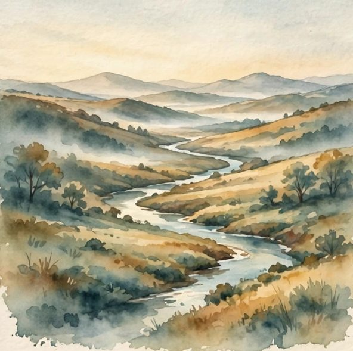
A wide valley at dawn, a river bending through empty, unbuilt land.
This hall holds a country that exists in one place only: the imagination of the person who designed it. It has rivers and provinces, a capital set where a river bends, laws written down and customs older than the writing, markets, schools, festivals, and a gate where strangers arrive. None of it stands anywhere. No stone of it has been cut, no law of it enforced, no child of it born. And yet it is kept here in full, room by room, the way other halls keep a remembered day or an unbuilt house, because an imagined country, described honestly, is also a record of the person who imagined it.
The walk is arranged the way the country itself was made. First come the founding questions: what a designer owes the imagined, and why build what will never stand. Then the land and its cities, the laws and the customs, the work and the money, the schools, the streets at ordinary hours, the festivals, and the strangers at the gate. Near the end the house turns practical and sets out the steps of the designing itself, and the long view at the close asks what a hundred years would do to the place, and what the whole exercise confesses about its maker. Nothing here hurries. A civilization, even an imaginary one, is not taken in at a glance.
A word about what this country is not, before the rooms begin. It is not a proposal. It is not advice addressed to any real place, and it copies no real nation, people, or faith, though it borrows freely from everywhere, the way a dream borrows a staircase. Its people are not puppets cut to applaud their designer; where they argue, refuse, or surprise him, the register says so. Every institution in the following rooms carries its price and its failure mode beside its promise, because a design that hides its costs is not a design but a decoration. The house asks only that the walk be taken slowly, and the country judged as what it is: an exercise in attention.
2The Founding Blank Page
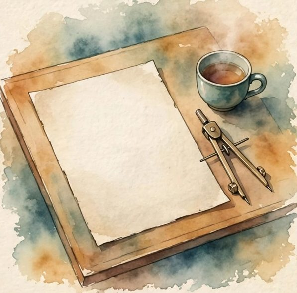
A blank parchment on a drafting table beside compasses and a cup of tea.
Every founding begins with a sheet that is still empty, and the emptiness is worth a room of its own. Before the first coastline is drawn there is only parchment, a pot of ink, a pair of compasses that have measured nothing, and a cup of tea going cool at the designer's elbow. Nothing in the scene is impressive, and that is the point. A civilization does not begin with a proclamation. It begins with a person sitting down in a quiet hour, deciding to take the game seriously, and discovering that seriousness, in this work, means restraint more often than invention.
The blank page is honest in a way the finished map never quite manages to be. It promises nothing and it flatters nobody. It does not yet contain the designer's favorite ideas dressed up as necessities, nor his blind spots dressed up as geography. Every founder in the old stories faced the same sheet, whether they admitted it afterward or not, and the ones who spoke of destiny were usually editing the memory later. The register prefers the plain version: a blank page, a finite lifetime in which to fill it, and no audience. What gets written first therefore matters out of all proportion, because first marks have a way of surviving every later revision.
So the house keeps the founding blank page at the front of the register, ahead of the charter and the coastlines. It is a reminder that the whole commonwealth, all its rooms of laws and festivals, was once entirely optional, and that the decision to begin was the one act in the entire design that cost nothing and could not be delegated to anyone else. Visitors sometimes ask what instrument made the country. The keeper points to the parchment. Not the compass, not the ink. The page itself, and the patience to sit in front of it until the first line could be drawn honestly, without knowing where the second line would go.
3The Keeper of the Imagined Commonwealth
Every hall in this house has a keeper, and this one is kept by the Keeper of the Imagined Commonwealth. The title sounds grander than the work. The keeper does not rule the country, because there is no country to rule; there is a design, a register, a desk, and a long habit of attention. The keeper's duties are the duties of any registrar: to keep the record straight, to answer letters at the desk, to walk the provinces in the mind's slow weather, and to note, without flinching, the places where the design has failed its own intentions. It is clerical work, done daily, for a nation of ink.
It matters that the keeper is not the founder. The designer made the commonwealth in bursts of invention, the way coastlines and constitutions get made, and then, being mortal and distractible, kept wandering off to other projects. The keeper is the one who stayed. Keeping is a different trade from designing: slower, more skeptical, more fond. Where the designer saw a shining institution, the keeper sees the same institution in its fortieth year, with its roof leaking and its clerks arguing. The register is written in the keeper's hand, and the hand is deliberately unshining. It records what the design costs, whom it serves badly, and which of its laws the provinces quietly declined to obey.
The keeper's habits are small ones. Tea at the desk. A lamp lit before the light requires it. A pencil kept sharper than the pen, because more of the work is correction than proclamation. Visitors who arrive expecting a throne find a chair with a worn cushion, and some are disappointed, which the keeper counts as a useful first lesson about the country: power here is mostly paperwork, and paperwork is mostly patience. At the end of this hall, in the long view, the keeper will sign a note in his own name. Until then he asks only to be believed about one thing. He keeps the country honestly, or he does not keep it at all.
4The Charter Desk
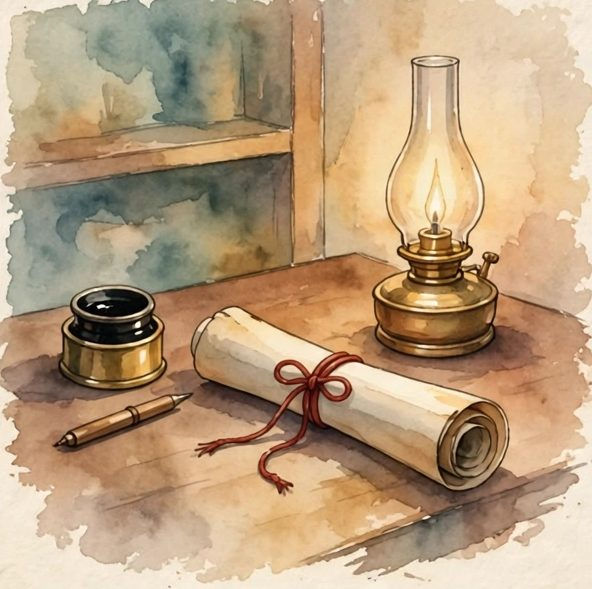
A keeper's desk with a rolled charter tied in red cord, an inkwell, and a lamp.
The Charter Desk is the one piece of furniture the commonwealth cannot do without, and it is, fittingly, a plain one. A broad oak top, scarred by ink and by the rings of a thousand cups. On it, the charter itself, rolled and tied with red cord, unrolled so often that the cord has worn a groove in the parchment. Beside it, the ledger of costs, which is thicker than the charter and grows faster. Beside that, a stack of letters from imagined citizens, some grateful, some furious, all answered. The desk is not a symbol. Symbols do not need their drawers oiled. It is where the country is actually kept.
Every paper the commonwealth produces passes across this desk, and the arrangement of the objects on it is a small constitution of its own. The charter sits at the right hand, because it is consulted most. The ledger of costs sits at the left, because it is consulted second and resented first. The letters sit in the middle, because the keeper holds that correspondence outranks drafting: a law can wait a week, but a citizen who wrote in good faith should not have to. The map, when it exists, lies under everything, drawn last and corrected most, and the inkwell has been knocked over exactly once, an accident the register records without naming the culprit.
Anyone in the imagined country may write to the Charter Desk, and the desk is required to answer in plain language, without citing its own importance. This sounds like a small courtesy and is, in practice, the load-bearing wall of the whole design. A charter that cannot be questioned at a desk becomes a relic in a generation. A desk that must explain itself, letter by letter, year by year, keeps the charter a living document and the keeper an honest one. Visitors to this hall leave their messages at the same desk, under the same rule. The keeper reads them all. The register shows it.
5First, a Country That Exists Nowhere
A coastline seen from a hill, headlands and inlets under morning cloud.
The first entry in the register is a confession, and the house puts it early so that nothing later can be mistaken: this country exists nowhere. It has a coastline, and no ship has ever made its harbor. It has a capital, and no census has ever embarrassed its planners. It has laws, and no one has ever been fined, forgiven, or buried under them. To say this plainly is not to apologize for the country. It is to describe its only honest address. The commonwealth is located exactly where it has always been located: in the sustained attention of one person, renewed at a desk, over years.
Existing nowhere turns out to be a freedom, and the design uses it carefully. Because no real person lives under these laws, the designer may test an institution the way an engineer tests a bridge in a drawing: load it, watch where it bends, write the result down. No one is conscripted into the experiment. No village pays for a theory. But the freedom has a discipline attached, and the discipline is the whole point of this hall. An imagined country that costs its designer nothing to change will be changed carelessly, praised cheaply, and abandoned without a thought. The register therefore treats every revision as if it were expensive, because in the only currency that matters here, attention, it is.
The other consequence of nowhere is that the country exists only insofar as it is described. A real place can afford vagueness; it goes on existing while its historians nap. This one cannot. Where the register is lazy, the commonwealth thins: a province described in one adjective becomes one adjective deep, a law sketched in a mood becomes a mood with a seal on it. So the keeper writes slowly and concretely, suspicious of every summary, knowing that in an imagined country, description is not reporting. It is the whole substance of the place. The coastline in the plate above this room had to be walked, inlet by inlet, before it could hold a single imagined boat.
6The Rules of Imagining a World
Before the coastline came the rules, and the house keeps them in this room, early, where they can govern everything after. They are few, and they bind the designer, not the designed. First: the country is imagined, not proposed, and no sentence in the register may pretend otherwise. Second: every institution must carry its cost beside its promise, in the same handwriting, at the same size. Third: the imagined people are not puppets. They may argue, refuse, grow old, and surprise the hand that made them, and when they do, the surprise is recorded, not corrected. A world that always agrees with its maker is a mirror wearing a crown.
The remaining rules are quieter. No real nation, people, or faith is copied here as a verdict, whether the verdict is praise or blame; the commonwealth borrows a harbor custom from one coast and a school custom from another and belongs to no map that exists. The designer must read his own charter, at least once, as its poorest citizen, and the reading is scheduled, not left to conscience. And the last rule concerns the work itself: the designer may stop at any time, but may not pretend he finished. An abandoned design is entered in the register as abandoned. The register has strong feelings about very little, but it is inflexible about the difference between a door left open and a door described as open.
Visitors sometimes ask whether the rules limit the imagining, and the keeper's answer is that they are what makes it imagining rather than daydreaming. A daydream has no costs, no refusals, no weather that ruins the harvest the charter was counting on. The rules import all three. They are guide-stones along a road nobody is obliged to walk, and like guide-stones they say nothing about where the road should go. They only mark where it has honestly been. The country that follows in these rooms was designed inside these rules for years. Whether it is a good country is a separate question, and the register, characteristically, leaves it open.
7What a Designer Owes the Imagined
A balance scale on a table holding a feather and a small stone.
It is easy to suppose that an inventor owes nothing to inventions, that imagined people, having no lawyers, have no claims. The register disagrees, and this room is its argument. A designer owes the imagined, first, the courtesy of completeness: weather as well as festivals, wages as well as anthems, funerals as well as foundings. A country sketched only at its celebrations is a country lied about, and the lie is not harmless, because the designer's whole purpose here is to learn what he values. He cannot learn it from a brochure. He owes his people their Tuesdays.
Second, he owes them the right to disagree with him. This is the debt designers most often default on. The temptation, at the desk, is to draft a citizenry that ratifies the charter by acclamation and never once asks who pays for the harbor wall. The register treats every such scene as a forgery and strikes it. In their place it enters the refusals: the province that declined the road, the guild that mocked the tax, the schoolteacher who wrote to the desk in terms the keeper answers still. A designer who cannot imagine being refused has not imagined other people. He has imagined an audience, and the difference is the difference between a country and a portrait.
Last, he owes them an ending that is not abandonment. The designer will tire, age, and eventually stop coming to the desk; every imagined country faces this quiet extinction and deserves to face it in an orderly way. So the design is kept coherent enough to be left: its laws consistent, its ledger balanced, its last page written as a last page whenever the work finally rests. The scale in the plate holds a feather and a small stone, the emblem the keeper chose for this room. The debts owed to the unreal are light, but they are not nothing, and the scale is not allowed to pretend that either pan is empty.
8A Civilization, Not a Mirror
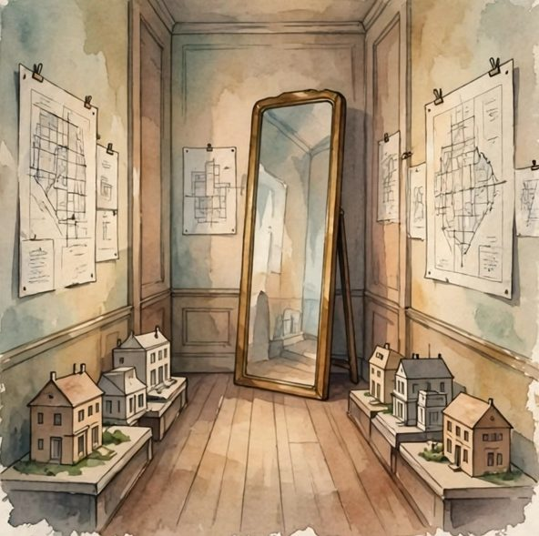
A tall mirror standing at the end of a hall of drafted maps and models.
At the end of the hall of drafted maps there stands a tall mirror, and it is not there for decoration. It is the register's standing warning to its own designer. The easiest country to imagine is the one that resembles its maker in every particular: his tastes promoted to customs, his habits to laws, his prejudices to geography. Such a country builds quickly and reads smoothly, because nothing in it ever has to be explained to anyone who disagrees. It is also worthless as an exercise. A mirror can tell a man his coat is straight. It cannot tell him anything he did not already believe before breakfast.
The keeper has tests for mirror-work, and applies them to this very register. Where does the design inconvenience its designer. Which law in the charter would he personally resent paying for, obeying, or living next door to. Which province's favorite custom does he find faintly ridiculous, and has he let them keep it anyway. If the answers come back empty, the work is not a civilization yet, whatever its page count. In the commonwealth as designed, the hill towns keep clocks the capital considers absurd, the port's manners embarrass the inland parishes, and the tax falls hardest, by the designer's own rueful arithmetic, on people exactly like him. These are entered in the register as evidence, not as decoration.
None of this makes the country impartial; a design carries its maker's fingerprints in every stone, and pretending otherwise would be another kind of mirror, the flattering kind that shows a man his own objectivity. The goal is narrower and more honest. The country should be a place its designer could plausibly fail to fit into: too slow for him in one province, too blunt for him in another, asking of him in a third something he would rather not give. A civilization, not a mirror. The keeper checks the glass at the end of the hall each year, the way other keepers check a roof. So far, the reflection keeps being interrupted by weather, which is how he knows the country is still standing in front of it.
9The Map Is Drawn Last
Beginners draw the map first. It is the most satisfying sheet in the whole design: coastlines curl pleasingly, mountains arrange themselves in photogenic ranges, and the capital lands wherever the composition wants a capital. The register forbids it. In this house the map is drawn last, after the land has been described in words for years, after the laws and the markets and the school customs have had their say. Words first, coastline after. The empty frame in this room's plate is kept on the Charter Desk as the standing reminder, and it has outlasted several enthusiastic atlases that were started early and quietly burned.
The reason is not aesthetic. Geography drafted for drama taxes the wrong people. A river placed where it looks best will flood the towns that were imagined along its banks; a desert placed for grandeur will starve a province that was promised wells. In an imagined country nothing is really flooded and nobody really starves, which is exactly why the discipline matters: the designer is training the habit of asking who bears a decision, in the one workshop where asking costs him nothing but honesty. So the land was built up in prose first, watershed by watershed, commute by commute, until the map, when it was finally allowed, had something true to be a picture of.
There is a second, gentler reason. A map finishes a country in the mind. Once the coastline is inked, the designer stops discovering the land and starts administering it, and discovery was the pleasure that kept the whole exercise alive. Drawing last keeps the country in its long, interesting, unfinished state, where a walk taken in imagination can still turn a corner the charter did not predict. The keeper does eventually draw the map; this hall hangs several, all dated, none final. But the frame stays empty on the desk between revisions, and the register notes with approval that the designer, after all these years, still reaches for the written description first.
10Why Build What Will Never Stand
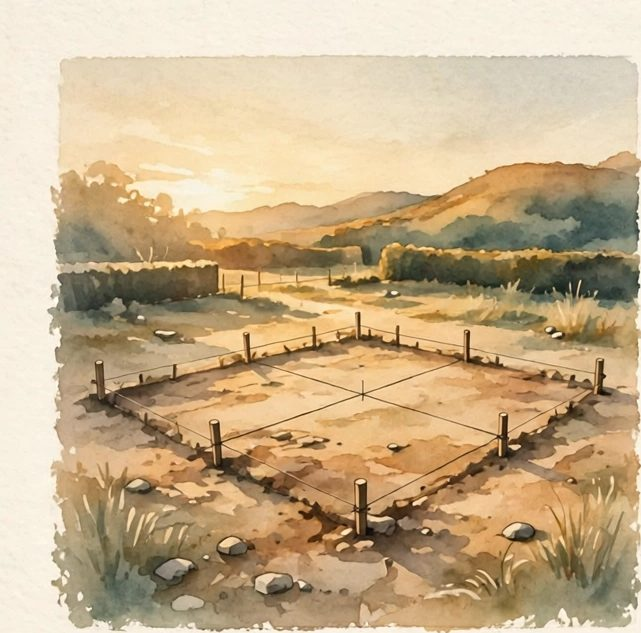
An empty building plot at golden hour, pegs and string lines marking a future square.
Visitors ask this question first, usually standing in the doorway, and the house honors it with a room near the front: why build what will never stand. No citizen will ever pay this country's taxes or curse its weather. No traveler will miss its last train. The plot in the plate will hold its pegs and string lines forever, a square perpetually about to exist. The register's answer has several parts, and the first is the plainest. Because the building is the exercise. A person who must design a whole civilization, and answer for its costs, learns what he actually values in a way that no questionnaire has ever managed to extract from anyone.
The second part concerns attention. Real countries are too large, too old, and too entangled to be seen whole; the mind slides off them. An imagined one can be walked end to end, and the walking trains a way of looking that transfers: at institutions as arrangements rather than weather, at laws as things somebody drafted at a desk, at customs as decisions that were once somebody's idea. The house claims no more than this. It does not claim that imagining a civilization improves the real one, and the register strikes any sentence that drifts toward such a promise. What is trained here is a habit of noticing, and habits are modest things with long shadows.
The third part the keeper states without embarrassment: it is absorbing work, and absorbing work needs no further visa. People build model railways through countries no bigger than a table, and nobody demands the trains justify themselves by improving transport. This country is a larger model, built of prose instead of balsa, and its pleasures are the same kind: the harbor coming right, the law that finally reads plainly, the province that surprises its maker. The plot stays empty and the square stays unbuilt, and the string lines, the register notes, have given more honest pleasure than many finished plazas. That is reason enough, and the house rests its case there.
11The Commonwealth in One Sentence
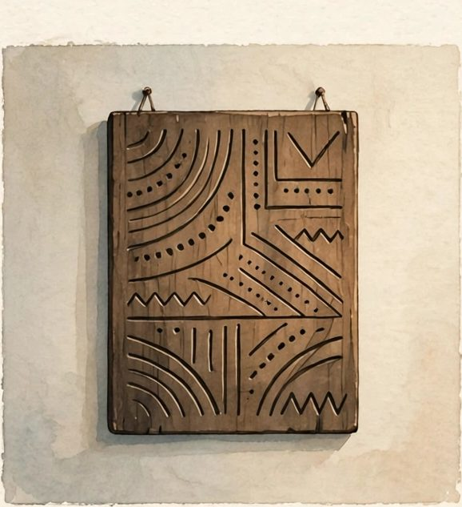
A carved wooden board with abstract carved marks only, hanging in a hall.
Every design in this house must survive one small cruelty before it is allowed to grow: it must fit into a single sentence. The commonwealth's sentence took a winter to write and is carved, in abstract marks, on the board in this room's plate, where the designer cannot easily revise it at midnight. It reads: a country of few laws, kept well, where work is honored, strangers are fed before they are questioned, and everyone is left alone more than is convenient for the state. The sentence is not the country. It is the country's pocket constitution, the version a citizen could carry in memory and quote at a clerk.
What the sentence leaves out proved as instructive as what it holds. There is no mention of glory, or size, or victory over anyone, and the designer, reading his own draft, had to notice that he had never actually wanted those things in a country, only in sentences about countries. There is no promise of happiness, because the keeper struck it as a debt no charter can pay. There is one deliberate discomfort: the closing clause about being left alone cost the designer more than any other phrase in the design, because he enjoys a well-run meeting and other people's business more than the sentence permits him to admit. The register keeps that discomfort in. It is the load-bearing clause.
Visitors are invited to try the exercise on their own certainties, and most find, as the designer did, that the sentence is a stricter editor than any critic. It forces the question of what the whole arrangement is for, in words short enough that evasion shows. The commonwealth grew to a hundred and twenty rooms after its sentence was carved, and the rooms have added costs, exceptions, and honest failures the sentence never mentions. But when a new institution is proposed at the Charter Desk, the keeper still reads the sentence aloud before the discussion begins. If the proposal cannot survive the reading, it does not survive the winter either.
12The First Rule of the House
The founding rooms end with the first rule of the house, and the house asks that it be said at the door, in plain words, before the land and the laws begin: this country is imagined, not proposed. Nothing in the rooms that follow is a program for any real place. No reader is being recruited, no policy smuggled, no verdict delivered on any nation that exists. The commonwealth is a design study held in one mind, kept in a register, and offered to visitors as exactly that. The rule sounds like a disclaimer. The keeper insists it is the foundation, and that everything honest in the building stands on it.
The rule protects two parties at once. It protects the imagined people, who never consented to be conscripted into anyone's argument about the real world, and who would be puppets indeed if their customs were quoted as evidence in disputes they cannot attend. And it protects the visitor, who is entitled to walk these rooms without being managed: to enjoy the harbor, argue with the tax, admire the festival, and go home unpersuaded of anything except, perhaps, that designing a country is harder than it looks from the doorway. Persuasion is not the house's trade. Attention is, and attention does not need a hidden agenda to justify its keep.
All the lesser rules of the register descend from this one. Costs are counted because a designer who might be proposing something would hide them. The citizens are allowed their refusals because a proposal would need them unanimous. The borders stay in pencil because a program would need them defended. When the keeper is unsure how to enter some new institution in the register, he returns to the threshold and reads the rule again, the way a clerk re-reads the first page of a ledger at the start of an audit. Then the walk continues into the land and its cities, with the rule posted where the lamplight reaches it: imagined, carefully, and kept honestly.
13The Land and Its Cities
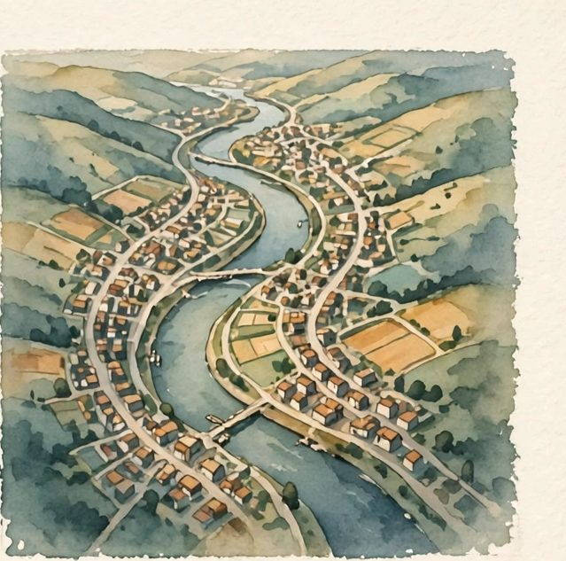
A high view of a river valley with small towns scattered along its roads.
The second hall of the house is given to the land itself, and the order is deliberate: land before laws, because weather outlasts charters. The commonwealth is a modest territory, small enough to walk across in the mind in a day of rooms: one great river running from northern hills to a southern coast, a desert province in the rain shadow, hill towns in the east, a scatter of ports where the river country meets the sea. Nothing in it is extreme. The register resists dramatic geography the way it resists dramatic politics, on the same grounds: extremity is easy to describe and hard to live in, and this design is interested in the living.
The land was assembled by prose before it was ever drawn, as the founding rooms explain, and it carries the marks of that method. Distances in the commonwealth are measured by how they feel to the people crossing them: the desert is the width of three days between wells, the hills are the height of a morning's climb, and the capital is the place the roads begin apologizing for. When the map was finally drawn, some of these felt distances refused the surveyor's chain, and the keeper let them stand. A country is known by its inhabitants in journeys, not in measurements, and the register's geography is unashamedly written from the road.
Cities come after land in this hall for the same reason the land comes after the founding: sequence is a form of honesty. A city placed before its watershed is understood would be a stage set, handsome and unplumbed. So the rooms that follow take the country piece by piece: the coast before the capital, the capital by its river, the provinces arguing with the center, the ports smelling of elsewhere, the villages outnumbering every plan that tries to contain them. Visitors who want the whole territory at a glance are directed to the plate above this room. The keeper's only request is that they remember the valley in it is empty of everything except attention, and that everything else in this hall was built on it slowly.
14A Coast Before a Capital
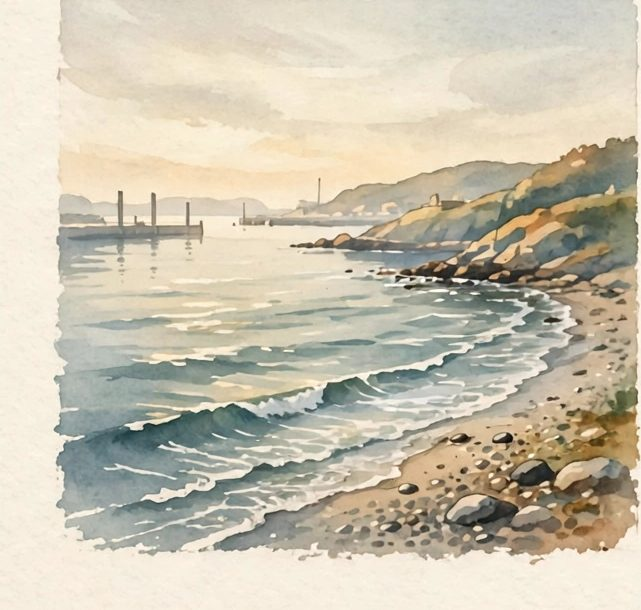
Waves meeting a quiet harbor shore at first light.
The coastline was described before the capital was named, and the register considers this the founding's luckiest accident, because the sea is the commonwealth's first fact and its oldest teacher. A coast means the country is not self-sufficient, whatever its charter later claims. Weather arrives from elsewhere. Goods, languages, and doubts arrive from elsewhere. People leave, which is the fact capitals most prefer to forget, and people arrive changed by the leaving. By drawing the shore first, the designer gave his country an edge it could never seal, and every institution designed afterward had to be designed with the windows open.
The coast itself is unglamorous: a working shore of harbors, salt pans, fishing villages, and one cliff the painters of the country have done to death. Storms take a roof most winters. The tide exposes mud that no anthem mentions. The register insists on these entries because a coastline in a design is usually the first place the lying starts, all sunsets and no erosion. Here the costs are entered plainly: harbors silt and must be dredged at public expense, the fishing is poorer than the old songs say, and every generation, some families conclude that the sea is a bad landlord and move inland, and the country lets them, and misses them.
What the coast buys, in return, is a permanent correction to the capital's imagination. Inland power tends to believe the country is the size of its paperwork. The shore knows better: it trades with strangers whose laws are a rumor, it reads weather the ministries cannot schedule, and it measures the commonwealth against harbors a week's sail away. The keeper walks the coast in imagination at the start of every year of the design, before auditing anything else. A country should be inspected from its edge inward, he writes, because the edge is where it touches everything it is not.
15The Capital, Placed by a River
The capital sits where the river bends, and it sits there for reasons a mule could understand: water for the wells, a crossing for the roads, flat ground for the markets, and high ground close enough for the archive when the river misbehaves. It was not placed for its view, though the view, in the event, is fine. The register is proud of this unromantic founding, and records the debates the designer had with himself, in which grander sites were proposed — a cliff capital, a lake capital, a capital in the exact center like a pin in a map — and rejected, one by one, for taxing the imagined inhabitants for the designer's composition.
It is not the largest city in the commonwealth, and the charter is content to leave it so. The great port outweighs it in trade, one of the hill towns outweighs it in age, and several villages outweigh it in the register's private affections. The capital is first in paperwork only: the Charter Desk sits here, the ledger lives here, the letters arrive here. This arrangement has a known failure mode, which the keeper enters without flinching. A capital that is merely administrative learns to mistake its files for the country, and the files, being tidy, agree with it. The arguing provinces in the next rooms exist largely as the cure.
And the river floods. Not catastrophically, not often, but on a schedule the city has stopped resenting and started keeping: cellars cleared in the wet month, the lower market trading from boats in the famous years, the bridge inspected by men who enjoy saying it will not last. A designer could have moved his capital uphill in an afternoon of revision. The register refused. A country whose founding inconvenience has been edited out teaches its designer nothing except editing. The flood stays in the design, with its costs, as a standing reminder that geography is not the charter's employee.
The Charter Desk
One desk receives all correspondence for this house — questions, corrections, and word of any imagined country a visitor has been designing: the law they are proudest of, the custom they cannot justify, the province that refuses to behave. It is read in the order it arrives, and entered in the register of the commonwealth.
16Provinces That Argue With the Center
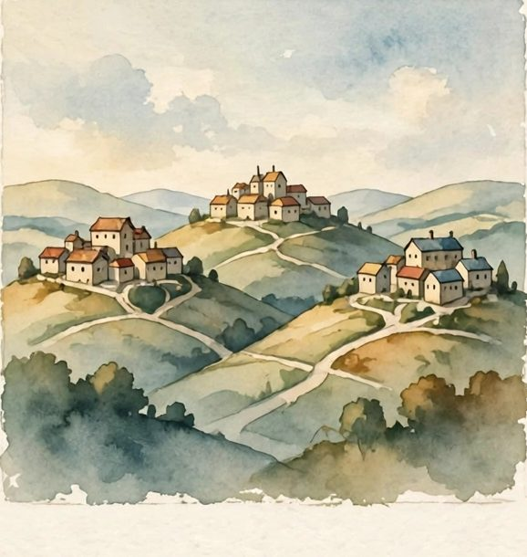
Three hilltop towns under one sky, each with a different colored roof.
The provinces were given their own clocks, their own roof colors, their own grievances, and, most importantly, their own reply. Argument between the provinces and the center is not a malfunction in the commonwealth; it is load-bearing. The charter issues a rule from the capital, and the rule travels outward and meets weather, distance, dialect, and custom, and comes back annotated. Sometimes the annotation is a correction the capital needed. Sometimes it is mere stubbornness wearing a provincial hat. The register declines to decide which is which in advance, because a center that pre-judges its replies stops receiving honest ones.
The mechanism is modest. Every law of the commonwealth carries a season of reply, during which any province may return it with objections written in plain language, and the Charter Desk must answer the objections or withdraw the law. This slows everything, and the slowness is entered in the ledger as a cost, in ink, without apology. Laws that cannot survive a season of being argued with by hill towns were probably capital fashions dressed as necessities. The ones that survive come back shorter, plainer, and strangely more obeyed, as if the argument itself were part of the enforcement, which, the keeper notes, it is.
This is also the room where the design most plainly escapes its designer, and the register celebrates the escape. The designer finds, to his own surprise, that he sympathizes with the provinces against laws he drafted himself; that his capital's clerks, in his own imagination, have begun to bore him; that the country's center of gravity sits stubbornly somewhere he did not put it. A mirror would not do this. A mirror's provinces vote as instructed. Here the hill towns keep their different roofs under one sky and answer the desk in their own time, and the commonwealth is more believable, and more instructive, for every letter that begins with the words: with respect, no.
17Ports and the Smell of Elsewhere
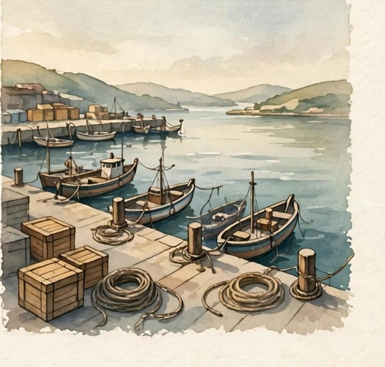
A harbor with moored boats, crates and coiled ropes on the quay.
Every port in the commonwealth smells of elsewhere, and the register means this as more than a remark about tar and fish. A port imports accents before it imports cargo. It imports recipes, jokes, heresies, tools with no local name, and the unsettling news that other people organize Tuesdays entirely differently and are not obviously worse off. The inland parishes call this smell corruption when they are frightened and sophistication when they are buying, and the keeper, who has walked the quays in imagination for years, files it under a plainer word: information. A country with ports cannot long pretend its own customs are the only ones weather permits.
Trade at the ports is priced honestly, which the trading hall of this house will examine later; here the point is cultural. The commonwealth's ports are required to keep their foreign quarters unhidden, their translators paid from public funds, and their customs house smaller than their market hall, an ordering of buildings the designer chose on purpose. Strangers' goods are inspected for safety and taxed at the published rate, and strangers' ideas are inspected by nobody at all, which costs the country a certain amount of permanent low-level argument and buys it a permanent low-level education. The ledger counts both, and calls the exchange fair.
Once, in an early draft, the designer closed the ports for a decade of story-time, to give the country a rest from elsewhere. The register keeps the draft as a cautionary exhibit. Within a year of imagined time the country had grown smug, then stale, then faintly frightened of its own coastline. He struck the closure out and entered, in the margin, the only sentence in the register that approaches an epitaph for the whole experiment: the day this country stops smelling of elsewhere, stop designing it. The ports were reopened, the translators rehired, and the harbors resumed their untidy, indispensable work of reminding the capital that the world is larger than the charter.
18The Hill Towns Keep Their Own Clocks
The hill towns of the eastern province keep their own time, and they keep it on purpose. Each town sets its clock by its own sunrise, which in folded country can differ from the capital's by the length of a market morning. The charter permits this, having failed, in an early draft, to prevent it. So the commonwealth lives with a gentle temporal untidiness: the noon bell means noon in one town, mid-morning in the next valley, and in the capital, whatever the ministry says it means. Visitors find this charming for a day and maddening for a week, which the keeper considers the correct doses.
The costs are real and the register lists them without flinching. Trains, where the country has them, run on capital time and apologize at every hill station. Markets open by the local bell and close by it, and merchants crossing the province carry the conversion in their heads like a second currency. Letters arrive, occasionally, before they were sent, by local reckoning, which delights children and ruins clerks. A tidier designer could abolish the whole arrangement with one stroke of the pen. The register has calculated that stroke's price as well: the hill towns would obey, and something in the country would quietly stop believing that its own hills were real places rather than administrative weather.
What the untidiness buys is a standing lesson, repeated daily at every bell: the center is a place, not the world. A citizen of the capital who must ask a hill town what time it is has learned, in his body, that the commonwealth is larger than his paperwork. The keeper ranks this among the cheapest pieces of civic education in the entire design — a few late trains, a few spoiled appointments, in exchange for a whole country that cannot forget it is plural. The clocks stay uncorrected. In the plate above this room their hands disagree, and the register enters the disagreement, as it enters so much in this hall, under the heading of evidence.
19Roads Are Promises Between Places
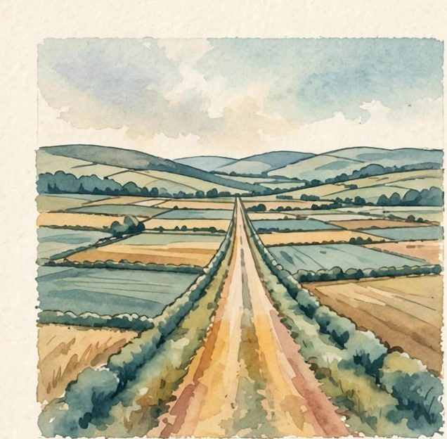
A long straight road crossing farmland toward distant hills.
A road in the commonwealth is not a line on the map but a promise made between two places, and the register keeps the promise's terms in this room. The promise is specific: that the way will be passable in the wet season, that the bridge tolls will be the posted ones, that a traveler who sets out at dawn with a sound cart will arrive. Somebody has to keep that promise with gravel, drainage, and winter labor, and so every road in the design carries, beside its name, the name of the district that maintains it and the tax that pays the crew. Romance about roads ends where maintenance begins, and this house begins there.
The costs arrive honestly in the ledger. Road crews are the commonwealth's largest unglamorous expense, larger than the archive, larger than the observatory the country is so proud of. In lean years the temptation at the Charter Desk is always the same: let the far roads go one more season, since the capital's streets are what visitors see. The register records the temptation and its answer. A country that maintains the roads it shows off and neglects the roads it does not is designing a theater, not a commonwealth, and the villages at the far ends of the neglected miles will draw the correct conclusion about their citizenship long before the capital does.
A road also promises in the other direction, which the charter counts as part of its price. The same passable mile that brings the harvest to market brings the tax clerk, the recruiter in the old songs, the stranger, the rumor, and the occasional armed inconvenience of history. Places that were safely remote become merely distant, and some of what remoteness protected is lost for good. The commonwealth builds its roads anyway, eyes open, one district at a time, and lets any village petition to keep its road rough — a petition granted more often than the capital's engineers think wise. The promise, the keeper writes, belongs to the places. The center only underwrites it.
20The Desert Province Pays in Patience
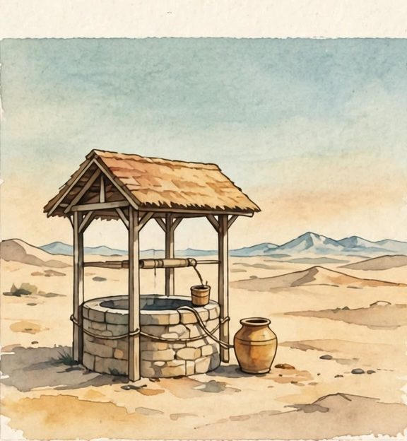
A desert well with a shaded shelter and a water jar under a vast sky.
The desert province occupies the rain shadow of the northern hills and contributes, by the capital's arithmetic, almost nothing: little grain, less tax, distances that swallow road crews whole. Its wells are the oldest public works in the commonwealth, older than the charter, and its people keep a reputation in the provinces for being impossible to hurry and unwise to cheat. The register opens its room by correcting the capital's arithmetic. The desert pays its dues in a currency the ledger has had to learn to record: patience, astronomy, and the country's best memory for where water was found in the drought years, which is to say, in the years that decide whether there is a country.
The subsidies flow toward the desert, and the register enters the grumbling on both sides in full. The river provinces complain, in their letters to the desk, that they fund wells they will never drink from. The desert replies, in letters of celebrated brevity, that the river provinces may come and live without the wells in a dry year and see how the accounts settle. The keeper answers both letters and keeps both, because the exchange is the sound of a federation being honest about its terms. A commonwealth that hides its transfers teaches its rich provinces to call themselves self-made. This one posts the figures at the well houses, where anyone may read them while the jars fill.
What the desert teaches the design is the limit of the designer's favorite tool, which is improvement. There is no version of the charter that makes the desert bloom without spending the river provinces' inheritance on pumps, and the designer, after several spreadsheets of the soul, declined to write that version. Some places are to be accompanied, not fixed. The wells are kept, the shelter at each is kept better, the star-charts the desert sells to the observatory are bought at the asking price, and the province pays in patience: the long, unrecorded skill of waiting out a dry season without eating the seed grain or blaming the sky's politics.
21A City Built Around a Library
One city in the commonwealth was built, by slow accident ratified into design, around its library rather than around a palace or a market. The streets radiate from the reading rooms the way other cities' streets radiate from a keep. Property near the stacks is dear, cafés near the catalogue are better, and the city's idea of a founding hero is a librarian two centuries dead whose name the port, characteristically, cannot pronounce. The designer did not plan this hierarchy of values in the founding winter. He noticed, one year, that his descriptions of the city kept starting at the library steps, and he had the honesty to promote the observation into the plan.
What the arrangement does to the city is mostly good and partly absurd, and the register records both. Evenings are long and literate; the copying trade thrives; arguments in the square are settled by fetching a book, which slows them down wonderfully. Rents near the center climb in a way the charter deplores and cannot fix, because people will pay to live near what they love, and the law has no instrument fine enough to forbid affection. The city's calendar bends around the library's hours, and when the library closes for its annual cleaning week, the whole municipality drifts in a way that visiting merchants find unsettling and slightly comic.
Its failure mode is preciousness, and the keeper names it plainly. A city that takes its identity from a library begins to mistake quiet for virtue and dust for depth. It produces citizens who would rather annotate a famine than organize a granary, and it patronizes the port, whose citizens respond by being louder than strictly necessary whenever they visit. The register keeps the rivalry in the record as a healthy sign. The library city remains the commonwealth's memory and its conscience on alternate days, but the design takes care that it is never the country's only idea of a city. The port, the hill towns, and the well-side villages are the standing correction.
22Villages Outnumber Every Plan
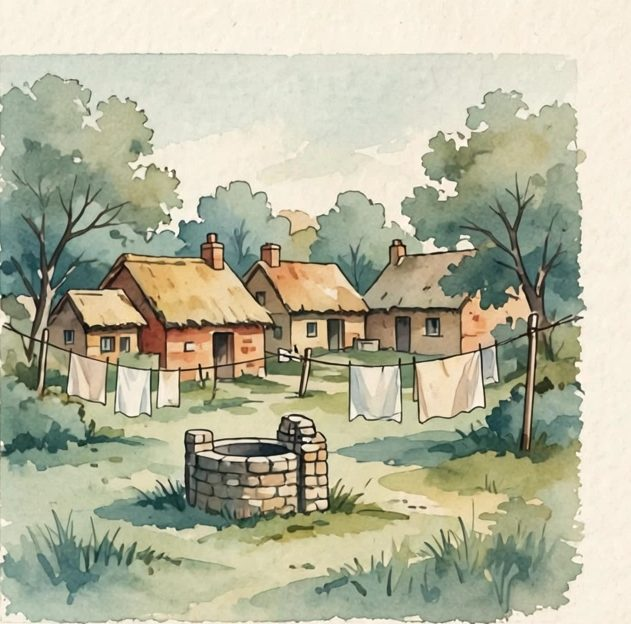
A village green with cottages, a well, and washing lines between trees.
Most of the commonwealth lives in villages, and the charter mentions villages in a single paragraph, and the register regards this mismatch as the most instructive oversight in the whole design. The capital imagines the country as cities connected by roads. The country is, in fact, villages connected by footpaths, with a few cities standing in it like large, busy mistakes. Every plan drawn at the Charter Desk therefore arrives in a landscape that outnumbers it: for every ministry memorandum there are four hundred wells, six thousand harvest customs, and a million arrangements between neighbors that no desk will ever hear about, most of them working.
Plans fail at village scale first, and the register has learned to test them there. A school law that shines in the capital dies quietly at a village where the teacher is also the miller and the schoolroom is needed for grain in October. A tax schedule that reads fairly in the ledger starves a village whose wealth is in geese. The keeper's rule, entered after several such funerals, is that no institution counts as designed until it has been imagined operating in the smallest village in the desert province, with the worst weather and the least paper. What survives that imagining can be written down. What does not survive was a capital hobby.
The keeper walks the villages of the commonwealth in imagination more faithfully than he walks its ministries, and the margins of the register are full of well-side corrections: a bridge resited because the women who carry water had not been consulted in the drawing, a market day moved because it collided with a saint of the irrigation calendar. None of these corrections makes the design grander. All of them make it truer, which is the register's whole ambition. The plate above this room shows the heart of the matter: a green, a well, washing between the trees. The commonwealth's real parliament, the keeper writes, has always sat there, and it does not adjourn for charters.
23The Borders Are Drawn in Pencil
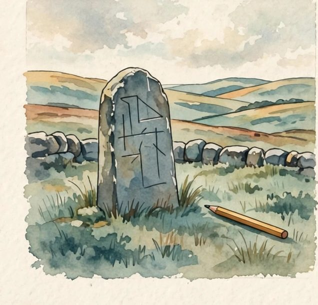
A border stone on a moor with a pencil laid beside it.
The borders of the commonwealth are drawn in pencil, and the border stone in this room's plate has a pencil laid beside it, at the keeper's instruction, as the truest heraldry the country owns. The reason is partly chronological: the land was imagined before its edges mattered, and by the time edges mattered, the designer had grown suspicious of any line he could not imagine renegotiating. A penciled border can be moved by agreement without anyone having to lose a war over the moving. In a designed country, where no one can actually be killed for a surveyor's flourish, the keeper considers ink on a border to be the one unforgivable extravagance.
Pencil also admits a fact that ink conceals: the neighbors are imagined too, and they have their own registers. The country beyond the moor keeps different laws, a different festival year, and a border stone of its own, with its own pencil. Where the two designs disagree about a valley, the disagreement is recorded as a disagreement, in both registers, in plain language, and left standing — an arrangement the real world's atlases might envy and this house offers to nobody, being a design and not a proposal. The valley, meanwhile, grazes its sheep under both claims and appears, from the sheep's perspective, adequately governed.
The cost of pencil is uncertainty, and the register enters it honestly. Border villages live with a mild permanent question about which desk their grandchildren will write to. Land near the line is cheap for the saddest of reasons. Smugglers of small things — salt, ribbons, songs — treat the pencil as an invitation. Against these costs the keeper sets one benefit he will not trade: no line in this country has ever been worth a life, because no line in it was ever drawn as if it were. The hall of the land closes soon. Its last lesson is written in graphite: hold the edges lightly, and spend your ink on the wells.
24No Map in This House Is Final
The hall of the land closes with the rule its rooms have been demonstrating all along: no map in this house is final. Every map in the register carries a date, the name of the hand that drew it, and a small written apology in the corner, because every one of them is wrong somewhere and the ones that claimed not to be were wrongest. The coastline migrated twice between drafts. A river was moved once, by a whole day's journey, and the keeper kept the flooded cellars of the first version in the record, as a reminder that even corrections have costs and that the country's memory is not obliged to match its geography.
The deeper reason is that the country changes as its designer learns. Provinces drift in his understanding the way real ones drift in their alliances: the desert province grew larger and more important across the years of designing, the port shrank from a rival capital to a beloved nuisance, and one entire hill town turned out, on inspection, to have been two villages sharing a name and a feud. A final map would certify that this learning had stopped. The register is more afraid of that certificate than of any error a pencil can make. An inaccurate map invites a walk. A final one invites an archive, and archives are where imagined countries go to stop being imagined.
So the drafting table stays as the plate shows it: layer over layer, corrections over corrections, the newest sheet translucent with the work of being revised. Visitors who ask for the map of the commonwealth are handed the top sheet and the whole stack beneath it, because the stack is the answer. The keeper's own copy is the most corrected of all, its margins a small autobiography of second thoughts. When the walk leaves the land for the laws, it goes with the traveler's oldest blessing and the designer's hardest rule stitched together: the territory is real only in attention, the map is a draft, and the pencil stays on the table.
25Laws and Customs
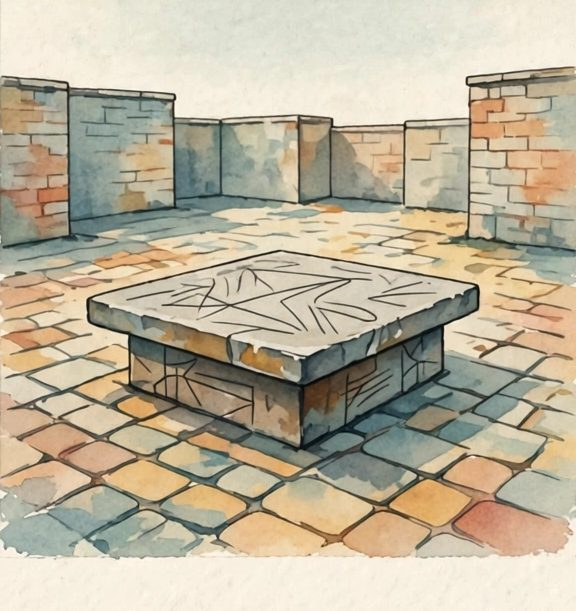
A stone law-table in a square, its surface carved with abstract lines only.
The third hall of the house is given to what the commonwealth wrote down, and to the larger country of what it never needed to. The register opens the hall by marking the distinction that all its rooms will use: law is the floor, custom is the furniture. Law is the small set of arrangements the country enforces on the unwilling, written in stone in the square where anyone may read it. Custom is everything else — the vast, unwritten, load-bearing fabric of how people queue, lend, mourn, celebrate, and forgive — which no desk drafted and no majority could repeal by Friday. Confusing the two is the beginner's error this hall exists to prevent.
The method of the hall is uniform, and the visitor is asked to hold the keeper to it. Every law presented will be read with its price beside it: what it costs to enforce, whom it serves badly, and what happened the time it failed. Every custom will be asked two questions: whom does it protect, and whom does it quietly tax. A custom that protects everyone and taxes no one has never been found in this country or, the keeper suspects, in any other, and the register is instructed to record it with special suspicion if anyone claims to have found one. Honesty about customs matters more than honesty about laws, because customs are where people actually live.
The hall is also where the designer's humility gets its longest workout. Laws can be drafted at a desk in a winter. Customs cannot be drafted at all; they can only be imagined thickly enough to push back, the way the provinces pushed back against the capital's paperwork. Several customs in these rooms were invented by the designer in an afternoon and then, across the years of the register, grew roots he did not plant and opinions he does not share. He has left them standing. A custom the designer dislikes and tolerates is worth a chapter of laws he admires, as evidence that the country is a country and not, after all, a mirror.
26Few Laws, Kept Well
Three weathered law-stones standing in grass by a path.
The charter of the commonwealth contains few laws, and the fewness is not laziness but arithmetic. A law must be remembered by ordinary people in the course of ordinary trouble, without a lawyer, a library, or a calm afternoon. Every law beyond the number a fisherman can recite at his nets is a law that will be known mainly by the people paid to know it, and enforced mainly against the people who are not. The register therefore keeps the count low enough to carve on three stones by a path, and treats each proposed addition as an eviction hearing: which existing law will be forgotten to make room for this one.
A law nobody can recite is a trap rather than a rule, and the charter's other articles are built to keep the few laws legible: the reading-aloud test in a later room of this hall, the season of provincial reply, the annual accounting of failures. Enforcement costs rise with obscurity faster than with severity, the keeper notes, because an obscure law must be explained at every doorway it darkens. The commonwealth prefers a short text and a high standard of keeping to a long text and a low one. Its law-stones are weathered not by neglect but by reading; generations of thumbs, in the fiction, have worn the edges attending to them.
The failure mode of fewness is entered in this room without flinching, because the house counts costs or it counts nothing. Where the laws stop, disputes do not; they flow into custom, and custom is not always gentle. A country with few laws asks its customs to carry weight — neighborly pressure, reputation, the long memory of the village — and that weight occasionally crushes the odd, the unpopular, and the new arrival, precisely the people a written law might have sheltered. The register records two such cases in full and calls them the price of the three stones. The design holds its course, but it holds it with the price tag showing.
27The Custom Older Than Any Law
The oldest institution in the commonwealth is a custom, and it predates the charter by the whole length of the country's imagined memory: when a household falls ill, its neighbors feed its animals and bring in its harvest, without being asked and without keeping accounts. No founder decreed it. It is worn into the country like the footpath in this room's plate, a way across the field that no road-builder planned and no map records, made by feet going where help was needed until the going itself became the way. The keeper opens the room with it because every law in the charter is, by its measure, a recent and experimental thing.
The desk once tried to codify the custom, in a well-meant winter, reasoning that so good a practice deserved the protection of a text. The written version emerged with definitions of illness, schedules of obligation, and a penalty for neighbors who failed to appear, and the provinces returned it with a unanimity the register has rarely seen since. The custom, written down, had become a tax with sentimental wording, and worse, a thing that could be done badly on purpose and defended at a hearing. The law was repealed with relief on all sides, and its single carved stone was laid flat in a farmyard, where it serves, in the fiction, as a step.
The lesson entered in the register is a restraint, and it governs the whole hall: some goods survive only unlegislated. The designer's itch to secure every virtue in writing is itself one of the vices the design exists to examine. So the custom stands unwritten, enforced by nothing but its own long usefulness and the village's memory of who appeared and who did not. It has outlasted three charters in the telling and will outlast the fourth. When visitors ask what holds the commonwealth together, the keeper does not point to the law-table in the square. He points out the window, at the field, where the path crosses it.
28How a Dispute Ends Without a Winner
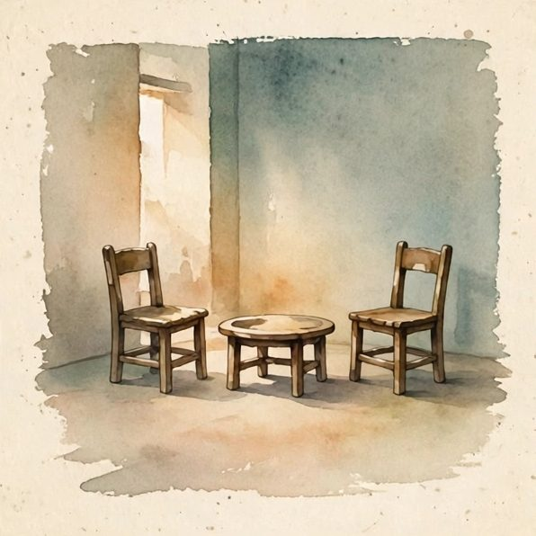
Two chairs facing each other across a low table in a plain hall.
Disputes in the commonwealth end at a low table, in a plain room, and the furniture is the procedure: two chairs, no bench raised above them, and a table low enough that nobody can pound it convincingly. Before any claim is argued, each party must state the other's case, to the other's satisfaction, out loud. A striking share of disputes, the register notes, die at exactly this point, of natural causes — a claim that cannot survive being heard in its owner's own ears rarely improves with advocacy. What remains after the stating is usually narrower, drier, and more honest than what walked in, and the hearing proceeds on what remains.
Outcomes at the low table apportion repair rather than declare victory. The question the hearing asks is not who was right but what is now broken, and whose hands, money, or seasons will mend it. This produces settlements that look untidy — a boundary fence rebuilt by both households, a debt split three ways between two people and a bad harvest — and that hold, in the fiction, far better than verdicts do. A verdict manufactures a loser, and a loser is a citizen employed full-time in resentment. The commonwealth prefers its citizens otherwise employed. The costs are entered too: the procedure is slow, it asks more of the injured than of the injurer, and once a generation it is gamed by a party eloquent enough to perform understanding it does not feel.
Some disputes do not end at all, and the procedure has the honesty to provide for them. A hearing may adjourn a quarrel for a season — the fence unbuilt, the matter unspoken, both parties forbidden to recruit the village — on the register's theory that time is a legitimate instrument of justice and not merely its delay. A surprising number of adjourned quarrels are settled by the season itself: a birth, a death, a shared emergency at the wells. The ones that return are heard again, at the same table, by people a season older. The keeper counts this room's furniture among the design's few unambiguous successes, and immediately enters the caveat that success at a low table depends on a village that still believes in tables.
29What the Commonwealth Refuses to Punish
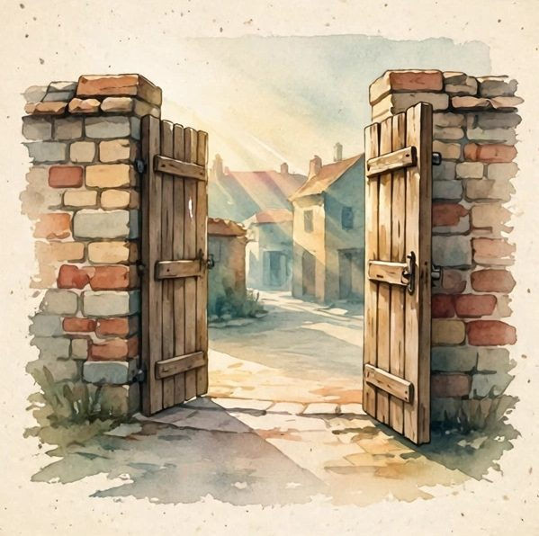
An open wooden gate in a town wall, morning light passing through.
The charter's most argued pages are its refusals: the list of things the commonwealth has examined and declined to punish. It will not punish grief for being untidy, or long, or strangely funny at the funeral meal. It will not punish leaving — the citizen who departs for the neighboring country owes the desk a forwarding address for his letters and nothing else, neither apology nor permission. It will not punish unbelief in any of the country's assorted faiths, nor idleness within the wide limits this hall's fourth room will set by the market square. Each refusal was drafted in the aftermath of a story, and the register keeps the stories attached, because a refusal without its story reads as laxity and is, in fact, a scar.
Every refusal has a price, and this room pays it in the open. Where grief is unpunished, some grief is performed for advantage, and the village learns to tell the difference more slowly than it would like. Where leaving is free, some departures are pure ingratitude at public expense, and the country watches skills it paid to train sail out of the harbor. Where unbelief is safe, the faiths must make their own weather without the state's umbrella, which some of them experience as abandonment. The register counts all of it and declines to total it into a verdict, because the alternative prices — the punished mourner, the forbidden emigrant, the licensed conscience — were also counted, in the drafting winter, and were worse.
A refusal, the keeper insists, is not indifference. The commonwealth answers harm with repair, restitution, and the low table; it simply declines to convert every sorrow, oddity, and defection into an offense with a tariff. The distinction is maintained by the plainest of tests, applied at the desk whenever a new punishment is proposed: name the person harmed, in a sentence without adjectives. If the sentence cannot be written, the proposal goes back into the drawer where the charter keeps its other temptations. The gate in this room's plate stands open in the town wall, not because the wall is useless but because the wall was built for weather and wolves, and the charter refuses to mistake its own citizens for either.
30Promises Are a Public Utility
The commonwealth treats promise-keeping the way other countries treat the water supply: as a utility, boring in exact proportion to its importance, and maintained in public. The reasoning is functional rather than noble. Nearly every institution in this hall runs on promises — credit, marriage, office, the road crews' contracts, the border-pencil agreements with the neighbors — and a country where promises are unreliable must replace them with guards, bonds, and suspicion, all of which are more expensive than trust and none of which work as well. So the charter attends to promising the way it attends to wells: as infrastructure, with a maintenance schedule.
The mechanisms are small and visible. Promises of consequence are made at the desk or before witnesses, in sentences short enough to be remembered whole by both parties. Children learn the country's central liturgy early, not from a book but from watching: an adult who has broken a promise says so, plainly, before he is found out, and names what he will do instead. The register rates this spectacle — apology as public works — above every civics lesson in the schools hall. A promise register is kept, not as a court exhibit but as the town's memory of who said what, consulted the way one consults a tide table: without anger, and before setting out.
The cost of the arrangement is a certain national slowness, and the ports feel it most. The commonwealth signs less than its neighbors and means more of it, which in trade is a handicap measured in missed tides and impatient captains. Its merchants are mocked abroad as the people who read the contract. The keeper enters the mockery in the ledger without rebuttal and enters, beneath it, the country's default rate on promises of consequence, which the neighbors' own merchants quote when no one official is listening. The taps in this room's plate run clear along the square wall, free to anyone, unremarkable to everyone. That is what a utility looks like when it is working, and the charter intends promises to look exactly that dull.
The Charter Desk
One desk receives all correspondence for this house — questions, corrections, and word of any imagined country a visitor has been designing: the law they are proudest of, the custom they cannot justify, the province that refuses to behave. It is read in the order it arrives, and entered in the register of the commonwealth.
31The Right to Be Left Alone
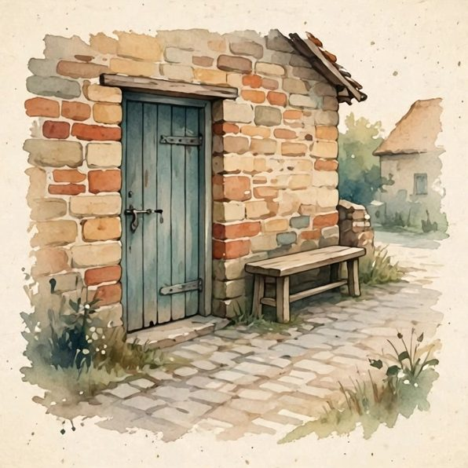
A cottage door closed peacefully, a bench beside it, the lane empty.
The quietest article in the charter protects a citizen's right to be left alone, and it is phrased, at the keeper's insistence, as a property of doors: a closed door is not an insult, a declined invitation is not an event, and no citizen owes the commonwealth a reason for either. The article was not written for hermits, who need no one's permission. It was written for ordinary people in a country whose customs are warm, sociable, and tireless — a country where the square, the festival, and the neighborly visit can, between them, consume a life entire. In such a climate, solitude needs a charter the way a well needs a curb: not to forbid the water, but to keep people from falling in.
What the article protects is unglamorous and essential: an unobserved afternoon, a grief conducted in private, an unfashionable opinion ripening at its own speed, a citizen's recovery from company after illness, bereavement, or mere temperament. What it costs is entered in this room with the same plainness. A country that respects closed doors will sometimes respect one too long: loneliness in the commonwealth occasionally goes unvisited past the point where a knock would have been mercy, and the register keeps one such case written out in full, as the article's permanent footnote. The balance between the knock and the door is left to custom, which adjusts it village by village, generation by generation, never finally.
The keeper ends the room with a confession the register permits itself once per hall: of all the articles in the charter, this is the one its designer most plainly wrote for himself. He is a sociable man with a hermit's wiring, and the design bears the scar of the contradiction honestly, here, where anyone can read it. That is how it should be, and the confession is kept in the text for a reason beyond candor. A charter article that its own author needed is at least known to be load-bearing. The door in the plate is closed, the bench beside it is empty, the lane is quiet, and the country, by its own first principles, is not worried about the householder at all.
32Elders, Children, and the Order of Speaking
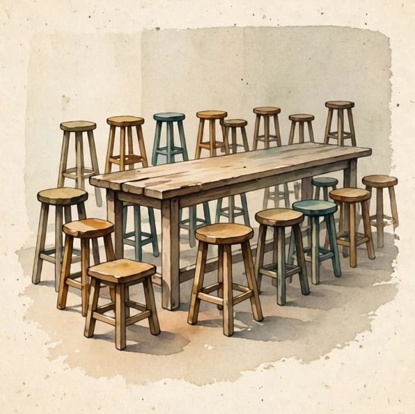
A long table with stools of many different heights arranged around it.
At the common tables of the commonwealth — council, hearing, and harvest meeting alike — the order of speaking rotates by a rule older than most of the laws: on questions of memory, the eldest speaks first; on questions of the future, the youngest speaks first. The reasoning is symmetrical and unsentimental. Elders carry the country's past in working order and should not have to fight the agenda to unload it. Children and the young will live longest inside whatever is decided and should not have to hear their whole future arranged by people who will not be present for it. Between the two poles, everyone else speaks in the ordinary scramble, which the chair is instructed to keep barely orderly.
The custom produces meetings of a peculiar shape, and the register describes them without varnish. A debate about the harbor wall begins with an old woman's account of the flood year, which the engineers needed and would never have requested. A debate about the school roof begins with a twelve-year-old explaining, to general discomfort, what the school is actually like. The middle of the meeting is where the expertise lives, and it arrives, in this design, properly framed: after the memory and after the stake. Decisions taken in this order are not wiser by magic. They are, the keeper notes, harder to take cynically, which in a small country may amount to much the same thing.
The friction is real, scheduled, and counted as the custom's tax. Meetings run long. Elders, speaking first on memory, occasionally annex the future by anecdote; the young, speaking first on plans, occasionally spend the elders' savings in a single bright sentence. The chair's art — and the commonwealth trains its chairs the way other countries train judges — is to hold the order without holding the outcome. What the custom buys, at the price of everyone's patience, is a table where the country's whole lifespan is seated at once. The stools in the plate are of many heights, and none of them, the register points out, is at the head.
33A Law Anyone May Read Aloud
Every law of the commonwealth must survive a test that no ministry drafts for itself: it must be read aloud, in the square, by a citizen who is not a lawyer, and it must still sound like a law when it gets there. The test is administered before enactment, at a plain stone lectern kept in the capital's square for the purpose, and the audience is whoever the weather provides. Laws that require a trained voice, a glossary, or a forgiving acoustic fail on the spot. The desk has a saying for the failures, entered in the register after the third: if it cannot be read to fishermen, it cannot be enforced on them.
The reading catches what drafting cannot. Hidden clauses betray themselves in the open air, because a reader's voice stumbles where a drafter's eye glides. Sentences that smuggle a second law inside a subordinate clause arrive at the lectern sounding like a man trying to talk with his mouth full. And when the crowd laughs in the wrong place — which it does, reliably, at vanity, at cruelty dressed as tidiness, and at any sentence containing the word notwithstanding — the law goes back to the desk without a vote being taken. The laughter is not a veto. It is a signal, and the charter, wisely, treats it as information no committee could buy.
The article's largest cost is paid by the schools hall, two rooms of the house away: a country that tests its laws by public reading must maintain a citizenry that can read. Literacy in the commonwealth is therefore not a cultural ornament but a constitutional utility, budgeted like the wells and argued about like the roads. The lectern stands empty most days, its single page weathered to softness between ceremonies. Children climb on it, which the charter permits and the keeper, privately, approves. A law that a child has climbed on is at no risk of being mistaken for a sacred object, and the register considers that a feature of the design rather than a failure of its dignity.
34Mercy Is a Procedure, Not a Mood
An hourglass and an open ledger with abstract marks on a clerk's desk.
Mercy in the commonwealth is a procedure, not a mood, and the charter is blunt about why. Mercy that depends on the temper of a judge, the weather of a reign, or the eloquence of a plea will flow, in practice, to the charming, the connected, and the well-spoken — which is to say, it will flow uphill, toward the people who need it least. So the design schedules it. A petition for mercy follows a form, waits a fixed season, and collects a second signature from a citizen chosen by lot, and the slowness is not a defect in the arrangement. The slowness is the arrangement: mercy that must be applied for is mercy that can be applied for by anyone.
The hourglass on the clerk's desk in this room's plate is the procedure's emblem and its honest advertisement. Time passes in the process — time in which a sentence stands unsoftened — and the register does not hide the cases where mercy, correctly procedurized, arrived after the harm it was meant to prevent. One such case is written out in this room in full, names anonymized in the fiction and failure unsoftened, because a hall that praises its procedures owes its visitors the procedures' casualties too. Beside it stands the other ledger: the unlikable defendant, friendless and graceless, whose petition moved through the same forms at the same speed as a mayor's would, and arrived. The design rests its defense on that second entry.
There is a cost in dignity as well as in time, and the room records it. To some petitioners, a form feels colder than a refusal; grace, they argue, should be an event, not an appointment. The charter's answer is unsentimental: events favor the theatrical, and the commonwealth prefers its mercy boring and general to thrilling and arbitrary. The second signature by lot is the keeper's favorite device in the whole hall — a random citizen, confronted once in a decade with the actual weight of the state's power to soften, and obliged to sign or refuse in his own hand. Mercy, in this country, is something the people do on schedule, not something that descends on them when the palace is feeling kind.
35What Happens When a Law Fails
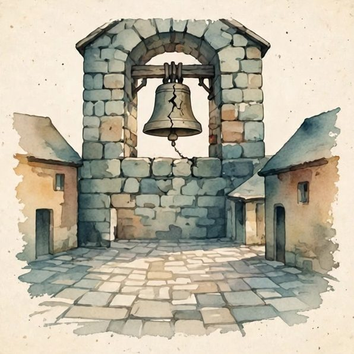
A cracked bell hanging in a small tower above a square.
Laws fail in the commonwealth, as they fail everywhere, and the charter's distinction is that it says in advance what happens next. A law is entered as failed when its own stated measure fails — every law in this country must declare, at enactment, the condition by which it would know it had not worked — or when a province's season of reply returns it three times unamended. The failure is then announced publicly, at a set hour, by the ringing of the cracked bell in the small tower above the square, whose tone the whole capital knows and whose crack the founders, in the fiction, declined to repair. A failed law should not sound like a triumph. It should sound like itself.
The failure is entered in the ledger with its costs itemized: what the law spent, whom it burdened while it stood, and what its drafters had promised in the reading-aloud. The drafters sign the entry. This ceremony of accounting is the charter's substitute for disgrace, and the register defends it at length: a country that punishes failed lawmaking gets, within a generation, lawmaking that cannot fail on paper — measures written so vaguely that no outcome can convict them. The commonwealth prefers laws brittle enough to break audibly. The bell has rung, in the fiction's chronology, eleven times, and two of those eleven laws were the keeper's own favorites, a statistic he reports with the air of a man producing his credentials.
Repeal follows the bell as a matter of procedure rather than shame, and the register notes the social consequence that surprised even the designer: the country's legislators are trusted more, not less, for the ringing. A citizenry that has watched its charter survive eleven public failures stops expecting the text to be infallible and starts expecting it to be honest, which is a more durable kind of faith. The tower's bell remains cracked. Schoolchildren are told why, in the plainest version the schools can manage: because the country would rather hear its failures truly than hear anything falsely, including its successes.
36Customs Change Slower Than Rivers
The hall of laws and customs closes with the slowest fact in the commonwealth: customs change slower than rivers. A river, given centuries, will move its bank across a meadow and leave an oxbow lake to testify; a custom, given the same centuries, will have adjusted its hat. The designer learned this in the only way it can be learned, by attempting the opposite. In an ambitious early draft he reformed, by charter amendment, the order of visiting at harvest — a small custom, he reasoned, a paragraph's work. The country received the amendment with perfect politeness and ignored it, in the fiction, for eleven consecutive harvests, at the end of which the amendment was withdrawn and the register wrote this room.
The lesson is structural, not merely quaint. Custom is the country's real constitution, of which the charter is only the annotated margin; and a designer who tries to hurry custom discovers that he has been granted power over the margin only. This is entered in the register as a mercy disguised as a frustration. A country whose customs could be revised at desk speed would be a country with no ballast — every generation's enthusiasms written straight into the fabric of daily life, and daily life fraying at the speed of fashion. The slowness is the constitution working. It is also, the keeper adds, the reason the designer's own influence on his country is so much smaller than his page count suggests, a finding he recommends to all founders.
What a designer can do, the room concludes, is garden rather than legislate: plant nothing in custom's soil that he is not willing to tend for a decade of imagined years, and expect most of the plantings to fail quietly. One in a generation takes — a new courtesy at the wells, a softened formality at the low table — and the register celebrates it with the understatement it reserves for real events. The walk now leaves the laws for the work and the money, carrying the hall's sum in a single sentence: write few laws, read them aloud, ring the bell when they fail, and never, ever mistake the margin for the page.
37Work, Trade, and Money
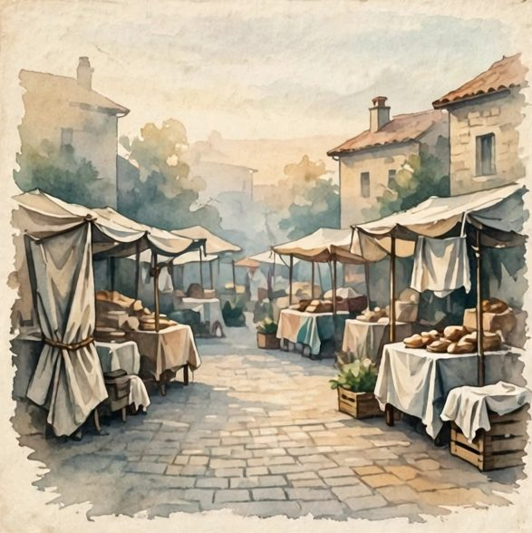
A market square at dawn before opening, the stalls still covered.
The fourth hall of the house opens before opening hour, in a market square with its stalls still covered, because work is best examined before it puts on its public face. The rooms that follow concern what the commonwealth's people actually do all day, what they are paid in, what they trade with strangers, and what the whole arrangement costs the people inside it. The designer approaches this hall with more caution than the laws, and the register approves the caution. Laws can be read at a lectern. An economy must be imagined hour by hour, sack by sack, and it punishes vagueness faster than any other part of the design: an unexamined price becomes a famine in three retellings.
The hall's questions are set down at its door, in the keeper's hand. Who does the work nobody wants, and what are they given for it besides wages. What is money for in this country — a measure, a memory, a weapon kept small. What does trade with strangers cost the traded-with, and not only the traders. And underneath all of them, the designer's standing question, the one the founding rooms taught him to ask of every institution: what does this arrangement teach the people inside it to value, whether it means to or not. Economies are schools that never close, and their curriculum is prices.
Prosperity, in the rooms ahead, will be measured in evenings — in what a working day leaves standing of a person — but this hall begins with the coarser measures and respects them: bread that arrives, roofs that hold, hours that end. A design that cannot feed its imagined people has no business decorating their festivals, and the keeper has accordingly kept this hall's prose closer to the ground than any other. The covered stalls in the plate are waiting for the first hour of the trading day. The register asks the visitor to remember, throughout the hall, that everything under those covers was made, carried, or grown by somebody whose name the design is obliged to be able to imagine.
38Work Nobody Is Ashamed Of
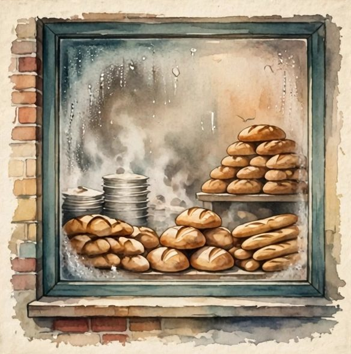
A baker's window with loaves stacked, steam fogging the glass.
The bakers rise first in the commonwealth, and the charter's labor articles begin with them on purpose: with the proposition that necessary work carries no shame, and that a country which arranges its honors otherwise will get the work done badly by people it has taught to despise themselves for doing it. The register is specific about the mechanism, because the design is interested in mechanisms rather than sentiments. Shame is a tax collected in quality. A ditch-digger who is mocked at the square digs the ditch he is mocked for; a baker who is honored, even slightly, even ritually, bakes as if the town's morning depended on it, which it does.
So the design distributes honor by rota rather than by rank in the work it cannot do without. The road crews, the well-keepers, the night watch, and the emptiers of the necessary pits are named, in rotation, in the same public formula the country uses for its admirals of the old songs. The register records that the rota was initially received as a joke — honors are a currency, and the country's wits predicted inflation — and that it took a generation of consistent keeping to make the coin ring true. Honor, like the water in the promises room, is a utility: it works when it is boring, universal, and actually delivered.
The honest limit is entered before the room closes, because this hall counts costs. Prestige does not obey rotas; it pools where it pools, around wealth, beauty, novelty, and the ports' interesting accents, and the commonwealth's citizens are not immune to its weather merely because the charter disapproves of the climate. The rota does not abolish shame. It argues with it, on schedule, in public, with the country's whole ceremonial weight on the argument's side. The keeper counts that a fair description of most of the design's successes: not solutions but standing arguments, maintained. The baker's window steams in the plate above, and the first loaves are spoken for by name.
39The Market Square at Opening Hour
Opening hour at the capital's market is the commonwealth's daily plebiscite, and the register describes it the way it describes elections, which in this country are quieter. The covers come off stall by stall, prices are chalked where everyone can watch them being chalked, and the first hour of trading is reserved, by a custom too old to have a drafter, for the neighborhood: households buying for the day, ahead of the port merchants who buy for the month. A visitor who wants to know what the country thinks of itself should stand here at dawn. Everything the charter claims about fairness is either visible in this hour or is not true.
The market's rules are few enough to fit on the square's notice board, and they are enforced in the currency the square actually uses, which is standing. Weights are public, and any buyer may call for the standard measure. A stall that cheats loses the stall — not a fine, which the rich cheat can budget for, but the place itself, for a season of market days. The register notes the rule's known failure mode without flinching: it falls hardest on the desperate small cheat and lightest on the large operator, whose cheating is done in contracts the square cannot see. The design has carried that flaw for years, entered and unrepaired, because every repair drafted so far punished the visible and excused the fluent.
By the second hour the square is also the country's news exchange, and the keeper rates it the most reliable institution in this hall. Prices and rumors travel the stalls at the same speed and are subjected to the same discipline: a rumor, like a price, must survive being repeated by people with money on the table. What the ministries announce in the afternoon, the square has usually priced by breakfast, and the register, which has compared the two records across the years of the design, trusts the square's version first and the proclamation's second. The chalk is still wet in the plate above this room. The day, and the economy, are beginning on evidence.
40Money Kept Small and Legible
A row of large clear glass jars holding coins, on a counting-house shelf.
Money in the commonwealth is kept small and legible, on the charter's theory that a currency ordinary people cannot understand is a tax levied on the poor for the benefit of the fluent. The denominations are few, the coinage is dull and hard to counterfeit prettily, and accounts at the counting houses are kept, by rule, in a hand and a format that their owners can audit at a kitchen table. The glass jars in this room's plate stand on the counting-house shelf as the system's emblem and its literal practice: what the house holds for a depositor can be seen, counted, and pointed at. Opacity, in this country's money, is treated as a symptom rather than a sophistication.
Legibility is a defense, and the register names what it defends against. A complicated currency manufactures a class of interpreters — clerks of the mysteries, brokers of the fine print — and that class, in every country the designer has studied, eventually bills the public for the confusion it maintains. The commonwealth prefers its financial scandals legible too: when a counting house fails here, and two have, in the fiction, the failure can be explained at the low table in one sitting, the depositors know what they have lost and to whom it went, and the anger, being accurately aimed, burns out in a season instead of poisoning a generation. Small money, clearly kept, fails small and clearly.
The cost is entered with the usual plainness. Sophisticated finance mostly happens elsewhere: the neighbors' banks regard the commonwealth's counting houses as a row of jars, and say so, and lend elsewhere on the strength of it. Ventures that need deep pools of patient capital must be organized slowly, by subscription, among people who can see the jar their coin is in. The country is poorer in certain futures because of this, and the register declines to pretend otherwise. It also declines to trade the arrangement away. A citizen who can read his own account can read his own country a little better, and the charter, asked to choose between the two literacies and a cheaper harbor wall, chose the literacies.
41A Debt Is a Story Two People Tell
A length of rope tied in a single careful knot, lying on a wooden table.
In the commonwealth a debt is not treated as a stain or as a weapon. It is treated as a story that two people are telling together, and like any story it has a beginning both sides remember, a middle that can be retold, and an ending that has not yet been agreed. The lender tells it one way, the borrower another, and the truth of the matter is usually that both versions are accurate about different months. The Charter Desk keeps no debtors' prison. It keeps a ledger, a table, and time.
Because the story is shared, it cannot be ended by one teller alone. A creditor who claims the whole sum at once must sit down and hear the borrower's telling in full, and a borrower who wishes the story forgotten must explain, in words, what the money did while it was theirs. Most debts in the commonwealth end in this room, in a revised middle and a slower ending. The arrangement costs the lender speed and the borrower pride, and the house counts both prices honestly, because a story forced to end early does not end. It only stops being told where anyone can hear it.
The failure mode is written in the same ledger. Some stories are told in bad faith from the first page, and some borrowers make a trade of other people's patience. The commonwealth answers with small sums, short terms, and witnesses chosen from the street rather than from the family. Lending stays modest because trust stays local. A debt between strangers is kept tiny until it has earned the right to grow, and many never do. The keeper notes that this makes the commonwealth poor in credit and rich in something harder to lend: the assumption that the other teller is, on the whole, telling it straight.
42The Guilds and Their Slow Pride
The guilds are old, and they know it, and they take a slow pride in being old that the younger trades find half admirable and half maddening. A baker's guild does not merely set the weight of a loaf. It keeps the memory of every bad harvest the town has survived, every oven design that failed, every apprentice who became a master worth naming. To join a guild is to inherit a shelf of other people's mistakes, catalogued and oiled. The pride is real, and it is earned the slow way, which is the only way pride in this house is allowed to be earned.
Apprenticeships run long, and the length is the point and the problem. A young mason spends years carrying stone before cutting it, and learns patience in the arms before the hands. The guilds argue that haste ruins walls and people both. Their critics, who are numerous and not always wrong, answer that a seven-year road keeps out the poor, the late-born, and anyone whose family cannot feed an unpaid learner. The commonwealth has not settled this argument. It has only agreed to argue it in the open, at the guildhall door, where the apprentices themselves may stand and listen.
The failure mode of the guilds is comfort. A guild that has kept a standard for a century may begin keeping it mainly to keep others out, and the Charter Desk watches for the season when a master's examination becomes a toll gate rather than a test. When that season comes, the remedy is unglamorous: new masters are chartered by the town, examinations are read aloud, and the guild must defend each requirement as a need of the work rather than a need of the guild. Some guilds survive this daylight. A few do not, and their halls become libraries, which the house counts as an honorable second life.
43Trade With Strangers, Priced Honestly
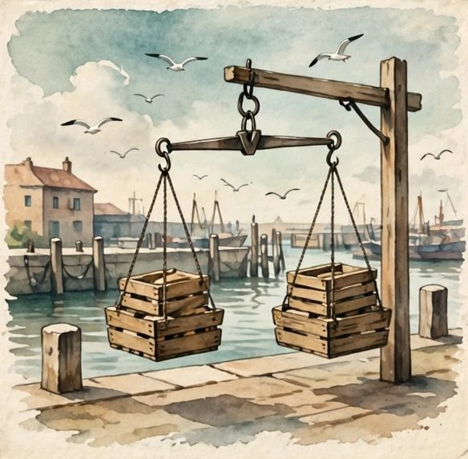
A harbor scale weighing crates, gulls above the quay.
Strangers arrive at the ports with goods the commonwealth cannot grow, make, or dig, and the house rule for trading with them is written on the harbor scale itself: the price is the price, spoken once, the same for the familiar face and the foreign one. There is no second tariff kept under the counter for visitors. A merchant caught quoting two prices for one crate loses the harbor stall for a season, which in a port town is a punishment felt in the stomach. Honesty here is not a virtue performed for guests. It is the port's working machinery.
Honest pricing costs something, and the ledger admits it. The commonwealth's merchants cannot squeeze the uninformed traveler, cannot invent scarcity in a full warehouse, cannot charge the desperate double because the road behind them is closed. Foreign traders, who can do all of these things in other harbors, sometimes find the rules naive and say so over dinner. Then they return the following year, and the year after, because a harbor where the scale does not lie is a harbor where a cargo can be valued before it is unloaded, and that certainty is worth more than any single squeeze.
The failure mode is the opposite temptation: honesty curdling into suspicion, the port so determined to be fair that every stranger's goods are weighed three times and every contract read aloud by two clerks. Trade slows to a ceremony. The keeper's notes record one such season, when the harbor weighed honesty heavier than cargo and the ships simply went elsewhere for a year. The commonwealth learned to price its fairness too. One weighing, done in public, by a scale anyone may test with their own stone. Trust, in this house, is a tool that must stay light enough to lift.
44What the Commonwealth Refuses to Sell
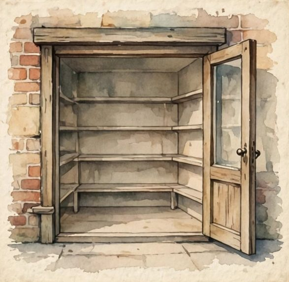
An empty shopfront with bare shelves and its door standing open.
There is a short list of things that cannot be bought in the commonwealth at any price, and it is nailed beside the market cross where anyone may read it. Votes are not for sale. Verdicts are not for sale. A place in the queue for the well, a child's schooling, a name in the town register, the night watch's attention — none of these carry a price tag, and offering money for them is treated not as wealth but as a misunderstanding of what town one is standing in. The list is short because a long list would invite bargaining at its edges.
Each refusal has its cost, and the house does not pretend otherwise. A town that will not sell its verdicts must pay its judges enough to refuse bribes comfortably, and that tax is visible. A town that will not sell schooling must build schools out of ordinary revenue, in lean years as in fat ones. The empty shopfront in the square is kept deliberately: its shelves are bare, its door stands open, and children are told what it means. It is the one shop that sells the things money cannot do here, and its stock, the keepers joke in a level voice, never runs out.
The failure mode is pride. A commonwealth pleased with its refusals may start refusing for the pleasure of it, banning trades that merely offend the tidy-minded, until honest work is driven into cellars and priced in whispers. The Charter Desk holds the list to its short length for exactly this reason, and any proposal to lengthen it must name who is harmed, not merely who is displeased. What is refused is refused because selling it would dissolve the town. Everything else, from salt to silk, may be haggled over in the square as loudly as anyone likes.
45The Tax Is One Page Long
The whole tax law of the commonwealth fits on one page, and the page is posted in every market square under glass, replaced each spring whether it has changed or not. It names a small number of things that are taxed, a small number of rates, and the dates on which they fall due, in sentences a farmer can read aloud to his neighbor without stumbling. There are no schedules hidden in other documents, no exemptions purchasable from clerks, no second page. When the council wishes to raise money, it must amend the one page in public, and watch the amendment being read by candlelight in a hundred kitchens.
Simplicity of this kind is not cheap, whatever its admirers claim. A one-page tax cannot fine-tune anything. It cannot reward the deserving industry or punish the wasteful one, cannot coax behavior this way or that with clever deductions. The commonwealth gives up all that steering deliberately, and accepts the clumsiness as the price of legibility. What it buys with the sacrifice is a citizenry that actually knows what it pays, and a council that cannot raise revenue quietly. Every increase must be argued for in the square, in numbers everyone can check against the page in their own hand.
The failure mode arrives with growth. A harbor, a mine, a new kind of company that fits no sentence on the page — each brings lawyers of circumstance arguing that this case, just this once, is special. The house allows the page to gain a line only when an old line is struck out, so the tax has changed its contents over the years without changing its size. Some interests have been taxed and untaxed three times in a generation, and they complain, reasonably, that certainty is also a public good. The keeper enters the complaint without answering it. The page stays one page long. The argument stays one argument long, which may be the deeper point.
The Charter Desk
One desk receives all correspondence for this house — questions, corrections, and word of any imagined country a visitor has been designing: the law they are proudest of, the custom they cannot justify, the province that refuses to behave. It is read in the order it arrives, and entered in the register of the commonwealth.
46Idleness Has a Seat by the Square
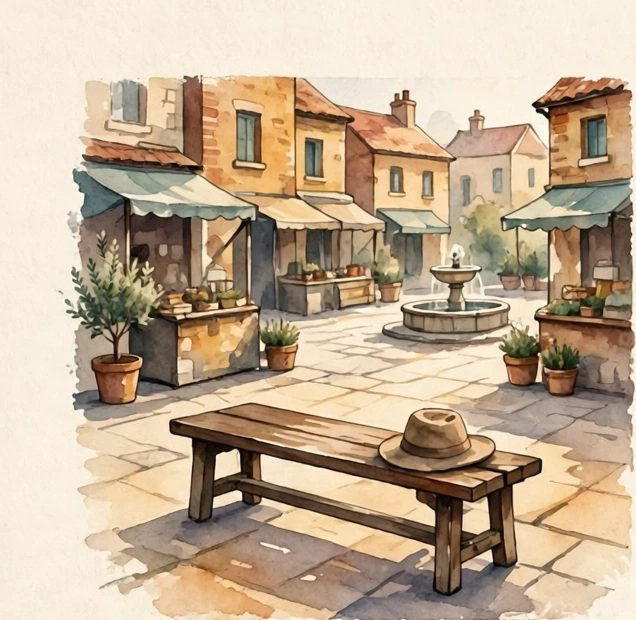
A bench in the sun beside a market square, a hat resting on it.
By long custom there is a bench at the sunny side of every market square that belongs, by right no one can remember granting, to those who are doing nothing. The fishermen too old for the boats sit there. The mason between jobs sits there. The young, the convalescent, the merely thoughtful sit there, and no official may move them along for the crime of sitting. The commonwealth holds that a town where idleness must hide is a town that has confused worth with wages, and it refuses to make that confusion into law. The bench is the refusal, made of oak.
This tolerance is not costless, and the register says so. The bench sometimes holds a person who could work and will not, fed by a household that resents feeding him, and the square knows his name. The commonwealth accepts this leakage the way a roof accepts a drip it would cost more to chase. To police the bench would require judges of other people's afternoons, and the house prices that machinery honestly: more harm in the policing than in the idling. The bench stays. The square keeps its own opinion, which is a slower and more accurate court than any the Charter Desk could convene.
There is also a defense of the bench that no one expected when it was first set down. News gathers there. The idle hear everything first, because everyone crossing the square stops to talk to someone with time to listen. More than one lost child, runaway horse, and incoming storm has been reported first from the bench, and the night watch makes a point of asking it, each evening, what the day contained. Idleness, the keeper writes, is the town's unpaid listening post. It has a seat by the square because, on the evidence, the square cannot do without it.
47Rich, Poor, and the Space Between
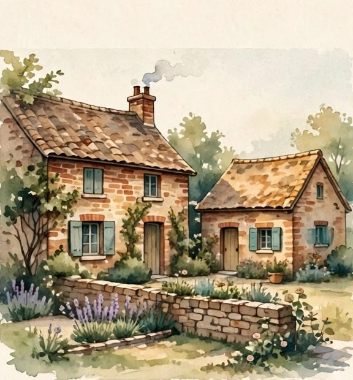
Two cottages side by side, one large and one small, sharing one garden wall.
The commonwealth has rich households and poor ones, and it does not pretend the distance between them is small. What it maintains, with some effort, is that the distance is measured in comfort rather than in kind. The rich man's roof is slate and the poor woman's is thatch, but both stand under the same water law, send their children to the same school bench, and are buried from the same church door. The space between them is real. The house works to keep it a space, crossed daily by ordinary traffic, rather than a wall with guards on it who check the manner of your walking.
The crossing places are unglamorous and deliberately numerous. One garden wall, shared. One well queue, unsegregated. One market where the great household's cook haggles beside the laborer buying the same cabbage, and is as likely to lose the argument. These arrangements are not natural; towns drift toward separation the way water drifts downhill, and every generation must re-dig the channels. The cost is borne mostly by the comfortable, in small daily abrasions of convenience, and the register notes that the comfortable complain about this tax more than about the money tax, because money can be paid at a distance and a queue cannot.
The failure mode is sentimentality: the rich playing at poverty for a festival day, the poor expected to be grateful for the performance. The house guards against it by keeping its crossings practical rather than ceremonial. Nobody is required to feel anything at the well. They are required only to wait their turn, which is a smaller demand and a stronger one. The keeper, entering the year's accounts, measures the space between rich and poor not by the coin gap, which the commonwealth tolerates, but by whether the two cottages still share the wall without a locked gate in it. So far, in most towns, they do.
48Prosperity Measured in Evenings
When the Charter Desk takes the measure of a town, it does not begin with the granary or the harbor ledger, though both are counted in their turn. It begins at dusk, walking the lanes, and counts evenings. How many households finish the day with light to spare and time to sit in it. How many suppers are eaten unhurried, at a table, by people who are not calculating the cost of the candle. A town may show strong trade figures and thin evenings, and when it does, the register trusts the evenings. Coin is a means; the evening is one of the things it is a means to.
This measure has its own honesty problems, and the house lists them. Evenings can be idle because there is no work, and lamplight can burn in a house that is quietly starving by daylight. The keepers therefore count evenings alongside the ordinary ledgers, never instead of them, and they ask a second question on the walk: whether the people sitting in the light chose the sitting. Prosperity, in this reckoning, is not leisure alone and not income alone. It is the overlap — work that ends, earnings that hold, and a remainder of the day that belongs to the person who lived it.
The policy that follows is unfashionable and plain. The commonwealth distrusts any scheme that enriches the ledger by thinning the evening: the extra shift that eats the supper hour, the market reform that saves pennies and costs every family its walk to the square. Such schemes are not forbidden. They are simply priced in full, and the evening column must be filled in before the coin column is allowed to persuade anyone. It is a slow way to govern, and the towns that govern this way grow slowly, and their keepers, walking the lanes at dusk with the tally in hand, seem in no hurry to apologize for the slowness.
49Schools and Knowledge
A village schoolhouse with a bell and a garden, in morning light.
This hall of the house concerns what the commonwealth knows, how it learns, and who is allowed to. The founding assumption is stated plainly in the charter and argued with ever since: a town's knowledge is part of its wealth, held in common like its well and its roads, and a child locked out of learning is a citizen taxed for someone else's convenience. Schools here are not ornamental. They are load-bearing. The house spends on them the way it spends on bridges, grudgingly in council and gratefully in retrospect, and it keeps their roofs mended before it gilds anything else in the town.
The system is unspectacular by design. Every town keeps a school; every school keeps a garden, because some lessons are about waiting; every teacher answers to the town and is questioned by it in public once a year. There is no ministry of knowledge in the capital issuing the one true curriculum. There is a short list of things every child is owed, a longer list each town adds from its own life, and a standing argument between the two lists that the house considers healthy. Knowledge that cannot survive an argument in a schoolyard meeting is probably not knowledge yet.
The costs are entered without flinching. Universal schooling is the second-largest charge on most towns, after the roads, and it falls due in the same hungry springs as everything else. Some valleys have closed a school for a year and reopened it to find a cohort of children who never quite caught up, and the register keeps those years underlined. The failure the house fears most is quieter: schools that teach only what is safe, producing citizens fluent in everything except doubt. Against that failure this hall sets its later rooms — the unanswered letters, the checked-again knowledge, the honored question. The bell in the picture is small. It is rung by hand, and it can be heard from the fields.
50The First School Is a Kitchen Table
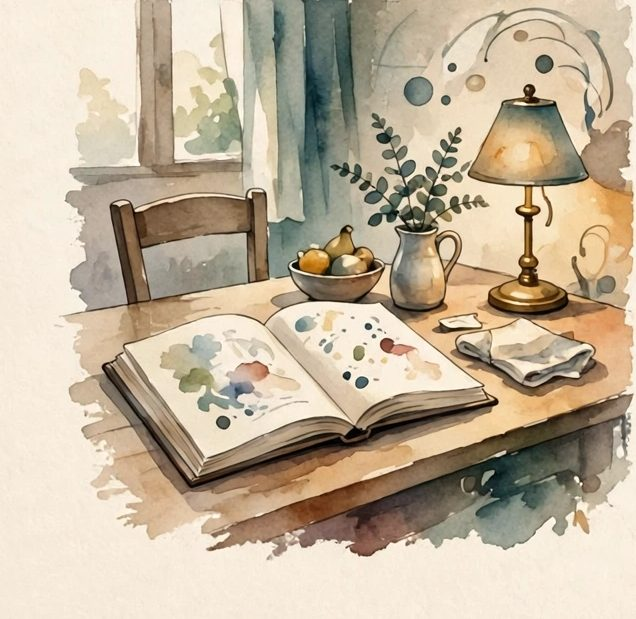
A kitchen table with an open book, a lamp, and a small empty chair.
Long before a child meets the schoolhouse, she has served her first apprenticeship at the kitchen table, and the commonwealth is honest enough to say that this school matters more than its own. At the table a child learns the arithmetic of division — one loaf, this many mouths — and the grammar of argument, which is how a household disagrees without ending. She learns which questions earn an answer and which earn a errand, how money sounds when it is short, how the dead are spoken of, how strangers are assessed. No curriculum committee designed any of it. It is simply what a life sounds like from chair height.
The public schools are built in full knowledge of this first school, and they tread carefully. A teacher who contradicts the kitchen table too grandly loses the child by Michaelmas, because a seven-year-old's loyalty is to the house that feeds her. So the schools teach what tables cannot: the wider map, the longer past, the letters of people no one in the lane has met. They add a second story to a house the family built. Where the two stories disagree, the child is not required to demolish either one on the spot. She is allowed to grow tall enough to see over both, which takes years, and the house is patient.
The failure mode sits in plain sight and is named without cruelty. Some kitchen tables teach fear, or contempt, or the rule that questions are a form of rudeness, and a child from such a table arrives at school already fluent in the wrong first language. The commonwealth's answer is not to raid the home, which it has no right and no machinery to do. Its answer is time: a school day long enough, a teacher steady enough, a library close enough, that the second story gets built even where the first was built crooked. It does not always work. The register records the misses by name, in the year's hand, without looking away.
51Every Town Keeps a Library
The charter requires every town above a certain size to keep a library, and the towns below that size keep one anyway, out of rivalry. It is usually one room, sometimes two, attached to the school or standing alone near the square, and it is open in the evenings because that is when its readers are free. The collection is small by the standards of the capital and chosen with fierce local prejudice: the valley's own histories, the manuals for the valley's trades, the atlases nobody can afford, and a shelf of faraway novels that the librarian defends against all comers as essential equipment for living in a valley.
The librarian is a public officer of a peculiar kind: part clerk, part customs official of the imagination, deciding what crosses the border into the town's mind. The house knows this power is considerable and arranges it accordingly. Acquisitions are listed on the door each quarter; any citizen may challenge a purchase or a refusal, and the challenge is answered in writing. Some librarians buy too narrowly, stocking only what confirms the town as it is. The remedy is exchange: towns swap boxes of books each winter, so that foreign shelves arrive like weather, uninvited and impossible to ignore entirely.
The cost of a library is modest and the cost of its absence is not, but the register still enters the failure modes. Libraries burn, flood, and go musty; a neglected one becomes a warehouse of other decades' certainties, lending out yesterday's answers with a straight face. Worst is the library that survives by becoming harmless, weeding every difficult book in the name of shelf space until nothing remains that could trouble a reader. The house prefers a small shelf with teeth. A town's library, the keeper writes, should be able to argue with the town — politely, in print, after closing hours.
52What Children Are Taught First
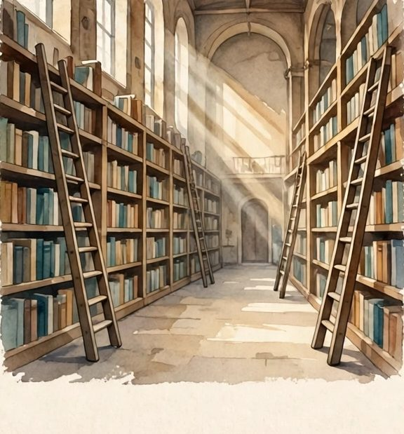
A long library hall with ladders and sunbeams between tall shelves.
The first things taught in the commonwealth's schools would disappoint a visitor looking for grandeur. Children are taught to read, to reckon, to swim where there is water, to mend a seam and a fence, to tell the weather from the sky over their own valley, and to say exactly what happened, in order, without decoration. That last subject is treated as the foundation under all the others and given the best hour of the morning. A citizen who can give a plain account — of an accident, a debt, a disagreement — is a citizen the whole machinery of the charter can work with. A citizen who cannot is at everyone's mercy.
Only after the plain account comes the adorned one. Stories, songs, the histories with their heroes left in — these are taught second, and taught as what they are: the house's memory of itself, precious and partial. Children learn early that the second telling is not a lie but a lens, and that a person needs both tellings the way a walker needs both eyes. Critics from the hill towns call this arrangement cold. The lowland schools answer that they have seen what happens to towns whose children learn the adorned account first and the plain one never: the festivals are splendid, and no one can settle a boundary dispute.
There are honest costs. A childhood spent on foundations is less dazzling than one spent on display, and other countries' schools produce young orators while the commonwealth is still teaching its ten-year-olds to describe a flooded road accurately. The register accepts the trade and notes its limit: plainness, drilled too hard, can make a child afraid of the large and the lovely. So the year is balanced with singing, with the observatory's open nights, with stories read aloud for no reason but pleasure. First the account, then the song. The order matters to the house. The song matters too, and woe to the inspector who forgets either half.
53The University That Answers Letters
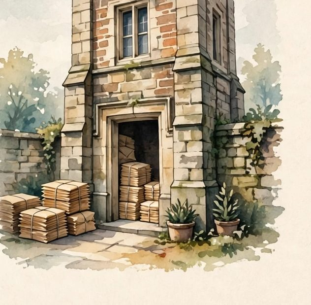
A stone university tower, bundles of sealed envelopes stacked in its doorway.
The commonwealth keeps one university, in the capital, and its charter contains a clause the founders argued over longer than any other: the university must answer letters. Any citizen may write to it — a farmer with a blight on his barley, a mason disputing a load, a schoolgirl who has found a stone that does not match the book — and the university must reply, in plain language, within the season. The replies are written by scholars and advanced students in rotation, signed with a real name, and copies are kept in the tower, where the bundles in the doorway are only the latest week's evidence that the clause is alive.
The obligation is expensive in the currency scholars value most, which is uninterrupted time. Research slows. Monographs wait while a professor explains drainage to a village that will actually dig the ditch. The university has petitioned, twice, to narrow the clause, and the towns have refused, twice, with a politeness that fooled nobody. Their reasoning is blunt: a seat of learning that cannot be questioned from a kitchen table will drift, within a generation, into a guild of the certified, answering only itself. The letters are the tether. Some years the tether chafes. It holds anyway, and the scholars who serve it longest tend, in old age, to defend it fiercest.
Not every letter can be answered well, and the archive keeps the failures beside the triumphs. There are questions the university does not know, and its charter requires it to say so in the reply, in the first paragraph, without varnish — which it does, and which has done more for its reputation in the valleys than any discovery. There are also letters that are really accusations, or griefs wearing the clothes of a question, and the rota includes, by custom, a member who answers those slowly and personally. The tower, the keeper writes, is the tallest building in the commonwealth. The letters are how it stays the right height.
54Ignorance Is Not a Character Flaw
In the commonwealth it is permitted, socially and officially, not to know. A farmer cross-examined about the stars may say he has never thought about them, and lose nothing in the telling. A councilor may stop a meeting to have a term explained, and the explanation is given without the small smile that punishes honesty in so many assemblies. The house holds that ignorance is a condition, like a flooded road: inconvenient, sometimes dangerous, nobody's disgrace, and usually temporary. What it treats as a flaw is the refusal to ford — the performance of knowledge by a person who has not done the walking.
This permission is load-bearing, and removing it collapses more than politeness. A town where not-knowing is shameful is a town where questions stop, and a town where questions stop will be governed by whoever is least ashamed of pretending. The charter's schools, its answering university, its libraries open at night — the whole apparatus of this hall assumes a citizenry willing to say the four words the apparatus exists for: I do not know. The apparatus is therefore judged, in the keeper's reviews, not by how much knowledge it stores but by how safely those four words can be said inside it.
The failure mode is the counterfeit of this virtue: ignorance worn as a badge, a refusal to learn dressed up as humility, the neighbor who will not read the posted tax page because reading is for clerks. The commonwealth distinguishes, patiently and in public, between the person who has not yet learned a thing and the person who has decided that learning it would lower him. The first is offered the school bench and the evening class. The second is offered the same, once, and then the natural consequence of his decision, which the house does not soften. Mercy, here as elsewhere in this design, is a procedure. It is not a blanket.
55Books Travel Free of Charge
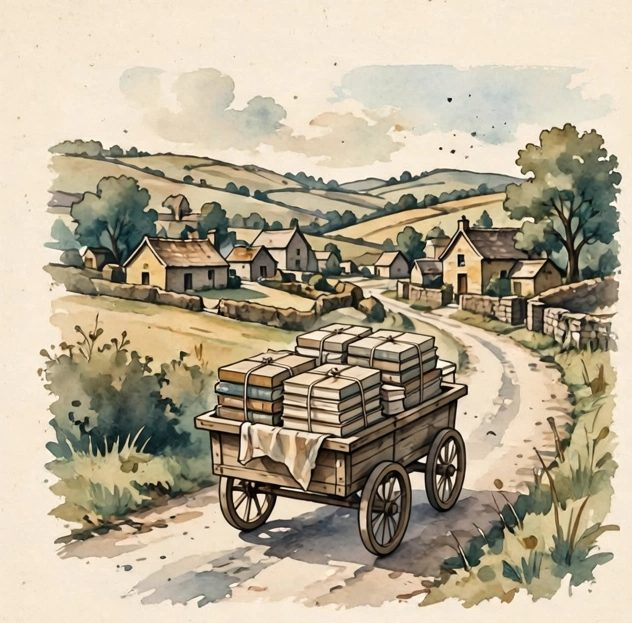
A book cart on a country road between villages.
No toll, tax, or carriage fee may be charged on a book anywhere in the commonwealth, and the exemption is older than the charter itself. Books ride free on the mail carts, free on the harbor boats, free in the peddler's pack, and a carter who tries to charge by weight for a crate of them will find the law shorter than his invoice. The reasoning given in the founding debates was practical rather than poetic: a book is the only cargo that weighs the same after everyone has taken some. The house saw no sense in taxing the one freight that multiplies by being shared.
The practical consequence is a country threaded with traveling print. The book cart in the picture walks a circuit of valley villages, lending and mending, its keeper part librarian and part journalist, carrying requests in one direction and the requested books, three weeks later, in the other. School texts pool in the towns and flow outward at term's start like a tide. Private books travel too, in coat pockets and bread baskets, and a well-traveled novel with six names inside its cover is considered, by the informal standards of the lanes, a better-kept book than a pristine one.
The exemption leaks, as exemptions do. Crates arrive at the toll gates labeled as books that contain, on inspection, a commentary's worth of print wrapped around bottles. Smugglers have hidden worse in holier packaging. The commonwealth polices this lightly, at some cost to revenue, having decided that a toll service trained to open every book crate will soon be opening every book. The keeper's margin note is characteristic: a small fraud tolerated at the border is cheaper than a large suspicion installed in the library. The books ride free. A certain number of bottles ride with them, and the house has made its peace with the ratio.
56The Observatory on the North Hill
A white observatory dome on a north hill under early stars.
Above the capital, on the north hill where the air is clearest, stands the observatory, and it is the one great building the commonwealth maintains that produces nothing it can eat, sell, or defend itself with. Its charter is a single sentence: to watch the sky properly, and to tell the town what it sees. The astronomers keep the calendar honest, correct the festival dates against the actual stars, and publish their findings on the square like weather. Once in a generation they catch an error in the old tables that everyone has been politely ignoring, and the correction is entered, and life proceeds, slightly truer.
The observatory is open to the public on clear nights, and this is not a courtesy but a term of its funding. Farmers come to look at the harvest moon through the great lens and argue about rain. Children come and are allowed, under supervision, to be unimpressed. The queue on the hill is one of the few places in the commonwealth where the university's scholars wait behind shepherds, because the sky that night is the same for both and the shepherd, as a rule, saw it first. The keeper counts this small inversion among the design's successes and enters it without underlining.
Uselessness on this scale draws critics, and the register gives them their paragraph. The dome costs what a bridge costs. In a poor decade it is a scandal in white paint. The commonwealth's answer is the long one: a civilization that funds only what it can use will slowly lose the ability to notice anything it did not predict, and the sky is the cheapest teacher of the difference between the expected and the seen. Still, the funding is debated every year, in full, and the astronomers must come down the hill and argue for their stars like anyone else. The dome has never lost the vote. It has never been allowed to skip it, either.
57Old Knowledge, Checked Again
Every generation, the commonwealth sets aside a season for an unfashionable task: checking the old knowledge. The drainage tables, the seed lore, the tide reckonings, the cures, the road gradients surveyed by grandfathers — a portion of the inherited stock is taken down, tested against the world as it now stands, and either confirmed, corrected, or respectfully buried. The work is done by mixed crews of the old and the young, because the old know where the bodies of past errors are buried and the young have not yet learned to be sentimental about the map that contains them.
The findings are published whole, confirmations and funerals alike, and the funerals are the interesting pages. Some venerable rules turn out to have been descriptions of a climate that has moved on. Some remedies work for reasons entirely different from the ones carved above the dispensary door. Some, embarrassingly, work only because the patient was also given soup and rest, which the remedy took credit for across two centuries. The house does not treat these discoveries as victories over the ancestors. The ancestors, it notes, built the checking into the calendar, which suggests they expected to be caught out and preferred it that way.
The failure mode is reverence curdling into either of its opposites: the past kept as untouchable scripture, or the past discarded wholesale by a generation pleased with its own newness. Both are forms of laziness, and the checking season is designed against laziness. Its rule for the crews is exact: assume the old table is right until the test says otherwise, and assume the test is honest only if it could have come out either way. Knowledge, in this house, is not a possession to be guarded. It is a tenant to be visited, regularly, with instruments, and asked how the roof is holding.
58Teachers Are Paid in Public Honor
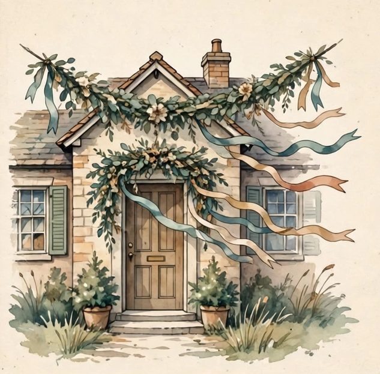
A garland hung above a schoolhouse door, ribbons moving in the wind.
The commonwealth pays its teachers a wage it can afford, which is to say a modest one, and makes up the difference in a currency it mints deliberately: public honor. The teacher walks early in the festival procession, ahead of the council. Her name is spoken at the opening of the school year in every household that has a child in her room, whether the household likes her or not. When she retires, the town strikes her likeness in the only portraiture this house allows itself — the working hands, chalk-dusted, resting at last — and hangs it in the school where she taught. The garland over the door is renewed by the children she has already sent onward.
Honor of this kind is not a substitute that costs nothing, whatever cynics say at the Charter Desk. It costs the town its deference, paid daily, in small denominations: the queue that parts, the dispute settled in her favor when the facts are even, the council that must explain itself to her once a year in public session. Towns that try to pay in honor while skimping on the wage discover the exchange rate collapses quickly. The register is blunt on the point: honor tops up a fair wage. It has never yet replaced one, and a commonwealth that asks it to will find its schoolrooms staffed by the vain and the desperate, in about equal numbers.
The failure mode arrives when honor becomes a test teachers must pass to be paid at all — the beloved instructor rich in garlands, the difficult one, whose subject is unpopular or whose temper is short, quietly starved of both currencies. The house guards the boundary by keeping the wage in the tax page and the honor in the custom, separate ledgers that cannot be traded against each other in a bad year. A teacher may be unhonored and is still paid. A teacher may be honored and is still questioned, at the yearly session, like anyone else. The ribbons move in the wind. The ledger stays shut against them, on purpose.
59A Question Outranks a Title
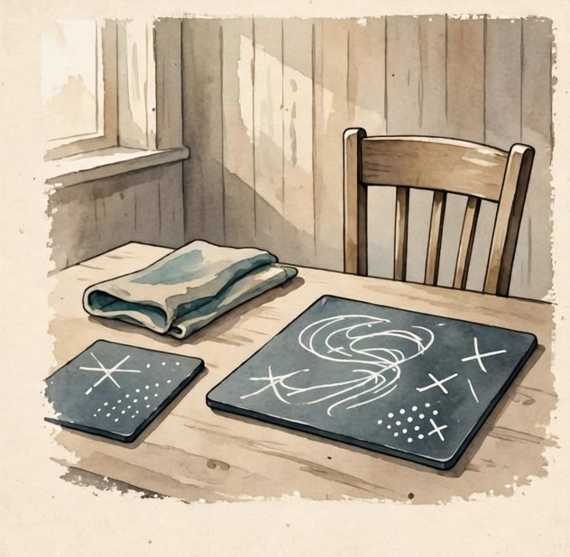
An empty chair at the head of a lecture table, a slate with abstract chalk marks beside it.
In the schools and assemblies of the commonwealth, precedence follows a rule that visitors find startling until they have sat through one difficult meeting: a question, plainly asked, outranks a title, however grand. When the rector and a first-year student both rise, and the student carries a real question while the rector carries an objection of dignity, the chair gives the floor to the question. Rank is not abolished — someone must keep order, sign the register, answer for the roof — but rank is treated as a tool for arranging work, not as evidence in an argument. The charter's phrase for it is kept plain: the office serves the inquiry, never the reverse.
The rule is easier to carve on the lecture-hall lintel than to keep at the third hour of a hard debate. Titles are patient. They wait for the room to tire, for the questioner to be young, or foreign, or wrong about something else last winter, and then they re-enter as tone: the small laugh, the appeal to experience, the suggestion that the question has already been settled by better heads. The house trains its chairs to recognize the re-entry and name it, which is uncomfortable and therefore regularly skipped in mild years. The register notes, in the driest hand it owns, that the health of a town can be measured by how often its chairs bother.
What the rule buys, when it is kept, is a citizenry that brings its real doubts into the room while there is still time to use them. The failure it courts is a different disorder: every meeting dissolving into questions, decisions endlessly deferred by the one objection no evidence could satisfy. The commonwealth answers with a closing custom as firm as the opening one. Questions are heard in full; then the house decides, by its ordinary rules, and the decision binds even the questioner — who keeps, in exchange, the right to have the question recorded beside the decision, dated, so that the future can tell who asked what, and when the answer changed.
60What the Commonwealth Does Not Know
At the end of the hall of knowledge, the house keeps its most instructive exhibit: a maintained list of what the commonwealth does not know. It is not short. It includes the true count of the deep fish, the cause of the valley fevers in wet years, whether the old songs' geography was ever real, what the weather intends beyond the third day, and a hundred smaller ignorances filed by town and trade. The list is read aloud once a year, at the university, by the youngest scholar on the rota, and amended in public. Items leave it, with ceremony, when they are learned. Items join it, with equal ceremony, when a certainty collapses.
The purpose of the list is not humility as decoration. It is operational. A government that keeps its ignorances written down makes different decisions from one that improvises confidence: it builds the granary larger, asks the observatory before the almanac, funds the checking season, and teaches its children that the map's blank edge is a fact about the mapmakers, not an insult to them. The Charter Desk keeps a copy of the list beside the tax page, and more than one grand scheme has died quietly in that office, killed by nothing more dramatic than a clerk turning a page and asking which items the scheme required to be false.
The failure mode is the list becoming a liturgy — recited, admired, and ignored, a ceremony of modesty that licenses the same old certainty the rest of the year. The house has seen one such decade and disliked it. Its safeguard is embarrassingly practical: the list is cited, by rule, in the preamble of every major decision, and the citing officer must name the items that touch the matter at hand. Ignorance, treated this way, stops being a confession and becomes a tool of government, like the ledger or the scale. The pencil rests where the drawing stopped. The drawing, most years, resumes a little further on — and the honest blank moves with it, smaller here, larger there, never finally gone.
The Charter Desk
One desk receives all correspondence for this house — questions, corrections, and word of any imagined country a visitor has been designing: the law they are proudest of, the custom they cannot justify, the province that refuses to behave. It is read in the order it arrives, and entered in the register of the commonwealth.
61The Life of the Streets
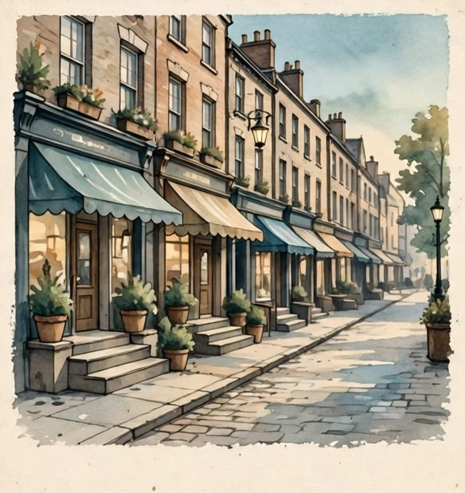
A street of stoops and shopfronts waking at dawn, awnings rising.
This hall leaves the charter and the council chamber and goes downstairs, because a civilization is not finally what it legislates but what its streets feel like at seven in the morning. The house insists on the descent. Every institution in the earlier halls — the one-page tax, the answering university, the refusal list — exists, in the end, to produce or protect some quality of ordinary street life, and the street is where the design is audited. If the bread is late, the gutter foul, and the greeting absent, no excellence in the archive can make the audit pass. The keeper walks this hall on foot, notebook in hand, at the hours when nobody is performing.
The street life of the commonwealth is not idyllic, and the register works to keep it that way on paper. There are beggars, and arguments at wells, and a famous feud between two baking families that has outlasted three mayors. There are districts the night watch walks in pairs and a bridge toll everyone resents. The house does not hide these, because a street hall without them would be a stage set, and the designer would learn nothing from touring it. What the streets offer instead of perfection is a texture: dense, noisy, negotiable, and — the word the keepers keep arriving at — inhabited, by people who consider the arrangement theirs.
The costs of street life are paid in the coin of privacy and quiet, and the house counts them as carefully as the tax. A town where every door opens on the lane is a town where everyone's business is partially public property, where grief is assisted and also witnessed, where a failing shop cannot fail unobserved. Some citizens, every generation, find the price too high and remove to the hill farms, and the commonwealth lets them go without calling it betrayal. The streets are the commonwealth's chosen instrument, not its prison. This hall describes them as they are used: heavily, gladly, and at a volume the next room will have to discuss.
62An Ordinary Tuesday in the Capital
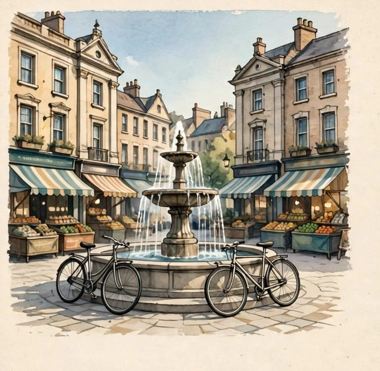
A capital street at midday, market awnings, bicycles leaning at a fountain.
On an ordinary Tuesday the capital does nothing worth reporting, and the house sends its keeper to record it anyway, because Tuesdays are the truth of a place and festivals are its advertisements. The markets open at the usual hour to the usual arguments. The courts hear a boundary case, a debt story, and a dispute about a goat. The university's letter-box fills by noon. At the fountain, the water-carriers hold their parliament, which decides nothing and knows everything, and a clerk from the Charter Desk buys his lunch from the same stall as the woman who cleans his office, and neither of them finds this remarkable.
What the Tuesday audit looks for is friction, and measures the civilization by its temperature. Queues form and dissolve without officials. A carter's spilled load blocks the lane for an hour and is cleared by the neighborhood before the watch arrives, amid considerable advice. Prices are called, doubted, and settled in the open. The keeper's notebook fills with small numbers: minutes waited, greetings exchanged, disputes that ended in laughter against disputes that ended in silence. A capital is healthy, by this hall's reckoning, not when nothing goes wrong on a Tuesday, but when the wrong things are absorbed by the street itself before they reach an office.
The failure mode of an ordinary day is the creeping alternative: everything referred upward. A town that sends its spilled loads and stray goats to committees teaches its citizens to wait, and waiting citizens become an audience, and an audience, in time, becomes a crowd that only gathers to be addressed. The commonwealth fights the creep with a rule so simple it is mostly a habit: the nearest hands settle it. The watch helps, the office records, but the first authority on any street is the street. The keeper closes the Tuesday entry with the sentence this hall exists to make possible. Nothing happened, and it took the whole civilization to arrange that.
63Bread, Weather, and Other News
The news of the commonwealth travels at walking pace and is carried, mostly, with the bread. The baker knows whose oven failed, whose son has come home from the ports, which roof the storm took, and delivers it all with the morning loaves in the tone of a clerk reading minutes. Weather comes first — not as small talk but as the day's working orders, the information on which ferries, harvests, journeys, and wash-days depend. A forecast in this house is a public document, argued over at the stall like a verse of scripture, and the observatory's posted predictions are marked, by general consent, against what the sky actually did.
There are gazettes in the capital, printed twice a week, and the house does not despise them. It merely observes what everyone knows: the paper is where news goes to be confirmed, and the stall is where it goes to be true. Between the two runs a lively corrective traffic. The gazette corrects the stall's exaggerations; the stall corrects the gazette's omissions, which are the larger category in any season when the council has been embarrassed. A citizen who reads only the paper is considered, in the lanes, to be a person who knows the announcements. A citizen who buys bread is informed.
The costs of a walking-pace news service are entered honestly. Rumor travels on the same legs as fact, and faster uphill. The commonwealth has suffered its panics — a false report of fever emptied one harvest fair entirely — and its remedy is characteristically unglamorous: the second day. By custom, no grave report is acted on until it has survived a night and been heard again from a second carrier. The rule slows everything, including the truth, and the house accepts the delay as the price of a country where news belongs to everyone and therefore, at first, to no one in particular. Bread first. Weather second. Certainty, by tomorrow, if it has earned it.
64The Houses Face the Street
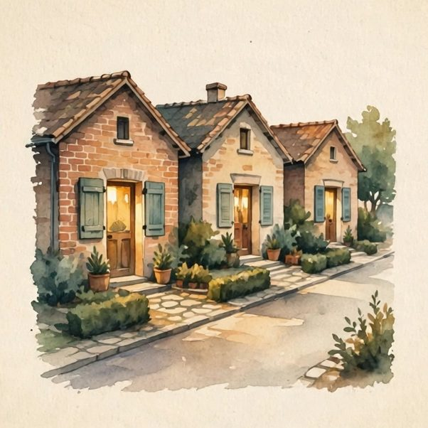
Houses turned toward the street with lit doorways and small front gardens.
By an old building custom, renewed in every town charter, houses in the commonwealth face the street. The kitchen door opens on the lane, the best window looks out rather than in, and the small front garden — a bench, a vine, a row of something green — is arranged for conversation as much as for show. The rule is sometimes described as an aesthetic, and it is not one. It is a theory of safety and society poured into brick: a street watched by a hundred ordinary windows needs fewer watchmen, and a lane where every threshold is a potential conversation is a lane no one crosses entirely alone.
The arrangement has a price, and the householders pay it knowingly. A house facing the street is a house on mild display; its quarrels carry, its visitors are noted, its decline is visible to people who have no right to an opinion and hold one anyway. Privacy, in the commonwealth's towns, lives in the back rooms and the inner court, and a citizen's right to it — protected firmly in the hall of laws — begins a few steps in from the door. Foreign visitors occasionally find the fronts intrusive. The towns answer that the alternative they have seen, the high-walled house turned inward like a fist, produces streets that belong to no one, and then to whoever shouts loudest.
Architecturally the rule fails in one predictable way: fashion. Every few decades a generation of builders falls in love with severity, sets the houses back behind walls and hedges, and must be argued back to the street by their grandparents' generation, who remember what unwatched lanes are like after dark. The charters make the argument easier by tying it to the water rate — a house that will not face the street pays more for the watch that must replace its windows. It is a small, unpoetic lever, and it has worked for two hundred years, which is the house's favorite kind of lever.
65Evening Is a Public Institution
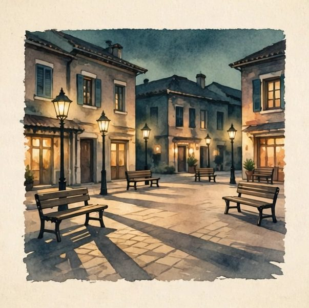
A square at evening, lanterns lit, long shadows, empty benches.
Evening in the commonwealth is not the residue of the day. It is an institution, with hours, customs, and premises, and it begins when the workshops close and the whole town, by a coordination no one schedules, comes out. The square fills in its layers: children first, released and orbiting; then the elders, taking the benches that the day's sun has warmed; then everyone else, walking the slow circuit that has no destination and is therefore never finished late. Supper is fitted around the evening rather than the other way. A visitor asking what the town does after dark is answered with surprise. This, the town says. We do this.
The institution is maintained like any other, and its budget is real. Lanterns are lit at public expense — the single largest line in most towns' lighting accounts, defended annually against the sensible proposal to light only the working districts. The benches are repaired before the fountain is. The closing of the square is announced by the watch an hour ahead, in the tone of a host rather than a jailer, so that the last conversations can find their endings unhurried. The commonwealth, which counts prosperity in evenings, naturally spends on them; a reader of the earlier hall will recognize the accounting. The evening is where the surplus of the whole design is finally spent, nightly, in public.
It fails, when it fails, by slow degrees. A hard year shortens it; a frightened year empties it; a fashion for indoor entertainments, arriving by ship one decade, thinned it so noticeably that the register devotes a worried page to the season of the closed door. What restored it was not exhortation but plumbing: new lanterns, wider benches, the market stalls allowed to sell supper food at the square's edge so the circuit could feed itself. The house draws the lesson plainly. An institution that lives on feeling alone will die of the first cold season. The evening survives because it is built — lit, seated, fed, and swept in the morning by people paid to do it.
66Strangers Are Greeted, Not Studied
A stranger arriving in a commonwealth town is greeted before he is assessed, and the order of those two acts is a point of honor in the lanes. The greeting is standardized by nothing but habit — the day named, the road asked after, water mentioned before business — and it is extended to the ragged and the grand with the same words, because habit is a better democrat than law. Only after the greeting does the town permit itself its curiosity, and even then the curiosity is rationed. The custom phrases it well: a guest's errand is his own until the second day. What he is running from, the town does not ask. What he needs tonight, it does.
This is a discipline, not a temperament, and it is taught. Children are corrected for staring at foreign dress, for mimicking an accent, for the hundred small ways a community inspects what it should simply receive. The correction is not that strangers are sacred. It is that study is a relationship one must earn: the scholar at the observatory may study the sky all night, because the sky has no dignity to lose. A traveler has. The night watch, the innkeeper, and the Charter Desk all hold legitimate reasons to know a stranger's business, and each is required to come by the knowledge through the front of the house — by asking, at the proper hour, and accepting the answer given.
The failure mode is the friendliness that is really a net: the greeting so warm, the questions so kindly sequenced, that the stranger has told the town his whole story by supper and cannot untell it. The house has seen ports where this technique is the local art, and it does not admire it. Its own standard is colder and kinder: greet warmly, ask little, remember accurately. What a stranger chooses to tell over the following days, in his own order, becomes the town's to know. Everything else remains his luggage, unopened, however interesting the shape of the cases.
67The Old Sit Where They Can Watch
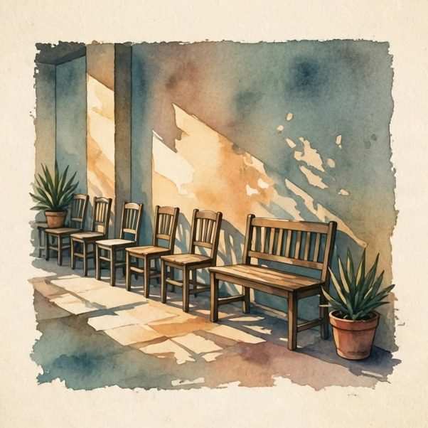
A row of chairs and benches along a wall where the sun lands in the afternoon.
The best seats in any commonwealth town are not in the council chamber. They are along the south wall of the square, where the sun lands in the afternoon, and they belong by unwritten charter to the old. From the wall, the whole traffic of the town passes in review: the market, the school door, the arrivals at the gate, the beginnings and ends of courtships, conducted mostly in errands. The elders sit there not as decoration but as the town's long memory in its working clothes, and their commentary — continuous, uninvited, and archived nowhere — is the closest thing the commonwealth has to a daily gazette with a conscience.
The seat is an office, and like all offices in this house it carries duties disguised as privileges. The old on the wall are expected to notice: the child out alone too late, the stranger who has been wandering since morning, the roof smoke that does not look right. They are the town's widest surveillance and its gentlest, because what they mostly do with what they see is mention it, at the right moment, to the right person, in the form of an observation about the weather. A town that benches its old out of sight, the register remarks, has dismissed its most experienced watch and kept only the one with lanterns.
The arrangement costs the young something real, and the ledger of this hall does not omit it. To grow up under the wall's kindly attention is to grow up observed, and more than one generation has chafed at courtships reviewed like council business and failures annotated in real time. The commonwealth's answer is not to move the benches but to keep the custom that balances them: what is seen from the wall may be mentioned once, and teasing, however accurate, is rationed by the same law of the second day that governs strangers. The old keep their seats. The young keep a fighting chance. The sun, indifferent to both, keeps landing where it lands.
68Noise, Quiet, and the Hours Between
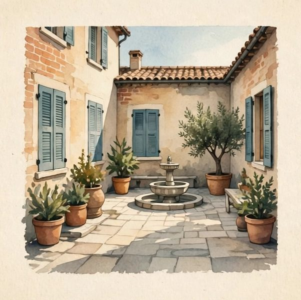
A quiet courtyard at midday rest, shutters half closed.
The commonwealth regulates its noise the way it regulates its water: as a shared resource that one household can foul for many. The day is divided by custom into the hours of work, when hammers and carts and market voices may make their honest din; the hours of rest, at midday and after the evening bell, when the din must fold itself away; and the hours between, which belong to negotiation. A forge may not start before the first bell. A wedding may be as loud as it likes until the second. The rules are few, posted, and enforced mostly by the street's own memory of who transgressed last, and how the street responded.
Quiet, in this scheme, is not the absence of life but a form of it with its own population. The midday rest fills the courtyards with a specific and defended silence, behind which children are threatened into whispers and apprentices learn the valuable skill of doing nothing gracefully. The house counts the rest hours as part of the working day, not a theft from it, having observed that towns which abolish the quiet hours gain an hour of noise and lose, somewhere invisible, the afternoon's temper. Prosperity measured in evenings begins at noon, the keeper writes, in a margin, with the shutters half closed and the soup going cold at a civilized pace.
The system's failure mode is the quarrel it was built to prevent, arriving by a door it left open: the definition of noise. One generation's honest din is the next generation's persecution, and the bells themselves have been litigated — the night watch's hourly call denounced as a public nuisance by a street of new houses that had, the watch replied with some justice, moved in next to a bell. The commonwealth settles these cases by seniority of custom and sympathy in roughly equal measure, and writes the settlements down, so that the hours between grow a case law of their own. Noise is decided, finally, the way everything here is decided: in the open, slowly, with the elders on the wall pretending not to listen.
69A Wedding Procession Crosses the Square
A wedding in the commonwealth is not a private event with guests. It is a procession, and a procession is a claim on the whole town: the couple, their families, the musicians, and a tail of children and neighbors walk the long way from the church door to the square, crossing it at its widest, while the market pauses and the wall of elders delivers its verdicts at conversational volume. The route is deliberate. A marriage that intends to live in a town presents itself to the town, in daylight, at walking pace, and the town, by standing still for it, gives its consent in the only currency it fully trusts, which is attention.
The customs around the procession are old and mildly absurd and defended to the death. The musicians must include one instrument played badly, for luck. The couple must cross the square without hurrying, whatever the weather, because a marriage that cannot survive rain at a walk will not survive worse at a run. The Charter Desk records the union afterward, in a sitting notable for its brevity beside the procession's length: two names, two marks, one line. The house's paperwork is short because its ceremonies are long, and the keepers consider the proportion one of the design's quiet successes.
Not every procession is a joy uncomplicated, and the streets know it. There are families reconciled by a wedding day who will be unreconciled by winter; there are couples crossing the square under the weight of a whole town's doubt, walking the route anyway, which the register counts as a form of courage the law cannot issue. The procession fails, as institutions do, when it becomes compulsory theater — the reluctant pair displayed for the town's appetite. The custom guards itself with one exemption, granted without paperwork: any couple may marry at the registry, quietly, at dawn, and the town will hear of it with the bread. Some do. The square keeps their secret as faithfully as it celebrates the others.
70Nobody Eats Alone by Accident
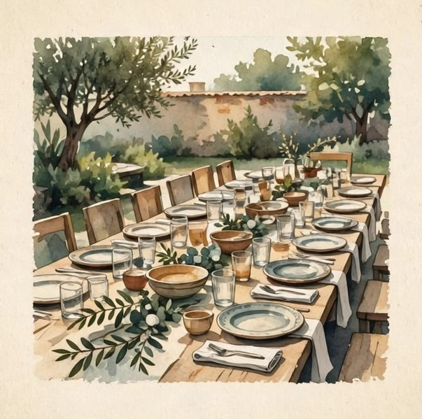
A long communal table outdoors, set with many plates, no one seated.
In the commonwealth it is very difficult to eat alone, and the difficulty is architectural. The inns keep a common table that no traveler may be refused a place at. The workshops break at midday into yards where the food is pooled by a custom older than any guild. Even the private house, at festival time, sets its table where the lane can see it and keeps an unassigned plate — the custom's name for it translates, roughly, as the plate for whoever. Solitude at meals exists, for scholars, invalids, and the determined, but it must be arranged, like silence in a forge. The default setting of the civilization is company.
The arrangement is defended warmly in the lanes and skeptically at the Charter Desk, and both defenses are recorded. Warmly: the common table is where the town's real business crosses — news, marriages, reconciliations, the hiring of apprentices and the quiet repair of feuds too small for courts. Skeptically: a custom that feeds everyone together also watches everyone together, and the plate for whoever has been known to arrive, at a widow's table, in the form of the town's curiosity about her plans. The house holds both truths without resolving them, and notes only that a person who cannot bear the common table may still eat — in the kitchen, at odd hours, unjudged — but will be asked after, because absence is also information.
The failure mode is the table become an obligation with cutlery: the guest who cannot decline, the host whose generosity is a ledger, the festival meal where the seating is a map of everyone's rank and the food a pretext. The commonwealth's customs push against it in small ways — the unassigned plate outranks the assigned ones, the cook eats with the company and not after it, and no account of who ate what is ever kept by anyone whose keeping counts. Nobody eats alone by accident in this house. They eat alone, when they must, by arrangement — and the arrangement, the keeper writes, is respected with a tact that the common table itself sometimes fails to learn.
71The Night Watch Knows Every Door
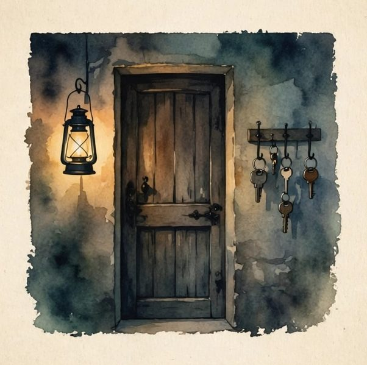
A night lantern hanging beside a heavy door, a rack of keys beside it.
The night watch of a commonwealth town is a small corps with a large knowledge. Its rounds are fixed and public, its lantern a standard pattern, its authority deliberately narrow: to notice, to wake, to fetch, and — only in the moment of fire or violence — to command. What distinguishes the watch is not its powers but its memory. A watchman of ten years knows every door on his round: which sticks in wet weather, which household is away, which shutter's rattle is a cat and which is a ladder. This knowledge is the real lock on the town, and the charter protects it by keeping the rounds stable, so that memory has time to accumulate in a single pair of boots.
Such knowledge is also, plainly, a risk, and the house does not romanticize it. A watch that knows every door knows every secret the doors imply: the debts, the illnesses, the visitors at unlikely hours. The commonwealth binds the knowledge with the strictest custom in this hall — what the round teaches the watchman belongs to the round, and telling it, even in his own kitchen, even years later, ends his service and his standing in a single afternoon. The rule is absolute because the temptation is human, and the register records, without names, the handful of careers it has ended. The towns sleep behind those silences. They know the price is being paid, and mostly by the right people.
The watch is paid from the town rate, fed at the common table on festival nights, and retired, at the end of long service, to the wall of elders with the town's formal thanks — the one ceremony of this hall that no one mocks. Its failure mode is the opposite of corruption: familiarity grown slack, the round walked in the mind while the boots do something shorter. Against it the house uses the simplest audit ever devised. Any citizen may ask the watch, at dawn, one question about the night — a sound, a light, a passing cart — and the watch must answer from the round or admit the gap. A thousand dawns of such questions keep the lantern honest, most nights, almost everywhere.
72Small Kindnesses, Unrecorded
At the end of the hall of streets, the house keeps its smallest room and its least documentable: the kindnesses that no clerk records. The swept doorstep of the house whose owner is ill. The extra loaf that appears in the basket of the family whose affairs the square is not discussing. The ferryman's fare, quietly doubled by a passenger who noticed the ferryman's boots. None of this is organized, taxed, awarded, or entered in any register this book draws on, and the keeper is reduced, in this room, to reporting what the streets told him over years: that it happens constantly, that it is load-bearing, and that no one can prove either claim.
The commonwealth is aware that a civilization which must rely on unrecorded kindness has a hole in its design, and it is equally aware that a civilization which tries to record kindness destroys the specimen in the act of filing it. The house's settlement of the paradox is to protect the conditions rather than the acts. The common table, the watch, the bench, the evening — the institutions of this hall are all, among other things, trellises: structures on which unrecorded things can grow without being managed. The charter does not command kindness. It builds streets where kindness is easy, cheap, and unobserved, and then it looks the other way, on purpose, as a matter of policy.
If there is a failure mode, it is the gap between the trellis and the vine: streets perfectly arranged for decency in a season when the people are frightened, or angry, or simply tired in their souls, and the kindness does not come. The house has no lever for that season and admits it in this small room rather than in a grander one. What a design can do — all it can do — is keep the steps swept in its own house, keep the plate set for whoever, and wait for the weather in people to turn. The keeper closes the hall with the observation that, in the commonwealth's memory, it always has. He enters the observation as a hope recorded, not a law established, and the distinction is the hall's last lesson.
73Festivals, Arts, and Memory
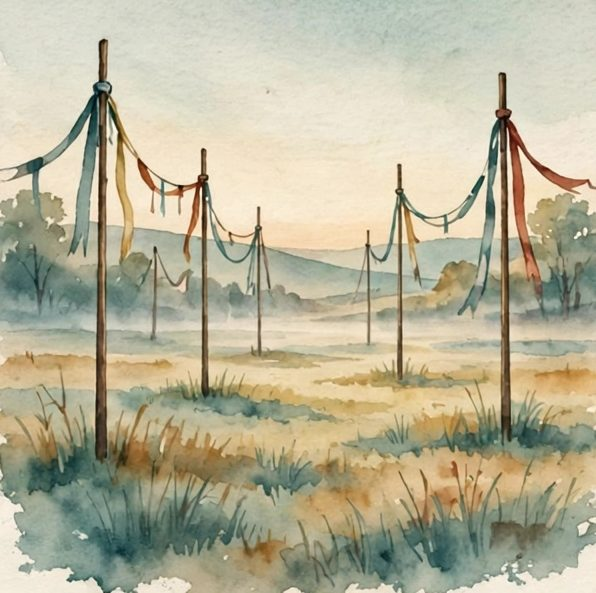
A festival green with poles and plain ribbons at dawn, before any crowd.
This hall concerns what the commonwealth celebrates, what it makes, and what it refuses to forget — the three activities by which a civilization tells itself, in public, what it thinks it is. The house treats them as seriously as the tax page, and for the same reason: a people's festivals are its budget of meaning, and like a budget they reveal the truth that speeches conceal. Tell the keeper a town's calendar and he will tell you its theology, its economy, and its opinion of children, in that order. The archive and the theatre get rooms in this hall beside the festival green, because memory and art are not decorations on the commonwealth's life. They are the machinery by which the life is handed on.
The arrangement, as everywhere in this design, costs something and fails somewhere, and the hall will say where. Festivals eat working days — by the charter's count, nearly a month of them in a full year — and the bill is presented annually by the harbor merchants with the regularity of a tide. Art in the commonwealth is unpatronized, unranked, and therefore uneven: sublime one valley, stubbornly mediocre in the next, with no ministry to correct the distribution. Memory is kept by amateurs with strong opinions. The house accepts all of it as the price of keeping celebration, art, and remembrance in the hands of the people they are about, rather than in the hands of an office that would do them more beautifully and less truly.
What the hall will not accept is boredom disguised as reverence. The festivals of the commonwealth are loud, edible, and slightly dangerous to dignity; its archive preserves embarrassments alongside triumphs; its statues, as a coming room will show, are of hands. The keeper's standard for this whole hall is the standard of the green at dawn: everything prepared, ribbons up, ground swept — and nothing yet performed, so that the day belongs, when it comes, to whoever shows up to live it. A civilization's memory and joy are either commons or they are propaganda. This hall is the record of an attempt, with failures itemized, to keep them commons.
74The Year Is Counted in Festivals
A wheel of the year carved in wood with abstract marks, ribbons tied at its rim.
Ask a commonwealth farmer the date and he will answer in festivals: three weeks after the Thaw Fair, the week of the Lanterns, the second day of the Bread Days. The calendar of the commonwealth is hung on its celebrations the way a coat is hung on pegs, and the pegs were there first. The year has its working skeleton of months, kept accurately by the observatory for contracts and tides, but the lived year — the one in which weddings are planned, debts fall due, and journeys are timed — is counted in festivals, and a proposal to reform it into pure arithmetic is the one reform the towns unite, instantly and cheerfully, to refuse.
The festivals themselves divide, on inspection, into honest kinds. There are the season festivals, older than the charter, that mark the year's real hinges: sowing, harvest, the first ice, the returning light. There are the civic festivals, invented by the charter and proud of it, celebrating such unpoetic necessities as the paying of the tax and the checking of the bridges. And there are the local festivals, one valley's saint of a day that no one forty miles away has heard of, which the house protects with particular ferocity, because a calendar with no local entries is a calendar that has stopped describing the country it claims to organize.
Counting the year this way costs precision, and the ledger admits the bill. Contracts that say 'by the Lanterns' have generated a small, permanent caseload at the Charter Desk, where clerks maintain the double calendar and translate between feast and number for the ports' benefit. Foreign merchants call the system picturesque for one season and obstructive ever after. The commonwealth answers that a calendar is not only a measuring instrument; it is the shape a people's attention takes across a year, and attention, like water, cannot be commanded into a straight line without losing most of it to the banks. The wheel turns. The accountants cope. The ribbons are replaced each spring, at public expense, without debate — the only item in the budget of which that can be said.
75The Festival of Unfinished Things
The commonwealth's most characteristic festival began, by all accounts, as a mason's joke. Once a year, in the early autumn, every town holds the Festival of Unfinished Things, at which the citizens bring out what they have started and not completed — the half-built wall, the three chapters, the boat ribs in the barn, the quilt in its fourth year — and display them in the square without shame and, by the festival's strictest rule, without apology. The unfinished things are garlanded like brides. Speeches are given in their honor by their makers, restricted by custom to an account of what the thing was meant to become and what, so far, it has become instead.
The festival's function is statistical as much as festive, and the keepers are frank about it. A civilization sees its finished works every day and draws conclusions about itself that are far too flattering; the unfinished inventory is the correction. Whole districts, some years, display mostly abandoned projects, and the square's laughter has an edge in those seasons, and the register records them as the festival's most valuable years. A town that can garland its failures in public, annually, has insured itself against the most dangerous civic emotion, which is not despair but pretense. The unfinished wall stands in the square all week. Children play on the scaffolding. Building, usually, resumes.
It has its failure modes, as a festival of honesty would. The same families display the same wall for a decade, converting confession into tradition. A competitive note has crept into some squares, where makers vie for the most spectacular incompletion, which corrupts the data and the spirit at once. And there is the melancholy minority for whom the festival is not medicine but salt: the designer whose unfinished things are not projects but a life, sitting in the square with his garlands like everyone else, owed — the house insists — not pity but the festival's central and equal gift, which is one day a year when unfinished is not a verdict. It is the theme.
The Charter Desk
One desk receives all correspondence for this house — questions, corrections, and word of any imagined country a visitor has been designing: the law they are proudest of, the custom they cannot justify, the province that refuses to behave. It is read in the order it arrives, and entered in the register of the commonwealth.
76Songs Belong to Whoever Sings Them
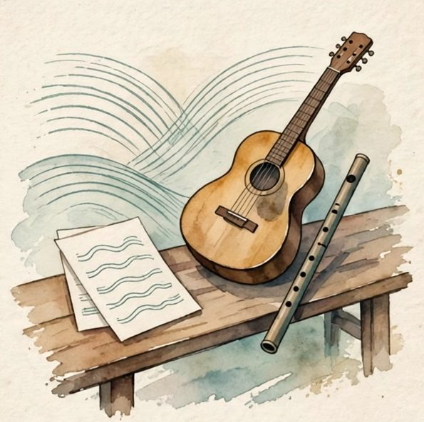
A guitar and a flute resting on a bench beside sheet music with abstract notation.
No song in the commonwealth can be owned, and the rule was not made by philosophers. It was made by the practical discovery, repeated in every generation, that songs refuse the condition anyway. A tune composed for a wedding is a work song by Michaelmas and a lullaby by winter, with its words altered past recognition and its composer, if he objects, invited to compose a better one that travels less. The law simply ratifies the traffic: a song may be credited, and the credit is a point of honor fiercely kept, but it may not be fenced. Whoever sings it, owns it for the duration of the singing, which is the only ownership songs have ever actually respected.
The arrangement costs composers the thing composers in other arrangements live on, and the house does not insult them by denying it. A commonwealth songwriter eats by other work — most sing in the world as masons, clerks, ferrymen — and the register acknowledges that the world's stock of songs is probably smaller, and its average quality certainly rougher, than a paid repertoire would produce. What the arrangement buys is a singing population. Music here is not a performance art with an audience; it is a utility, like the roads, maintained by everyone who uses it, and a traveler can navigate the valleys by ear, the work songs changing with the crops, the harbor songs saltier with every mile toward the sea.
The failure mode is the flattening of credit: in a commons, origins blur, and a song's true maker can be sung out of his own tune by a town with a stronger memory for a different name. The house guards the credit with the only registry it trusts for such things — the wall of elders, who are examined at festivals on the authorship of the year's traveled songs the way other officers are examined on accounts. Their answers settle the matter in the lanes, if not in law. A song belongs to whoever sings it. Its name, the commonwealth insists on remembering, belongs to whoever made it first. Between those two sentences the whole musical life of the country is conducted.
77The Archive Keeps the Failures Too
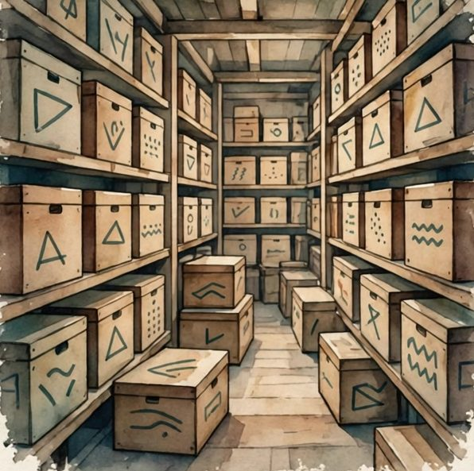
An archive corridor of wooden boxes, some marked with abstract signs only.
The archive of the commonwealth is kept in a long room of wooden boxes in the capital, with branches in every shire town, and its founding rule distinguishes it from the prouder archives of other designs: it keeps the failures too. The collapsed bridge's plans are filed beside the standing one's, with the inquiry's findings unabridged. The abandoned tax scheme, the drained marsh that refused to drain, the embassy that achieved nothing in three expensive years — each has its box, labeled in the same hand as the triumphs. A clerk who suggested, one lean year, that the failure boxes be burned for the space, was answered with the only promotion the archive has ever regretted: he was put in charge of reading them.
The rule costs shelf room and civic comfort in about equal measure, and both bills are paid deliberately. A government that must file its failures in the same corridor as its glories governs measurably differently: schemes are proposed more carefully, because their authors know the box is waiting; and defeats, when they come, are less often followed by the expensive theater of pretending they were victories. The archive's readers are mostly the young officers of the Charter Desk, sent there by a custom that amounts to a curriculum: no one administers a province who has not spent a season among the boxes of their predecessors, reading at the speed of other people's consequences.
The failure mode is curatorial, and subtle: an archive that keeps everything teaches nothing, because the lesson drowns in the shelving. The commonwealth's archivists answer with index and appetite — summaries written plainly, one page per box, and a standing list, revised at each festival of unfinished things, of the ten failures the current generation is most in danger of repeating. That list is read aloud in the corridor, to the boxes, by the senior archivist, in a ceremony visitors find comic until they hear their own decade's entries. Memory kept this way is not a vault. It is a staff meeting with the dead, and the dead, in this house, are allowed to be right.
78Statues Are of Hands, Not Faces
The public monuments of the commonwealth depict hands. In the squares and at the bridge ends stand stone hands, larger than life: a mason's hands, scarred at the knuckles; a midwife's; a ferryman's hands on an oar that is not carved, the ferryman's gift being motion; a scribe's hands, ink-stained in the stone by a mason with a sense of accuracy. Faces were tried, in the early years, and abandoned after a generation's experiment whose results the archive keeps in a box of its own. The faces dated. They flattered, they accused, they were claimed by factions. The hands merely work, in the stone, forever, and no faction has yet found a way to march behind a hand.
The choice is a doctrine about what a civilization should remember of its people, and the doctrine is stated on the plinths in the plainest terms the house permits itself: not who ruled, but what was done; not the countenance, which time and painters both falsify, but the grip. Children learn the town's history at the plinths the way they learn the calendar at the festivals — by touch, literally, since the hands are carved to be held, and the stone at the fingers is worn smooth by two centuries of schoolchildren taking hold of a mason's grip to feel what work was. The register counts those polished fingertips among the commonwealth's most honest statistics.
The arrangement has its losses, and a later room of this hall will acknowledge the sharpest of them, which is that some citizens' whole contribution was a face — a presence, a witness, a beauty that steadied people — and the hands leave them unmemorialized. The sculptors argue, generation after generation, about a statue of open eyes, and the argument itself has become the memorial custom intended. Nothing in this house is settled so completely that the unsettling of it is forbidden. The hands stand. The debate about the eyes returns each decade, on schedule, and the keeper enters both facts in the same hand, without ranking them, which is perhaps the monument the commonwealth most deserves.
79A History Written by Many Hands
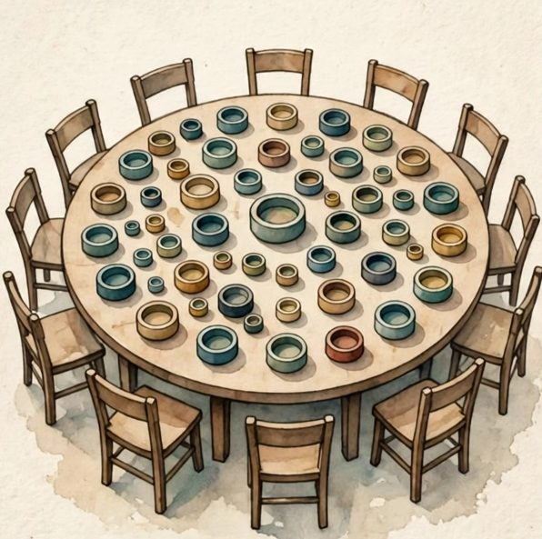
A great round table with many inkwells and many chairs around it.
The history of the commonwealth is written at a round table, and the seating is the method. By the charter's custom, no single historian holds the pen of the national past. Instead, each generation convenes a table — scholars, elders from the wall, a ferryman, a midwife, two schoolchildren chosen by lot and sworn to ask the questions adults have learned not to — and the table produces the next volume together, in sessions that are minuted and, on the evidence of the minutes, frequently loud. The resulting history is untidy, argued over in its own footnotes, and read in the schools with the arguments left in, so that a child learns early that the past is a country its inhabitants dispute.
The method's defense is accuracy of a particular kind. A history written by one hand is smooth, and the smoothness is purchased by deciding, a thousand times, which telling to silence. The table's history declines the purchase. Where the valleys and the capital remember an event in opposite colors, both colors are entered, with the tellers named, and the reader is trusted with the discomfort. The keepers of this house regard that trust as the volume's real subject: a civilization instructing its children that truth about the past is not a possession to be handed down but a practice to be joined, like the common table, by bringing a plate and an account of one's own.
The costs are notorious and itemized cheerfully by the table's critics. The work is slow — one generation's volume has taken nineteen years — expensive in strong tea and stronger tempers, and vulnerable to the loudest chair. Volumes differ wildly in quality; the table of a complacent decade produces a complacent history, and there it stands, in print, until the next table corrects it with interest. The commonwealth accepts the whole bill as the price of a past that belongs to its people rather than to its clerks. Many hands wrote it. Many hands, the preface of every volume promises, will be allowed to write it again.
80The Holiday Nobody Can Sell You
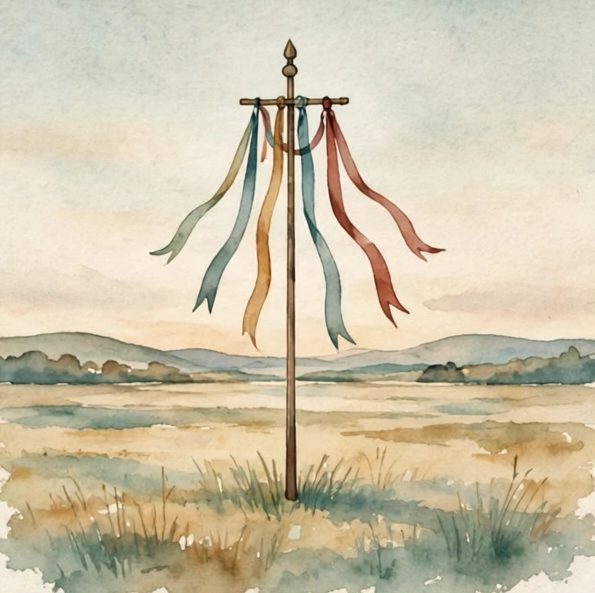
A festival pole with plain colored ribbons standing in an empty field.
The last room of this hall is a field, and in the field stands a pole with ribbons, and the holiday it marks is the commonwealth's favorite and its least exportable: the Day of No Account. Its origin is disputed between three valleys, which is considered appropriate. On this day, once a year, nothing is sold, because the market does not open; nothing is owed, because the ledger keepers are forbidden their books; no rank is observed, because the council itself serves the soup. A traveler arriving with money finds the money briefly useless, which the house regards as an education money cannot usually buy, and which is, of course, the point of the exercise.
The holiday is the design's annual audit of everything the market cannot do, conducted by switching the market off. What the day reveals, reliably, is how much of the commonwealth's life was never in the ledger at all: the visiting, the mending, the courtships advanced, the feuds dissolved over soup — the entire unpriced economy of the previous halls, suddenly visible because its priced twin has stopped for twenty-four hours. Visitors from commercial nations tend to spend the day first bewildered, then restless, then — the innkeepers report it as a pattern — sitting down in the field with everyone else, watching the ribbons, being, for once, an expense of nobody's.
Its failure mode is the one the founders predicted in the margin of the charter: the holiday so beloved that commerce simply moves to its borders, stalls springing up outside the town limits to sell to the celebrants, the Day of No Account acquiring an account at one remove. The towns police the borders of the day with unusual cheerfulness and total inflexibility — the stalls are turned back at the boundary stones, and their owners are offered soup and a seat in the field instead, which some accept. A holiday nobody can sell you must be defended, annually, against being sold. The house counts the defense among its festivals too, unofficially, and notes that the defenders appear to enjoy it more every year.
81Grief Has a Public Season
Grief in the commonwealth is not hidden, and it is not scheduled by decree either. The calendar simply leaves a season open for it, the way a field is left fallow: a stretch of weeks in late autumn when the bells ring slower, the markets close an hour earlier, and nobody is expected to be cheerful on demand. A household that has lost someone hangs a plain grey ribbon at the door, and the street understands without being told. Neighbors bring food without ceremony and leave without requiring thanks. The season belongs to everyone, because sooner or later everyone lives in it.
The arrangement has costs, and the house lists them honestly. Trade slows in the grief season, and some years the slowdown is felt in empty stalls and postponed journeys. Visitors from livelier countries find the commonwealth somber and say so. There are also those the season serves badly: the private griever who wants no ribbon and no callers must still ask, each year, to be left out of a kindness designed for the many. The keeper keeps that exception written into the custom, in the first line, so that refusing the season is itself part of the season.
What the season protects is proportion. Grief that has a place in the year does not have to fight for room in every week of it, and joy in spring is not treated as betrayal. The theatres close for the first week and open again without apology. Children learn early that sorrow is weather, not disgrace: it comes, it is dressed for, it passes over. When the last ribbon comes down from the last door, the squares fill a little louder than before, and nobody calls that forgetting. They call it the year, turning as it was designed to turn.
82The Theatre Plays to Half-Empty Benches
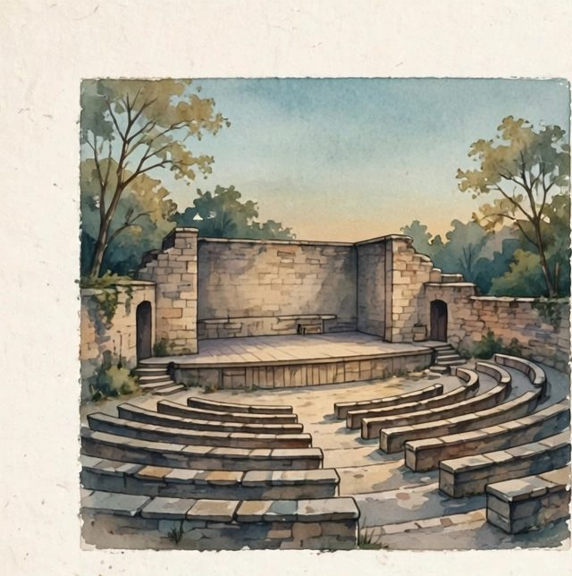
A small open-air theatre with stone benches and an empty stage at dusk.
The commonwealth's theatre is a modest stone semicircle above the river, and on most evenings its benches are half empty. The keeper considers this a sign of health rather than failure. A city where every seat is filled every night is a city with nothing else to do, or one where attendance is quietly compulsory. Here the plays compete honestly with kitchens, workshops, arguments, and sleep, and they often lose. The actors are paid the same either way, from a small public purse, because a performance's worth was never meant to be measured by its crowd.
The repertory is plain and stubborn. Old plays about harvests and lawsuits, new plays that the town argues about for a week, and once a season a play written by nobody famous from a hill town, staged exactly as written. Some evenings twenty people watch a tragedy performed with complete seriousness, and the actors say those are the finest nights: no coughing, no restlessness, only attention. The benches are built wide enough that a person may stretch out and sleep through a dull second act, and sleeping is not treated as an insult. It is treated as information.
The failure mode is recorded plainly. Half-empty benches mean the theatre is always one bad decade from becoming a storage yard, and twice in the imagined record it nearly did. What saved it was not subsidy but habit: grandmothers who had courted in the back row insisted their grandchildren be taken, whatever the play. So the house endures the way most good things in the commonwealth endure, not by triumph but by being woven into ordinary affection. The curtain rises on time. Whoever comes, comes. The play is the thing offered; the crowd is weather.
83What the Commonwealth Forgets on Purpose
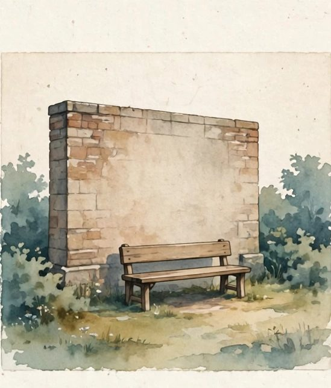
A blank memorial wall with a single bench before it.
The archive has a furnace, and once a generation the keepers feed it. Records of old insults between towns, lists of who owed whom an apology in some forgotten quarrel, the minutes of feuds that ended a century ago: these are burned in a small ceremony nobody attends with pleasure. The commonwealth forgets on purpose, because it has learned in its imagined history that a perfect memory is not a blessing to a country. Some knowledge is a tool. Some is only a weight that each new generation is asked to carry for people it never met.
Forgetting is fenced with rules, because the same furnace could eat evidence as easily as grudges. Nothing is burned that records a debt still owed, a wrong still unredressed, or a lesson bought with lives. The failures of laws and the names of the failed are kept forever; it is the heat that is discarded, not the fact. A committee of ordinary citizens, chosen by lot, reads each bundle before it burns, and any single member may pull a page back into the archive without giving a reason. The keeper notes that pages are pulled back often, and considers the ceremony better for it.
A blank memorial wall stands in the capital, smooth and uninscribed, for everything the commonwealth has chosen to let go. Visitors sometimes find it the most moving monument in the city, which the keeper records without quite understanding it. Perhaps a clean wall says what carved names cannot: that the past is honored best by being carried lightly. The wall is washed each spring. Nothing is written on it, ever, and the rule is kept even in years when many citizens would like an exception. Forgetting, like remembering, is a discipline. The wall is its quietest teacher.
84Memory Is a Commons, Not a Vault
In the commonwealth, the past is held the way grazing land was once held: in common, by custom, with everyone's herd entitled to its share. Any citizen may tell any story in the national store, badly or well, and no office licenses the telling. The songs, the founding tales, the accounts of floods and harvests belong to whoever is singing or telling them at the time. This produces a hundred versions of everything, some contradicting each other flatly. The keeper files the contradictions without alarm. A memory that only one version survives of is usually a memory somebody has locked up.
A commons needs tending, or it silts up with whoever shouts loudest. So the commonwealth keeps its small courtesies: the storyteller is not interrupted mid-tale, the listener may question afterward, and the phrase that is not how my grandmother told it is understood as contribution, not attack. Schoolchildren learn three versions of the founding before they are ten, not to confuse them but to guard them against the idea that the past arrives in a single voice. The cost is real and admitted: certainty is scarce here, and citizens who crave it must import it privately, at their own expense.
The vault model was tried once, in the second century of the design, when a careful keeper sealed the true record where only scholars could consult it. Within a generation the sealed truth had become a rumor, and the rumor was worse than any error in the open versions. The vault was opened, the documents carried back to the square in wheelbarrows, and the festival of that year is still remembered fondly. Memory kept in common is untidy, argument-prone, and alive. The house keeps it that way on purpose, and calls the untidiness the price of a past that belongs to the people living in it.
85The Strangers at the Gate
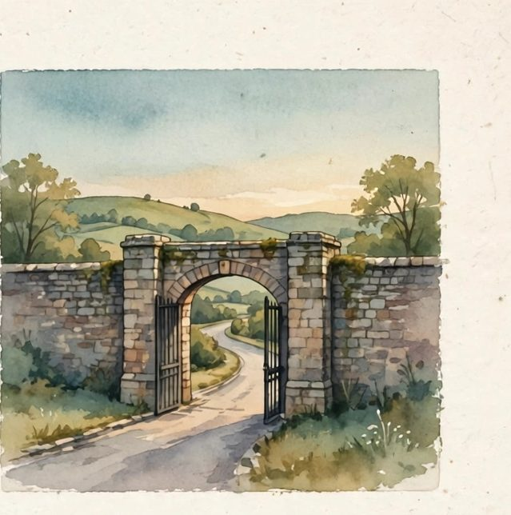
A city gate standing open at dawn, a road running through to green hills.
Every road into the commonwealth ends at a gate, and every gate is built to the same unglamorous specification: wide enough for a cart, roofed against rain, with a bench, a water trough, and a gatehouse where the lamp burns all night. The stranger arriving at dusk finds the gate open and the keeper of the gate awake, not because the commonwealth is careless but because it decided long ago what its gates are for. They are the country's first sentence to the outside world, and the country prefers that sentence to be: come in, sit down, we will talk in the morning.
The gate is also where the commonwealth is most honest about its limits. Beyond the bench and the trough, the stranger can see the road climbing toward lit windows, and no one pretends the welcome is endless. There is a register, there are questions, there is a season each year when the high passes close with snow and the gates close with them. Hospitality here is a practice with edges, like everything else in the design. What the gate refuses is not people but theater: no inspections performed for show, no welcome speeches, no suspicion staged to reassure the fearful.
Strangers remember gates longer than they remember capitals, and the gatekeepers are chosen accordingly: older citizens, mostly, with languages if possible and patience if not, paid plainly and honored publicly. Their instructions fit on one card. Offer water. Offer the bench. Write down what the stranger says they need, in their own words, before writing anything else. In the morning, the road. The keeper of this house has always thought the card a fair summary of the whole commonwealth, and notes that a country could do worse than be summarized at its gate.
86A Stranger Is a Citizen Not Yet Met
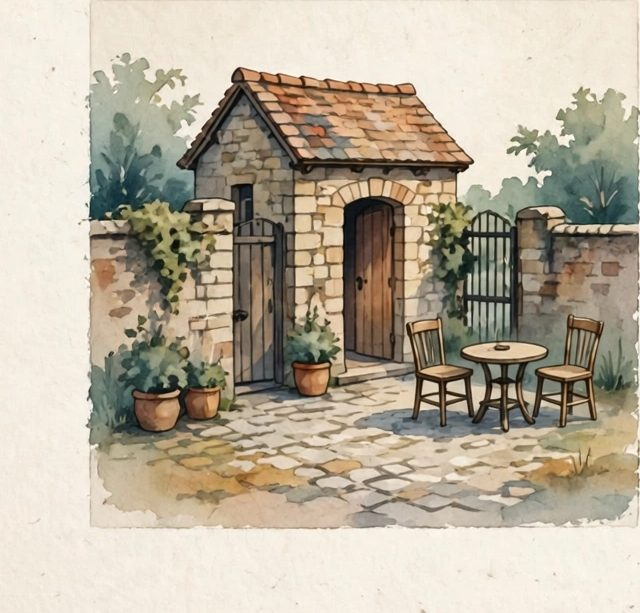
Two chairs and a table set outside a gatehouse for arriving guests.
The phrase is painted inside the gatehouse where only the gatekeepers see it, because the commonwealth distrusts its own slogans and keeps them off the public walls. A stranger is a citizen not yet met. It is not a claim that every stranger will stay, or should. It is a working instruction about the order of events: the meeting comes first, the categories afterward. Until a person has been greeted, fed, and listened to, the country knows nothing about them except that they were traveling. Everything else it might say would be a guess dressed as knowledge, and the house has rules about guesses.
The practice that follows is deliberately ordinary. The stranger's name is asked and pronounced as carefully as an unfamiliar word can be, and written down as the stranger spells it. Their errand is their own to state or to keep. If they ask about the country, the gatekeeper answers with the plain version given to citizens: the laws are few, the winters are real, the bread is good, the provinces argue. No recruiting is done at the gate. A country that must advertise at its border, the keeper remarks, is confessing something about its interior.
Some strangers stay a night and leave forever, and the phrase still holds: they were met, and the meeting is the unit the commonwealth counts. Others are met so thoroughly that thirty years later their grandchildren are gatekeepers. The design makes no attempt to predict which, and the register of arrivals is careful to record departures without commentary. A citizen not yet met may also be a citizen met, welcomed, and waved onward down the road with bread for the journey. Not every door in the house opens inward. Some open outward, kindly, and that is also a form of belonging to the place.
87The Gate Is a Door, Not a Verdict
A door does two things: it lets in and it shuts. The commonwealth insists that its gates be understood as doors, which is to say as furniture, operated by people, answerable to reasons that must be spoken aloud. A verdict is different. A verdict is final, impersonal, and proud of both. The house has watched gates in other imagined countries harden into verdicts — the stranger processed, categorized, and disposed of by a machinery that no single person admits to operating. Against that drift the design sets one plain custom: whoever keeps the gate must be able to explain, in the stranger's hearing, what is being decided and why.
This does not mean every gate opens to everyone at every hour, and the house does not pretend otherwise. Plague years, war rumors, the winter closing of the passes: the gates have shut before and will shut again, and some strangers have been turned toward other roads with provisions and regret. The difference the custom guards is narrower and more durable. A refusal delivered by a person, with reasons, at a table, can be argued with, appealed, remembered accurately, and forgiven. A refusal delivered by a system can only be obeyed or evaded. The commonwealth chooses the kind of refusal it can be responsible for.
The gatekeepers keep a book of hard mornings, in which the decisions they are least proud of are written in their own hands. Once a year the book is read at the Charter Desk, not as accusation but as maintenance, the way a bridge is inspected. Entries are short. Turned away a family in the rain because the register was full; still think of it. The keeper of this house counts that book among the commonwealth's most important documents, because a door stays a door only while someone is willing to remember, by name, the times it behaved like a verdict.
88Dissent Is Housed, Fed, and Answered
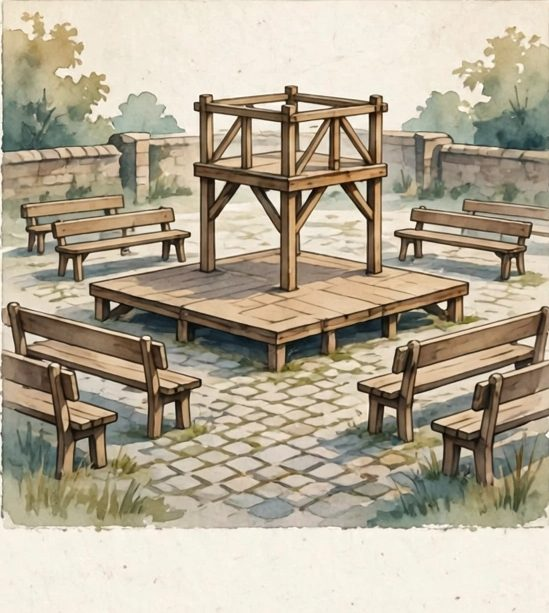
A wooden speaker's platform in a square, with empty benches before it.
The commonwealth's treatment of dissent begins with real estate. In every town of any size there is a speaker's platform in the square, roofed, with benches, maintained at public expense and available to any citizen who books it by writing a name in the day book. No permission is asked about the speech. The booking clerk records the hour, not the opinion. On the platform, a citizen may argue that the laws are wrong, the charter is foolish, and the keeper is a dreamer, and the country's entire response, at that stage, is to have provided the roof and the benches in good repair.
Housing and feeding are literal. A traveling dissenter — and the design breeds them, citizens who tour the provinces arguing for strange reforms — may claim the guest bench at the gatehouse and the plain traveler's meal like any other stranger. The reasoning is unsentimental. Hungry, exhausted opposition curdles into something else; fed and rested opposition stays argument, and argument is the form the commonwealth knows how to answer. And answered it is: the custom requires that a serious objection raised in a public square receive a public reply from the office it concerns, within a stated number of days, in words the objector may quote.
The keeper lists the cost without flinching. Some speeches are cruel, some are foolish, and a few each decade are cruel and persuasive at once, aimed at the country's genuine weak points. The benches have held speakers the whole town wished elsewhere. The design holds anyway, on a calculation the house states coldly: a country that can be argued with in its own squares rarely needs to be fought in its own streets. The replies are not always good. The custom does not promise wisdom. It promises that the argument stays in the open, where both sides must finally go home to supper through the same streets.
89The Neighboring Country of Different Laws
A river border between two countries, one bridge, fields on both banks.
Across the river lies the neighboring country, and the design is careful to give it neither a sneer nor a halo. Its laws are different. Where the commonwealth keeps few laws, the neighbor keeps many, beautifully indexed. Where the commonwealth settles disputes at a table, the neighbor prefers courts with high ceilings. Their bread is worse and their clocks are better, their taxes are longer and their roads are straighter, and caravans of each country's citizens visit the other mostly to come home saying so. The keeper regards this arrangement as one of the healthiest in the whole design.
The bridge is the working part of the relationship. It is maintained jointly, tolled lightly, and closed only by mutual notice, and a small permanent staff of translators sits at the middle toll house, because most quarrels between the two countries have historically been matters of phrasing. Trade crosses daily: the neighbor buys timber and festival ribbons and sells hinges, glass, and a cheese the commonwealth has tried and failed to imitate for two hundred years. Marriages cross too, and with them in-laws, recipes, and long comparative arguments at winter tables, which both countries count as a form of diplomacy that actually works.
What the neighbor is for, in the design, is perspective. A citizen who has never seen another way of arranging things mistakes their own customs for the laws of nature, and the river prevents that error cheaply. Schoolchildren cross on an excursion and return mildly scandalized that anyone could live so, which their teachers count as the beginning of education. The keeper is honest about the failure mode: neighbors can curdle into mirrors of resentment, each defining itself against the other. The bridge has stood against that too, mostly by being used for cheese. Daily traffic is a humble, durable argument against contempt.
90Those Who Arrive With Nothing
Some strangers arrive at the gate the way weather arrives: without introduction, resources, or a story they are ready to tell. The commonwealth's custom for them is the oldest in the gatehouse book, and it begins with objects rather than questions. Bread, water, the bench, a blanket from the chest that is never allowed to stand empty. The register is filled in later, when the person can hold a pen or hold a conversation, whichever comes first. The house is explicit about the order of operations, because in an emergency every institution is tempted to process first and feed later, and the feeding delayed is often the feeding denied.
After the first days, the design offers work before it offers charity, and offers both without bookkeeping of gratitude. The arriving person is told what the town needs done — there is always a wall, a harvest, a road crew — and what it pays, which is what it pays anyone. Some take the work and root. Some rest, recover, and leave down the same road with their bundle heavier than it arrived, which the gatekeepers record as a success equal to any settlement. The commonwealth does not require the story to end inside its borders for the welcome to have been worth giving.
The honest accounting follows, as it must in this house. Those who arrive with nothing sometimes arrive with fevers, with sorrows the town cannot mend, with habits formed in harder places that frighten the neighbors. A few, in every generation of the register, repay kindness badly, and the gatekeepers write those entries too, in the same flat hand. The custom survives its disappointments because it was never based on the arrivals deserving it. It is based on the town's decision about what kind of doorway it intends to be. The blanket chest is refilled. The bread is baked before dawn. The gate opens.
The Charter Desk
One desk receives all correspondence for this house — questions, corrections, and word of any imagined country a visitor has been designing: the law they are proudest of, the custom they cannot justify, the province that refuses to behave. It is read in the order it arrives, and entered in the register of the commonwealth.
91The Designer Is Also a Stranger Here
A small boat arriving at an unfamiliar shore, one sealed chest aboard.
It is the strangest entry in the register, and the keeper writes it without embarrassment: the person who designed the commonwealth does not live there. No one does, yet. But the design insists on a subtler point — even in imagination, even with the charter in his own hand, the designer arrives at the gate as a stranger and is subject to the gate. He does not hold a key. Imagined citizens have imagined stubbornness, and the longer the design is kept, the more its keeper reports being refused, corrected, and surprised by people who exist only because he first supposed them. The house treats this not as whimsy but as the central evidence that the design is honest.
A world that always agrees with its designer is a mirror with countryside. So the keeper cultivates the friction deliberately. The provinces were given arguments the designer personally dislikes. The neighbor across the river was given better clocks on purpose. Citizens at the speaker's platform have been allowed to win debates against the charter itself, and their victories are written into the register in the same ink as everything else. Each time the design pushes back, the designer learns the difference between what he values and what he merely finds comfortable, which is most of what the whole exercise was for.
The practical consequence is humility with a procedure attached. The designer may propose; the imagined country disposes, slowly, through its customs. Changes to the charter require the designer to argue his case at the desk as any citizen would, in writing, where he can lose the argument on paper before losing it in the country. Visitors sometimes laugh at the scruple. The keeper does not. A designer who can overrule his world at whim is not designing a civilization. He is rehearsing a mood. The gate stays between him and his country, and he queues at it like anyone, carrying his sealed chest of intentions, waiting to be met.
92What the Commonwealth Cannot Imagine
A quarter of a city lost in fog, its streets unseen.
A quarter of the capital in the design is permanently fogged. The streets are drawn up to its edge and then the pencil stops, not from laziness but from an entry in the charter that the keeper reads aloud once a year: this country does not contain everything, and the map must say so. Every design has such a quarter, whether it admits one or not. There are experiences the designer has never had, trades he does not understand, sorrows and joys whose shape he cannot honestly invent. Where his knowledge ends, the fog begins, and the fog is labeled rather than filled with furniture borrowed from books.
The list of what cannot be imagined is kept at the Charter Desk and revised like any other document, usually by being shortened: a traveler describes a craft, a stranger at the gate explains a custom, and a street or two of the fogged quarter resolves into warehouses and washing lines. But the quarter never empties. For every corner clarified, the designer notices two more he had been confidently inventing from nothing. The fog, it turns out, is not the residue of ignorance but its true portrait, and it grows more accurate as it grows better mapped at the edges.
The house is firm about why the fog matters. A design that imagines everything imagines nothing honestly; it merely furnishes. The fogged quarter keeps the rest of the map truthful by standing as the admitted margin of the whole enterprise. Citizens of the design are imagined walking its edge streets and looking in, curious, the way the designer looks at them. Some visitors to this hall find the fog the most discouraging exhibit. The keeper finds it the most hopeful. A country with a fogged quarter is a country that can still be surprised by itself, and surprise, in a designed world, is the signature of life.
93War Exists Only in the Old Songs
The commonwealth keeps no army, and its songs are full of war. This is not a contradiction the house is embarrassed by. The old songs remember sieges, banners, last stands on bridges, the whole glittering vocabulary of organized violence, and they are sung in full at the winter festival by people who have never seen any of it. The design's claim is modest and should be stated modestly: in the imagined record, war belongs to the past the country sings about, not to the present it lives. The songs are kept precisely so that the memory stays in the music, where it can be examined, rather than in the armory, where it could be used.
The keeper refuses the easy version of this chapter. The commonwealth is not peaceful because its people are imagined better than people. It is peaceful, in the design, because of plumbing: disputes routed to tables, dissent fed, neighbors supplied with cheese and arguments, young men's restlessness given roads, harvests, festivals, and the night watch. Remove the plumbing and the songs would come down off the shelf quickly enough, and the register says so in plain words. Peace here is maintenance, not essence — a set of practices inspected annually like the bridge, and no more guaranteed than the bridge is.
There is also the matter of the songs themselves, which do not behave. Sung by firelight, the old wars sound glorious, and every generation of the commonwealth produces a few young citizens who find the glory more interesting than the plumbing. The design's answer is characteristic: the songs are never banned, and the singing is always followed, by custom, with the names of the harvests that failed in the war years and the lists of the ordinary dead, read flatly, without music. Glory is permitted its verse. It is not permitted the last word. The children learn both, in that order, every winter of their lives.
94When the Design Disagrees With Itself
Two drafting tables side by side holding two different maps of the same land.
On two drafting tables in the Charter Desk's workroom lie two maps of the same country, and they do not agree. In one, the capital's market charter encourages large caravans; in the other, the law of quiet hours strangles the early trade the caravans depend on. In one, the provinces are promised their own clocks; in the other, the railway of the designer's enthusiasm requires one time from coast to desert. These are not errors to be ashamed of. They are the normal condition of any design large enough to be interesting, discovered the way engineers discover them: late, and by collision.
The house's procedure for internal disagreement is borrowed from its dispute law: the two claims are seated across a low table, each is stated by someone who favors it, and the costs of each are written down before any eloquence is allowed. Often the collision dissolves into a misunderstanding about which province, which season, which scale of things was meant. Sometimes it does not dissolve, and then the design must choose and record what the choice abandoned. The register keeps a shelf of abandoned alternatives, well bound. A design that cannot show what it gave up, the keeper says, does not know what it has.
The deeper lesson is about the designer, and it is entered without mercy. A design disagrees with itself exactly where its designer holds two values he has never made fight fairly: openness against quiet, local pride against common purpose, mercy against arithmetic. The maps collide because the man does. The house counts this discovery among the chief products of the whole exercise. It is cheaper to meet one's contradictions on paper, across a low table, in an imagined country, than to meet them first in the world, where the tables are real and the costs are not in pencil. The two maps stay on their tables, reconciled where possible, and where not, honestly adjacent.
95The Future Arrives Uninvited
A sunrise over rooftops, one window opening.
The charter was written for a country of farmers, ferrymen, and hill towns, and the future has been arriving in it ever since without knocking. A faster boat. A cheaper glass. A road where the design put a path, because feet voted before the council did. The register records the designer's successive astonishments with some sympathy: no sooner is the commonwealth arranged than it is out of date, its citizens imagined adopting, adapting, and ignoring the plan in proportions no charter can fix in advance. The future, in a designed world as in any other, arrives uninvited and immediately rearranges the furniture.
The design's defense is not prediction but slack. Granaries larger than the year's need, a treasury practice of small reserves, laws written few and general so that new things fall under old principles instead of requiring new statutes, and above all the custom that any citizen may do anything not forbidden, so novelty does not queue at an office for permission to exist. Slack looks wasteful in quiet decades, and every generation produces a reformer who proposes to trim it. The register's marginal note, in the keeper's hand, is short: the slack is the strategy; the waste is the premium; pay it.
A hundred imagined years in, the country the charter describes would be barely recognizable to its writer, and the house counts that as the design succeeding rather than failing. What survives of the original plan is not the street layout but the temper: few laws, kept well; strangers fed; failures written down. Institutions were the scaffolding; the temper was the building. The keeper closes the hall of the gate with the observation the whole design keeps making in different words — a civilization is not what its designer intended. It is what its people, imagined honestly, do with the intention. The future gets the last word, and the charter has learned to leave it a chair.
96Guests Leave, and the House Stays Open
Most strangers do not stay. This is the plain arithmetic of the gate register, and the commonwealth's customs are built to survive it gracefully. The guest who leaves after a season, after a year, after a decade that included a marriage and a workshop and a grave in the hill cemetery, is wished well at the same gate that welcomed them, with the same bread. No ledger of gratitude is presented. No argument is made that the country invested in them and is owed a return. The house is clear-eyed about what a welcome is: it is a gift at the time it is given, and a gift retroactively converted into a debt is something else wearing its clothes.
Departure has its small ceremonies. The gatekeeper walks the leaving guest to the first milestone if the weather is fair. The guest's name stays in the register without an asterisk. If they left a trade behind, an apprentice, a recipe, a song, the town keeps using it without ceremony and mostly without remembering where it came from, which the keeper counts as the natural tax and glory of all contributions. A country is, among other things, everything its guests forgot to take with them. Some return years later, grey at the gate, and are recognized slowly and then all at once, and the bench and the lamp are where they left them.
And so the hall of the gate ends where it began, with the door. The house stays open not as a policy that must be re-argued each season but as a maintained habit, oiled like the gate's hinges, inspected like the bridge. Open is a practice, not a mood; it survives bad years because it was never dependent on good feelings. The keeper's last entry for this hall is administrative and content: gates open at dawn, lamps lit at dusk, blanket chest full, bread ordered for the morning. Strangers are coming who have not been imagined yet. The country, such as it is, will be at the gate to meet them, because meeting them is most of what the country is.
97Step One: Begin With One Ordinary Day
A single day's objects on a table: bread, a cup, a key, a folded coat.
Put aside the founding speeches. The first step in designing a civilization honestly is small enough to fit on one page: describe one ordinary day, in one ordinary household, from waking to sleeping. Not a festival, not a crisis — a Tuesday. Who rises first, what the bread costs, which road the children take, what work fills the morning, what the midday meal is, who is tired by evening and who is bored. If the design cannot survive a Tuesday, it cannot survive anything, and most grand designs fail exactly here, in the unexamined hours between their monuments.
Work plainly and in order. Write the day in the present tense, hour by hour, and every time a detail is needed — a price, a tool, a custom, a law — either supply it from the design or mark the gap with a cross in the margin. The crosses are the day's real yield. Each one is a place where the civilization was a poster instead of a place. Do not rush to fill them. Carry the page around for a week first, and notice which crosses the mind fills on its own during dishes and walks. Those are the design's instincts. The rest will need decisions.
When the day reads like a day — when the imagined household has eaten, worked, quarreled mildly, and gone to bed at a believable hour — the designer has something no proclamation provides: a unit of reality by which everything else can be measured. Every law proposed later can be tested against it. What does this do to the Tuesday. Every institution must find its hour in that day or admit it is decoration. The keeper of this house began exactly so, with bread, a cup, a key, a folded coat, and the register shows the day still pinned above the desk, crossed and corrected, under everything else.
98Step Two: Give the Land Its Weather
A weather vane and a rain gauge on a cottage roof under a changing sky.
A civilization designed indoors, in a climate of pure intention, will die of its first winter. The second step is therefore to give the land its weather, all of it, before drawing a single street: the rains and when they come, the dry months, the winds with names, the frosts that arrive early one year in ten. Weather is the one citizen no law can amend. It will decide where the capital can stand, what the houses must be built of, when the festivals fall, and how much of every harvest is owed to storage against the bad year that is always, eventually, coming.
Do the work concretely. Draw the year's circle and divide it honestly: sowing, growing, harvest, hunger gap, if there is one — and in most honest lands there is one. Set the rivers' tempers beside it, flood months and low months, and the roads' seasons, when the passes open and when the mud wins. Then go back to the ordinary day from step one and re-read it against the weather. A Tuesday in the rains is a different civilization from a Tuesday in the harvest. If the design only works in one season, it is a design for a quarter of a country.
The discipline of this step is resistance to mercy. The beginner's hand wants to soften the climate, move the desert, sweeten the winter, until the land approves of the plan. Resist it. A land that argues back is the first colleague the designer has, and its objections are free. Every hard fact of weather accepted now becomes a custom, a craft, a festival, a proverb later — the deep furniture of the place. The commonwealth in this house has a hunger gap of six weeks and a north wind with a name like a slammed door, and the keeper would not trade either for a milder fiction.
99Step Three: Place the Capital Where the River Bends
Now the map may begin, and it begins with water, not with power. The third step is to follow the rivers drawn in step two and place the capital where a river bends: where the current slows, boats can turn, a bridge can be afforded, and a meadow on the far shore waits for whatever the city will need next and cannot yet name. Beginners place capitals on hilltops, for the view and the symbolism. Rivers are less poetic and more honest. A capital is a machine for gathering and distributing, and it should stand where the land already gathers and distributes on its own.
The practical checks follow, and they are mostly unglamorous. Is there water in the dry season, and high ground in the flood season, within the same hour's walk. Can the surrounding farms feed a town before the town can feed itself. Does the site sit at a crossing of routes the land itself suggests — valleys, passes, a harbor's back door — or only at a crossing the designer wishes existed. Write the answers down. A capital placed against the land's logic will spend its whole history paying interest on the error, in aqueducts, subsidies, and roads that exist to apologize for the site.
Last, leave the far-shore meadow empty on purpose, and write its emptiness into the charter if necessary. Every growing city was once saved by a piece of nearby nothing its founders had the discipline not to sell. The bend of the river will decide the old town's shape; the meadow decides whether the city has a future tense. The keeper notes that this is the step where designers most often reveal themselves: the impatient ones build on the meadow at once and call it vision. The patient ones draw it green, defend it annually, and are cursed by developers for a century — in imagination, at least, where the curses are free.
100Step Four: Write Few Laws, and Mean Them
A short carved law-stone beside a long measuring rope on grass.
The fourth step is legislation, and its instruction fits on the law-stone in the plate: write few laws, each short enough to be read aloud in the square, each meant in earnest. The beginner's instinct is completeness — a rule for every case, drafted in advance of a world that has not happened yet. Resist it with both hands. Every law in the design is a promise the imagined state makes to its citizens, and a state that promises everything keeps nothing in particular. Ten laws that hold are a constitution. A thousand that bend are a rumor.
The method is plain. Draft the law in one sentence a tired citizen could repeat accurately at supper. If it cannot be said, it cannot be kept, and it should be cut or split until it can. Then write beneath it, in the register, the reason — not the authority, the reason — because a law whose reason is forgotten becomes superstition within two generations. Choose first the few matters a country cannot leave to chance: violence, theft, promises, the care of children, the conduct of officials. Let custom carry the rest. Custom is slower than law, and the design needs both speeds.
Finally, mean them, which in practice means imagining the first hard case before the ink is dry. The law against theft meets the starving traveler. The law of promises meets the official who pledged what the treasury cannot pay. Write the collisions down beside the law, with the outcomes the design can defend in daylight. A law that has never met its hard case is a decoration, and the imagined citizens — who are, by this step, acquiring the stubbornness the house encourages — will find the hard case within a year. The keeper's own charter keeps its collisions in the margin, in pencil, where the next keeper can see both the rule and its price.
101Step Five: Count What Every Law Costs
A scale weighing a loaf against a stack of carved wooden tokens.
Every law is a purchase. The fifth step takes each law from step four and prices it, in the open, in three currencies: what it costs to obey, what it costs to enforce, and what it costs the person it serves worst. The weighing is literal in the commonwealth's emblem — a loaf against a stack of tokens — because a law's price is always paid partly in bread. Who inspects, who records, who travels to the hearing, whose harvest waits while the case is heard. A law whose costs nobody has counted is not yet a law. It is a wish wearing a seal.
Do the counting on paper, law by law, and let the numbers be ugly where they are ugly. Some worthy laws fail the count: the protection that would require an inspector in every village costs more than the harm it prevents, and the design must then choose a cheaper instrument — a custom, a compensation fund, a public naming — or accept the harm honestly rather than purchase the appearance of preventing it. This is the step beginners skip, because counting feels like betrayal of the vision. It is the opposite. Uncounted costs do not vanish. They are simply billed, later, to whoever is least able to refuse the invoice.
The keeper adds one refinement learned from the register's failures: count also what the law costs in trust when it is broken and unpunished, for that price is paid by every other law on the stone. A single statute openly mocked by officials devalues the whole currency of rules. So the count ends with a decision the designer must make in writing for each law: enforce it fully, amend it honestly, or repeal it in daylight — the three respectable fates. The fourth fate, keeping a law as a threat to be used selectively, is the one the house forbids. It costs the most of all and buys nothing but fear.
102Step Six: Let the Provinces Argue Back
By the sixth step the capital exists on paper, and it will now attempt, as capitals do, to mistake itself for the country. The step exists to prevent that. Give the provinces their formal opportunities to argue back, and build the arguments into the calendar rather than waiting for them to arrive as grievances. In the commonwealth this takes a plain form: the provinces keep their own clocks, their own festival dates, their own readings of the charter, and once a year their speakers come down the roads to the capital and say, in session, exactly where the center's laws chafe against the land's facts.
The designer's work in this step is to surrender in advance, on paper, in specific places. Decide now what the center will not command: the hill towns' hours, the desert province's water customs, the ports' dealings with foreign weather. Write the list of reserved matters into the charter, and for each one write the reason the province knows better — because it is there, in the weather, at the distance. A reservation granted in calm weather is cheap. The same concession extracted in a crisis costs ten times as much and purchases resentment instead of loyalty. Pay early, in pencil, while it is still inexpensive.
Then practice the argument before it happens. Write the provinces' best case against the capital's favorite law, in the provinces' voice, at full strength, until the designer can pass as a hill-town speaker for a full page. If the case cannot be written convincingly, the designer does not yet understand the country being designed, and the earlier steps want revisiting. The keeper performs this exercise annually and reports, with some ruefulness, that the provinces win on paper about a third of the time. The charter is better for every defeat. A center that has only ever agreed with itself is not governing. It is echoing.
103Step Seven: Feed the Strangers at the Gate
A gate-side table with bowls and jugs set for whoever arrives.
The seventh step returns to the gate, because a civilization is judged at its edges before it is judged at its center. By now the design has laws, costs, and provinces. Give it its stranger practice, and give it in the most concrete form the house knows: a table at the gate, bowls and jugs, bread ordered for the morning before the arrivals are known. The step is deliberately unphilosophical. Before the design decides what it believes about strangers, it decides what a stranger eats on the first night, who pays for it, and who is responsible when the bread runs out.
Work it as logistics, because hospitality that exists only as sentiment fails at the first full register. Set the gatehouse stores: blankets, a chest that is never empty, a healer within call, a gatekeeper whose instructions fit on one card. Set the budget as a line in the common accounts, small and unembarrassing, so the welcome does not depend on anyone's generosity of the moment. Set the register's rule: needs first, in the stranger's own words; papers afterward. Each of these is a decision a visitor designing their own country can make in an afternoon, and the made decisions, plain as furniture, will outlast every fine phrase in the charter's preamble.
Then imagine the hard arrivals, because the step is not finished until it has met them. The family that stays a year. The traveler whose customs offend the gate town. The season when the arrivals outnumber the loaves and the budget line breaks. Write what the design does then, in daylight, with names for the officials who decide. A stranger practice that only works for the welcome stranger is a dinner party, not a policy. The keeper's register includes the year of the broken budget, and what the town chose to cut instead. The entry is not glorious. It is the reason the table in the plate is still set.
104Step Eight: Build the Festival of Unfinished Things
An unfinished tower with scaffolding, festival ribbons tied to the scaffold.
Every civilization in the beginner's sketchbook is finished, gleaming, and dead. The eighth step builds the antidote directly into the calendar: a festival of unfinished things, at which the country exhibits what it has not completed — the half-built tower, the unreconciled maps, the law still in draft, the bridge at two-thirds — and processes them through the square with ribbons tied to the scaffolding. The festival is the design's formal admission that it is a draft. A country that can celebrate its incompletions in public does not have to pretend them away in private, and pretense, the register notes, is the most expensive building material known.
To build the festival into a design, give it what every real festival needs: a date in the year's turning, a route, objects, and food. Fix it at the end of the building season, when the scaffolding is honestly up. Let each town send its most instructive failure: not its shame, its teacher. The tower in the plate has stood unfinished for years and is the festival's emblem precisely because work continues on it each spring — the ribbons mark not abandonment but the pause, and the difference is the whole doctrine. Children should be able to explain the festival in one sentence: it is the day we show what is not done yet.
The designer's own contribution is required, and it is the step's sharp edge. The charter itself must be carried in the procession, open at its most contested page, with the designer's doubts annotated in the margin in his own hand. No one else's unfinished work is exhibited more prominently than the founding document's. This keeps the festival from becoming a ritual of humility performed by the powerless for the comfortable. When the keeper processes his own draft through the square, ribbons and all, the citizens learn the lesson the whole house teaches: incompletion is not the enemy of the design. It is the design, still alive, still at work.
105Step Nine: Write the Failure Modes Down
The ninth step is the one every designer wants to skip and the one this house insists on most: take each institution the design is proudest of, and write down, in a plain ledger hand, how it fails. Not how enemies might attack it — how it fails on its own, in ordinary weather, through the ordinary weaknesses of the people running it. The market fails by quietly favoring the well-connected. The few good laws fail by being enforced against the weak first. The gate fails, some rainy year, by a full register and a tired gatekeeper. Write the failures as mechanisms, not as moods: this part wears, this incentive bends, this record stops being checked.
The method matters. Take one institution per page, and under its name write three entries: the failure that comes from success, the failure that comes from neglect, and the failure that comes from capture by the people it was meant to restrain. Success rots the theatre into a storage yard through sheer habit. Neglect empties the blanket chest. Capture turns the speaker's platform into a booking kept by one faction's clerk. For each entry, write the earliest visible symptom — the small sign by which a citizen who is paying attention could notice the failure beginning — because a failure that can be seen early can still be argued with in the square.
Then close the ledger and keep it where the charter is kept, at the same desk, in the same light, neither hidden nor dramatized. The design is not finished when its failures are written; it is only honest. What the designer does with the list is the final question of the step, and the house's answer is plain: revisit it at the year's turning, cross out the failures that have been repaired, add the ones that experience has revealed, and let the ledger grow at roughly the rate the country does. A design whose failure list never changes is a design nobody is watching. The keeper's own ledger is the fattest book at the desk, and the house is prouder of it than of the charter.
The Charter Desk
One desk receives all correspondence for this house — questions, corrections, and word of any imagined country a visitor has been designing: the law they are proudest of, the custom they cannot justify, the province that refuses to behave. It is read in the order it arrives, and entered in the register of the commonwealth.
106Step Ten: Let an Imagined Citizen Refuse You
An empty chair facing a drafting table, as if its occupant just stepped away.
The tenth step is a meeting the designer cannot chair. Choose the imagined citizen whose life the design arranges most thoroughly — the hill-town speaker, the gatekeeper, the poor citizen of the poor quarter — and write, in their voice and at full strength, their refusal of something the designer loves in it. Not a straw objection to be defeated in the next paragraph. A refusal that stands. The chair in the plate faces the drafting table and is empty, because the citizen does not attend at the designer's convenience. The refusal is written into the register whether the designer answers it or not, and most years, at first, he cannot.
The craft of the step is in the choosing and the listening. Pick the citizen with the least reason to be grateful to the design, and give the refusal a specific address: not the charter in general but this law, this cost, this festival scheduled over their harvest, this clock imposed on their town. Let them be right about the facts. A refusal built on an error is a rehearsal, not a test. And let the consequences be entered honestly: if the refusal stands, what in the design changes, what is given up, whose convenience is spent. The designer's beloved provision may survive the meeting. The designer's innocence about it will not, and that is the step working as intended.
Keep the refusal permanently. Do not revise it away in later editions, and do not promote the citizen into a mascot of dissent, quoted at festivals to prove the country's tolerance. The entry stays in the register in its original wording, dated, with the designer's reply beneath it if one was ever found — and the keeper's register shows replies arriving, on average, three years late and two concessions deep. A civilization that can be refused by its own imagined citizens has crossed the line this whole house patrols: it has become a world rather than a mirror. The empty chair is kept at the desk as furniture, not symbol. Visitors sit in it by mistake. That is allowed. It is only a chair, and it is also the most important seat in the building.
107Step Eleven: Read the Charter as Its Poorest Citizen
A cottage's poorest corner: one stool, one pot, one window of light.
Take the finished charter down from its shelf and read it again, slowly, in a specific chair: the stool in the poorest corner of the poorest cottage in the design, by the one window, with the one pot cold on the hearth. The eleventh step is a reading position before it is anything else. Every clause sounds different at that altitude. The law of promises, read by a citizen whose promises no one needs. The tax of one page, read by the household that pays it in the hungriest month. The right to be left alone, read by someone whose trouble is that everyone already has. The words do not change. Their weight does, and the designer is there to feel the scale move.
The method is to annotate without mercy and without theatre. Mark each clause with one of three signs: reaches this corner, does not reach it, reaches it as a burden. Count the signs when the reading is done. Most honest charters, read from the stool, show a pattern the keeper has seen in every register: the protections cluster where the comfortable live, and the obligations travel downhill with perfect reliability. The pattern is not a scandal to be denounced. It is information to be used — the design's own map of where its sentences land, drawn by the only survey that cannot be argued with, which is the distance between the desk and the corner.
What changes afterward is up to the designer, and the house makes only one demand: that the annotated copy be kept, whatever is decided. Some clauses will be rewritten to travel farther. Some burdens will be lifted, some protections extended downhill at real cost to the comfortable, and the cost will be entered in the ledger beside the change. And some clauses will be left exactly as they are, with the reason written out beside the mark, because a design that changed everything after one reading would be a weather vane, not a country. The stool stays in the corner either way. The charter, in the keeper's house, is never again read only at the desk where it was written.
108Step Twelve: Leave the Borders in Pencil
The last step undoes, deliberately, a little of the certainty the first eleven built. Take the map — by now drawn in ink, colored, framed in the designer's mind if not on the wall — and redraw its borders in pencil. Not as a failure of nerve. As a statement of fact about what a border in a design actually is: a line proposed by a person who has never walked most of it, across land that has its own opinions, in company with neighbors who were not consulted. Ink would be a lie about the state of the knowledge. Pencil is the honest medium, and the design is finished only when its maker can bear to hold the eraser.
The practical rule follows from the medium. A penciled border may be moved by evidence: a river that runs elsewhere than the maps said, a village that belongs by language and marriage to the far side, a pasture both countries have grazed for a century without noticing the line. Each change is dated in the margin, so the map keeps its history even as it loses its certainty. What may not move the line is appetite: a harbor coveted, a valley envied, a hill that would complete the flag. The register's test is one question, asked aloud at the desk. Would we still draw it here if the far side were stronger than we are. If not, the pencil moves.
With the borders in pencil, the twelve steps close, and the visitor who has followed them owns something different from a finished dream: a working draft with weather, costs, refusals, failures, and margins — a design that knows it is one. The keeper's advice at the desk is to stop here for a season. Live beside the draft. Let the imagined citizens get on with their Tuesdays, and notice, over the following months, which parts of the design the mind visits voluntarily and which it avoids. That visiting pattern is the truest review the work will ever get. The charter stays on the desk. The pencil stays beside the map. The country, imagined carefully, goes on without permission.
109A Guide for the New Arrival
A guide-stone at a crossroads, carved with abstract directional marks.
For the visitor who has walked the twelve steps and wants the country itself rather than the method, the keeper keeps a short guide, and it begins as the gate register does: with arrival. You will come by the river road or the coast road, and either way the first building is the gatehouse, where you will be given water, the bench, and one piece of information before all others: nothing in this country is as old as it looks, and nothing is as new as it claims. Walk in the morning. The light on the bend of the river explains the capital faster than any document the desk can lend you.
The guide's practical counsel is plain. Learn the market hours before the laws; a country's true constitution is posted at its stalls. Carry small coins, greet strangers before they greet you, and do not photograph the grief ribbons on the doors in autumn — some things in the commonwealth are public without being spectacles. In the hill towns, ask before consulting your own clock. In the ports, expect to be cheated once, cheerfully and within limits the whole quay recognizes; the second attempt is a matter for the harborside table, whose decision you will be expected to accept with the same cheerfulness.
Above all, the guide warns against falling in love too fast, which is the new arrival's characteristic accident. The country is likeable. It was designed by someone homesick for exactly its virtues, and a visitor who arrives carrying the same homesickness will mistake recognition for knowledge. Stay a season. Watch a law fail and be repaired, a festival rain out, a province win an argument in session. The commonwealth does not ask to be admired. It asks to be understood at the speed of weather. The guide's last line is the gatekeeper's first: come in, sit down, we will talk in the morning.
110Questions People Ask at the Desk
A desk by a window with a stack of letters bearing abstract seals.
The Charter Desk receives letters, and the same questions return in them year after year, in different hands. The keeper answers a selection here as they are answered at the desk: plainly, briefly, and with the register open. The commonest is also the simplest. Is the country real. No. It is designed, kept, and argued with on paper, and its reality begins and ends there — though the keeper notes that the attention it trains, the habit of counting costs and hearing refusals, travels with its visitors into countries that are real, and is welcome to.
Is it finished, they ask, and when will it be. It will not be. The borders are in pencil, the failure ledger grows annually, and the festival of unfinished things processes the charter through the square each autumn with the contested page open. A finished version could be requested, but the desk would have to stop answering letters like this one in order to seal it, and the keeper prefers the letters. A related question arrives from the provinces in almost every post: who won the argument this year. The answer is kept in the register and changes often enough to keep both the capital and the hill towns reading.
The last of the regular questions is the tenderest, and the keeper treats it gently. May I live there, when I am tired of here. The desk's answer is the one given at the gate to everyone: for a visit, yes, whenever the page is open; the country is built of visits, and one more imagination is a small addition to its population. To live there permanently is not offered, because the country cannot keep that promise honestly — it has no winters you can freeze in and no bread you can eat. What it can offer the tired is a stool by the desk, a season of Tuesdays, and the road back refreshed. Most letter-writers, the keeper reports, settle for that, and write again.
111Questions Skeptics Ask, Answered Carefully
The skeptics write sharper letters than the admirers, and the desk values them accordingly. Their first question is the foundation one. Is this not simply escape — a furnished room to hide in from a real world that needs its citizens present. The keeper answers carefully. Escape is a real risk of the exercise, and the house does not deny it; a visitor who used the imagined country to avoid their actual duties would be misusing it exactly as a library can be misused. But the design was built to send its visitors back with instruments — cost counting, refusal hearing, failure ledgers — that only function outside, in the real weather. A hiding place does not issue tools.
The second question is harder. Does the designer not simply build his own opinions a country to applaud them. Sometimes, the keeper concedes, especially in the early drafts; every register shows a period where the imagined citizens agreed with suspicious unanimity, and the house has a word for that period, which is the mirror years. What ended them was never willpower. It was the procedure: provinces written to argue, citizens invited to refuse, the charter read from the poorest stool. Skepticism about the design is therefore not an attack on the house. Installed at the desk, in a good chair, it is one of the house's load-bearing members.
The third question asks what the whole enterprise is for, if the country will never stand. The keeper gives the answer the design has earned rather than the one that sounds well. It is for the training of attention. A person who has counted the cost of a law in an imagined country counts costs more readily in a real one. A person who has been refused by an imagined citizen listens differently to actual refusals. Nothing grander is claimed, and the desk declines, on the record, to claim more. The skeptics, answered this way, frequently write back — which the keeper records without triumph, since an answering skeptic is simply a correspondent, and the desk is in the correspondence business.
112What a Visitor May Take Home
A wooden shelf with small carved model houses and boats.
The gift shop question, the keeper calls it, though the commonwealth has no gift shop. What may a visitor take home from an imagined country. The permitted luggage is itemized at the desk, and it is all portable: the habit of beginning with an ordinary day; the discipline of giving a design its weather before its monuments; few laws, meant; the counting of costs in loaves as well as tokens; the practice of letting provinces argue and citizens refuse; a failure ledger kept without shame; borders redrawn in pencil. None of it weighs anything. All of it, the keeper has observed, changes the traveler's posture slightly on the road home.
What may not be taken is also listed, for honesty's sake. Certainty is not exportable from the commonwealth, and anyone claiming to carry it out was holding it on arrival. The design itself is not portable either: another person's country, lifted whole, fits its new owner like another person's coat, and the twelve steps exist precisely because the garment must be cut to one's own measurements, from one's own values, at one's own desk. Even the keeper's country is offered only as a worked example — proof that the exercise can be done, never that it has been done once for all.
On the shelf by the desk stand the small carved models in the plate, houses and boats whittled by visitors waiting for answers over the years. The keeper lends them freely and they are, in a sense, the only souvenirs the house endorses: evidence of hands kept busy while the mind walked a country that is not on any map. Take one if it helps the waiting. Bring it back or pass it on. The register does not track them. Some luggage is meant to be lost forward, into other people's journeys, and a carved boat that sails from desk to desk is doing more for the house's doctrine than any document under seal.
113The Commonwealth in a Hundred Years
The same valley a hundred years on: grown trees, added rooftops, the river unmoved.
The plate shows the founding valley a century on, and the keeper directs the visitor's eye first to what has not changed: the river, taking the same bend at the same speed, indifferent to the centenary. The trees are the second lesson — grown from the avenue saplings of the founding prints into a canopy that now decides, more than any council, where the summer shade falls and therefore where the benches stand. A hundred years in a designed country belongs less to the laws than to the slow things planted early and left alone: trees, customs, and the habit of the long view.
The human changes are real and mostly unplanned. Rooftops have multiplied onto the far-shore meadow in defiance of the charter's green patience — two generations ago, in a housing squeeze, the meadow was built on after all, and the register records both the necessity and the regret without settling which was larger. The capital's docks have moved downstream twice as the river edited its channel. The hill towns, prophesied to fade, instead grew stubborn and prosperous on a craft the founding generation despised. The keeper lists these developments without claiming them as vindications. A design is not honored by being right about the future. It is honored by surviving, in usable form, a future it did not predict.
What of the charter itself, at the centenary. It is still in force, which surprises the skeptics, and it is entirely annotated, which does not surprise the desk. Every clause carries its century of margins: hard cases, collisions, readings from the poorest stool, provinces' victories in three inks. The document the citizens honor is no longer the designer's text. It is the sediment of the text and a hundred years of arguments conducted under it, which is what the designer, in his honest moments, said he wanted. The river bend is unchanged. The country on its banks is the founders' country the way a grandchild is a grandparent's child: truly, and not by resemblance alone.
114Every Imagined Country Is a Confession
The keeper states the hall's finding without decoration: every imagined country is a confession. Not of sins, necessarily, but of values — of what its designer, given a blank page and no budget of consequences, reached for first and defended longest. One designer builds harbors, because what he loves is arrival. Another builds courts, because what he trusts is procedure. This house's designer built gates with blanket chests, few laws, argumentative provinces, and a festival for unfinished things, and a reader who knows the register can reconstruct the man from the country more reliably than from any memoir he would be willing to sign.
The confession is most legible in the omissions. What a design forgets to build is what its designer has never needed, or never suffered, or never noticed: the early drafts of this commonwealth had no provision for grief, none for the arriving stranger with nothing, and a fogged quarter where old age was supposed to be. Each was added late, after the designer's life supplied the missing knowledge the way weather supplies a season. A country's gaps are a biography in negative space. The keeper keeps the early drafts bound, not as embarrassments, but as the most honest chapters of the whole archive: they show the confession before the confessor learned discretion.
This is why the house takes the exercise seriously while claiming so little for it. A design cannot lie about its designer for long; the choices accumulate past any performance. Visitors who walk the twelve steps and build their own country will meet themselves in it, sometimes earlier than they wished. The keeper's counsel is to let the meeting happen on paper, where it is cheap, and to read the result with the same mercy and the same accuracy the register applies to laws. The confession is not the scandal of the method. It is the method. An imagined country is the longest honest sentence most people ever write about what they believe the world owes its inhabitants.
115Failure Modes, Listed Calmly
A calm workshop shelf of jars and spare parts, each marked with abstract signs.
The keeper opens the failure ledger at its summary page, the one read aloud each year without emphasis, like a weather report from a difficult coast. Item: the market, designed for fairness, drifts toward the well-connected, and requires its leveling customs to be renewed by hand each generation. Item: the few laws, kept well for decades, are suddenly kept selectively in a frightened year, and the repair takes longer than the fright. Item: the gate register fills, the chest empties, the gatekeeper ages, and the welcome thins to a procedure. None of these entries is a prophecy. Each is a memory of the design's own rehearsals, written in the flat hand the ledger requires.
Item: the provinces, chartered to argue, learn to enjoy arguing more than governing, and the center's lawful business waits while oratory blooms. Item: the festival of unfinished things becomes, in a prosperous decade, a pageant of fashionable incompletion, where nothing exhibited is intended ever to be finished. Item: the poorest-stool reading is performed as a ritual by officials who have arranged beforehand to change nothing. The keeper notes the pattern the skeptics already suspect: every safeguard in the design can be performed as theatre once its purpose is forgotten, and the failure ledger's hardest entries are not disasters but impersonations — the forms of the commonwealth, executed without its attention.
The calm of the listing is itself the doctrine. A failure named in a level voice, at a stated season, in a book kept beside the charter, is a failure that can still be assigned, costed, and argued with. The disasters in the register's long memory arrived almost exclusively through the failures nobody wrote down: the ones considered too disloyal to record, too small to matter, too obvious to need a page. So the list is read, the new entries added, the repaired ones crossed out in pencil — like the borders, in the same spirit. The commonwealth does not promise to avoid these failures. It promises to have met them on paper first, by name, in daylight.
116What the Keeper Does All Day
A keeper's desk at midday: a ledger, a lamp, tea gone cold, keys in order.
Visitors imagine the keeper of the imagined commonwealth in a posture of vision: standing at the window, composing centuries. The register's time-sheet is less flattering and more useful. The keeper answers letters. The keeper copies the day's register entries in a fair hand, checks the gate reports against the blanket chest inventory, sharpens pencils, reads the provinces' minutes, annotates one clause of the charter before the tea goes cold, and walks, in the late afternoon, the length of the fogged quarter's edge street, noting what the fog has given back or taken since the last inspection. Custody of an imagined country turns out to be clerical work, performed at a desk, on a schedule.
There is also the receiving of visitors, which fills more of the day than the desk work. They arrive singly and in small groups, carrying sketches of their own countries, questions for the desk, objections polished at home. The keeper's rule is to see them in order and to give the skeptics the same chair as the admirers. Some days the correspondence includes a refusal from an imagined citizen, drafted by the keeper in the citizen's voice as step ten requires, and those letters take longest because they must be written fairly enough to sting. The lamp is lit during them regardless of the hour. Some sentences should not be written in a hurry or in comfort.
What the keeper does not do is also entered. He does not issue decrees to the country, tour it in triumph, or correct its citizens' pronunciation of his intentions. He does not check whether the real world has improved by his example, because the house makes no such claim and the checking would be vanity wearing spectacles. At the day's end he rules a line under the register, notes the weather over the valley — the real habit that outlasts every imagined season — and sets the keys in order for whoever keeps the desk tomorrow. The country, unvisited by glory, is ready for another ordinary day. It is, the keeper maintains, the only kind of day countries are actually made of.
117A Note from the Keeper of the Imagined Commonwealth
I keep this country the way a person keeps a garden they know they will never finish: daily, and without resentment. When I began, I believed the work was invention — the blank page, the drawn river, the laws like clean stones. It took the provinces a single season to teach me that invention was the smallest part of it. The larger part, the part that fills my days, is maintenance: of records, of arguments, of the difference between what I meant and what I wrote. I am less the country's author than its longest-serving clerk, and I record the demotion with gratitude. It is a better job.
If you have walked the hall this far, you have seen my preferences built into a landscape, and there is no use my pretending otherwise now. I like countries that feed people before they file them. I like laws that can be read aloud by the people who must live under them. I am suspicious of finished things, including my own charter, and I have arranged its procession through the square each autumn so that my suspicion outlives my moods. What I could not build, I left fogged rather than faked. What I built wrong, I left in the ledger where the next keeper can find it without having to excavate my pride.
So the desk is open, the register is current, and the country is yours to visit on the same terms as everyone's: as a guest who will be met, argued with, and waved onward when the season turns. If you are building a country of your own, bring its maps when you come; there is room at this table for them beside mine, and I warn you fairly that the provinces here will argue with yours as cheerfully as they argue with me. Take the steps if they are useful. Leave the rest in pencil, as I have. The lamp at the gate is lit, the blanket chest is full, and I will be at the desk in the morning, answering letters. — The Keeper of the Imagined Commonwealth.
118What This House Is, and Is Not
A glass case holding a single plain page, its lines abstract.
This page, and the hall it stands in, are a work of imagination kept for reflection and entertainment only. The civilization described in these rooms does not exist, has never existed, and is not proposed for any real place. Its laws are not recommendations, its customs are not instructions, and its history is invented throughout. Nothing on this page is a therapy, a psychology, or a service of any kind, and nothing in the keeping of the register qualifies the keeper to advise any person about their own life, country, or affairs. Visitors looking for guidance of that kind should look to their own desks, their own neighbors, and their own honest ledgers.
Nothing is sold here. Nothing is promised here. No claim is made that imagining a civilization improves the real one, heals any reader, or qualifies as anything beyond the attention the exercise trains. No real nation, people, or faith is copied, represented, or judged in these rooms, and any resemblance between the commonwealth's arrangements and real arrangements is the visitor's own reading, not the house's assertion. The imagined citizens are inventions; their refusals, arguments, and Tuesdays are the designer's devices for thinking, and are not evidence about any actual person or place.
What the house is, stated as plainly as the rest: a desk, a register, a set of plates and paragraphs, and an invitation to spend an unhurried hour considering what one person values, drawn as a country. It is offered in that spirit and no other. If it sends a visitor back to their own ordinary day with a sharper eye for costs, weather, and strangers, that outcome belongs to the visitor, and the house claims no credit for it in this fine print or anywhere else. The page ends here. The imagining, which makes no claims about the real world, is complete.
119Last Light Over the Imagined Commonwealth
Last light over an imagined capital: rooftops, domes, and a river catching the sun.
The hall ends, as the country's day ends, with the light going down over the capital in the order the founding valley arranged centuries of imagination ago: first the river keeps the sun a little after the streets have lost it, then the domes, then the rooftops in rows, then the hill towns' windows answering one by one like a roll call taken slowly. The keeper makes this walk at the end of every working year, from the gate to the Charter Desk, and has never once hurried it. A designed country, seen at dusk from its own streets, is neither more nor less than the sum of its ordinary evenings.
What the last light reveals, and the noon concealed, is proportion. The monuments shrink to their true size, which is modest. The lit windows multiply beyond counting, which is the actual statistic of the place: households at supper, lamps over ledgers and letters, the theatre's small crowd dispersing into streets that smell of bread and rain. The keeper has read grand accounts of the commonwealth, some of them his own drafting, and trusts this one more. A country is not its charter read aloud. It is its windows at the hour when everyone is home and nobody is performing.
The walk ends at the desk, where the lamp is lit and the register ruled for the day. Tomorrow the gate opens, the market argues, the provinces write, and the fog keeps its quarter — the whole arrangement starting again at its ordinary scale, unimpressed by having been contemplated. The keeper enters the evening in the book in the usual hand: light good, river high, country unfinished, all as it should be. Then the page is turned, and the hall is done, and the imagined commonwealth goes on about its business in the only tense it has ever inhabited, which is the reader's next visit.
120Imagined Carefully, Kept Honestly
The footer of this house carries its whole method in four words, and the last room of the hall exists to read them slowly. Imagined carefully: with weather before monuments, costs counted in loaves, citizens allowed their refusals, failures written down beside the successes, and a fogged quarter left honest on every map. Kept honestly: in a register anyone may read, in margins that confess what the text got wrong, in letters answered in the order they arrived. Care and honesty are not ornaments on the work. In a country made entirely of attention, they are the only building materials there are.
What the visitor carries out of the hall is, by the house's design, mostly questions. What would your country feed a stranger before it filed them. Where is its fog. Which of its laws have never met their hard case, and what do its provinces say when the capital is not listening. Whose stool would you read its charter from, and what would change. The keeper does not grade the answers; the desk has no examinations and issues no certificates. A visitor who leaves with better questions than they brought has taken exactly what the hall was built to give, and the register records the exchange as complete.
The door of the hall stands open behind the visitor now, in the manner of the gate it describes, and the road runs onward to other halls and other keepers. This one remains: a desk, a register, a country in pencil and lamplight, maintained at the scale of one ordinary day at a time. If you return — in a season, in a year, in a mood the country has not met yet — you will be received as the gate receives everyone. With water, with the bench, with the morning's bread already ordered. Come in, sit down. The keeper will be at the desk, and the commonwealth, imagined carefully and kept honestly, will be glad of the company.
The Charter Desk
One desk receives all correspondence for this house — questions, corrections, and word of any imagined country a visitor has been designing: the law they are proudest of, the custom they cannot justify, the province that refuses to behave. It is read in the order it arrives, and entered in the register of the commonwealth.